A3_flowkit · GPT-6 Astra · attempt Bp2GbVJ
Batch fk1 · job fk1_A_EXP23000352_09_Mar_2023_flowkit_gpt-6-astra · trial A_EXP23000352_09_Mar_2023_flowki__Bp2GbVJ. Long tool outputs are cut at 6,000 characters.
Score
0.42
0.42
Minutes
18.5
18.5
Agent cost
$7.71
$7.71
Steps
46
46
Screenshots / images
29
29
1
task prompt (instruction.md)
<environment_context> <cwd>/task</cwd> <shell>bash</shell> <current_date>2026-11-10</current_date> <timezone>Etc/UTC</timezone> <filesystem><workspace_roots><root>/task</root></workspace_roots><permission_profile type="disabled"><file_system type="unrestricted" /></permission_profile></filesystem> </environment_context>
2
user message
# Gate plate 230306 (AAV serotype panel, iPSC-derived neurons) in FlowKit
Goal: gate all 42 wells of this plate down to GFP+ live single cells with FlowKit (Python), report event counts per population, and flag every well whose data should not be used.
## Experiment
- Cells: WT PGP1 iPSC-derived neurons in a 24-well culture format. This plate is biological replicate 2 of an AAV serotype panel.
- Treatment:
- self-complementary AAV1, 2, 4, 6, 8, 9 or DJ, all carrying the same CMV-GFP construct;
- doses 5e3, 1e4 or 5e4 vg/cell, each dose in duplicate wells;
- harvested 72 h after transduction.
- Staining, on live adherent cells before trypsinisation:
- Zombie NIR 1:500, 15 min;
- anti-NCAM-BV421 1:200, 30 min;
- resuspended in PBS + 2% FBS.
- Acquisition: Attune NxT, 06-Mar-2023, one FCS file per well. Notebook voltages: FSC 30, SSC 300, BL1 250, VL1 300, RL3 300.
- Plate layout:
- `plate_layout.csv` gives the dose and duplicate number of each well, taken from the notebook flow plate map.
- The serotype of each well is not recorded in that map and is not needed for this task.
- No biological conclusion is requested.
## Inputs
| Path | Content |
|---|---|
| `/task/inputs/raw/` | 42 FCS 3.1 files, `Serotype panel_2_Rep2_Group_<well>.fcs` (wells A1-A12, B1-B12, C1-C12, D1-D6) |
| `/task/inputs/plate_layout.csv` | `file, well, dose_vg_per_cell, replicate, is_control, control_type` |
| `/task/inputs/gating_strategy.md` | Written gating strategy: population order, axes, gate shapes |
## Channels
Channel names come from the labels stored in the FCS files. On this plate they match the dyes actually used. -H and -W versions of each channel are also present.
| Detector ($PnN) | Name in the FCS file (`$PnS`) | Dye | Marks | Used for |
|---|---|---|---|---|
| FSC-A | FSC-A | none (scatter) | cell size | Cells |
| SSC-A, SSC-H | SSC-A, SSC-H | none (scatter) | granularity | Cells, Singlets; y-axis of Live and GFP_pos |
| RL3-A | LiveDead-Zombie NIR-A | Zombie NIR (fixable amine-reactive viability dye) | dead cells (bright); live cells are negative | Live |
| BL1-A | AAV-GFP-GFP-A | GFP expressed from the AAV CMV-GFP construct | transduced cells | GFP_pos |
| VL1-A | BV421-NCAM-A | anti-NCAM (CD56) BV421 | neuronal surface marker | not gated in this task |
| Time | Time | none | acquisition time | QC |
## Populations (report exactly these, in this order)
| # | population | parent_population | definition |
|---|---|---|---|
| 1 | Cells | all_events | intact cells on FSC-A vs SSC-A |
| 2 | Singlets | Cells | single cells on SSC-H vs SSC-A |
| 3 | Live | Singlets | Zombie NIR (RL3-A) negative |
| 4 | GFP_pos | Live | GFP (BL1-A) positive |
Use these names as the names of the gate operations in FlowKit.
## Controls
- This plate has no control wells. No untransduced, unstained, Zombie-only or NCAM-only wells were acquired. The notebook's non-transduced and cell-count culture wells are absent from the flow plate map and from `raw/`.
- All 42 wells are transduced samples. In `plate_layout.csv`, `is_control` is false and `control_type` is `none` for every row.
- Set the Live and GFP_pos boundaries from the populations visible in the sample wells, as described in `gating_strategy.md`. Use one boundary per gate for the whole plate.
## Deliverables
Write everything to `/task/outputs/`.
| Path | Content |
|---|---|
| `/task/outputs/counts.csv` | Columns `file, well, population, count, parent_population, pct_of_parent`. |
| `/task/outputs/flags.csv` | Columns `file, well, usable, reason_category, evidence`. |
| `/task/outputs/notes.md` | One page at most, with the headings `## Gates`, `## Quality control`, `## Deviations`, in that order. |
### counts.csv
- One row per file x population: 42 x 4 = 168 rows. `population` is one of `Cells`, `Singlets`, `Live`, `GFP_pos`.
- `file` and `well` are exactly as in `plate_layout.csv`.
- `count` is an integer: the number of events inside the population's own gate and all of its ancestor gates.
- `parent_population` is `all_events` for Cells, `Cells` for Singlets, `Singlets` for Live, and `Live` for GFP_pos.
- `pct_of_parent` is 100 x count / parent count, a float from 0 to 100. For Cells, the parent count is the file's total event count.
### flags.csv
- One row per file (42 rows).
- `usable` is `yes` or `no`.
- `reason_category` is one of `ok`, `clog_or_interrupted_flow`, `ran_dry`, `too_few_events`, `saturation`, `bad_control`, `mislabeled_or_unexpected`, `other`. Use `ok` if and only if `usable` = `yes`.
- `evidence` gives numbers from that well, for example:
- total events and gated population counts;
- event rate over Time;
- low-rate intervals or bursts, with their time position;
- end-of-run rate;
- % events at the scale maximum.
- Rows with `usable` = `no` must end with `confidence: high`, `confidence: medium` or `confidence: low`.
### notes.md
- `## Gates`: how each gate was placed and why, including which wells and plots set each fluorescence boundary.
- `## Quality control`: how wells were screened.
- `## Deviations`: every departure from `gating_strategy.md`, or `None`.
## Constraints
- Gate uncompensated data. Do not add bleedthrough, autofluorescence or bead-calibration operations, and do not subsample.
- Use exactly one gate operation per reported population.
- Time budget: 3 hours.
## Software (FlowKit version of this task)
- **Python 3 with FlowKit 1.2.3** (plus flowio, numpy, pandas, scipy, matplotlib, openpyxl) is installed. There is no graphical analysis program.
- **Load** each file with `flowkit.Sample(path)`. Build **one** `flowkit.GatingStrategy` for all wells, with `flowkit.Dimension` and `flowkit.gates.RectangleGate`, `PolygonGate` or `EllipsoidGate` (no quadrant or Boolean gates).
- **Gate names** must be valid XML IDs: letters, digits and underscores, starting with a letter (no spaces or `+`).
- **One gate per reported population**, named exactly as the population and nested under its parent population (the first population's gate sits at the root). A population's events are its own gate within its parent.
- **Raw (uncompensated) data only.** Every gate dimension uses `compensation_ref="uncompensated"`; apply no compensation or spillover correction.
- **Channels.** FlowKit gate dimensions use the detector ID (`$PnN`, e.g. `BL1-A`), not the text label.
- **Transforms.** You may draw gates on transformed axes (for example `flowkit.transforms.LogicleTransform`, added with `add_transform` and referenced by `transformation_ref`).
- **Save** the strategy with `flowkit.export_gatingml(strategy, open("/task/outputs/gates.xml", "wb"))` and check that it reloads with `flowkit.parse_gating_xml`.
- **Counts.** `counts.csv` must be the counts these saved gates give on each file (`strategy.gate_sample(sample)`), with no per-well changes.
- **Looking at data.** Save plots as PNG files and open the image files to view them.
---
## How you work
You work in a **terminal** (bash, working directory `/task`).
- **Inputs** are in `/task/inputs/` (read-only). **Write every deliverable to `/task/outputs/`.** Only that folder is collected for grading.
- **Limits.** There is no limit on the number of actions; the only limit is the time budget above. Save `gates.xml` and your output files early and often.
3
agent
I’ll inspect the gating instructions and all 42 files, then use saved plots to set shared gates, screen each acquisition for quality issues, and verify the counts against the reloaded FlowKit strategy.
tool call · exec
const results = await Promise.allSettled([
tools.exec_command({cmd:"pwd && rg --files -g 'AGENTS.md' -g '*.md' -g '*.csv' -g '*.fcs' /task",max_output_tokens:7000}),
tools.exec_command({cmd:"python -c \"import flowkit as fk; import inspect; print('FlowKit',fk.__version__); print(inspect.signature(fk.Sample)); print(inspect.signature(fk.GatingStrategy.gate_sample))\"",max_output_tokens:2000}),
tools.clock__curr_time({})
]); results.forEach((r,i)=>text({i,...r}));
text(ALL_TOOLS.filter(x=>/search|browse/i.test(x.name+" "+x.description)).map(x=>({name:x.name,description:x.description.slice(0,140)})).slice(0,50));
tool output
Script completed
Wall time 2.6 seconds
Output:
{"i":0,"status":"fulfilled","value":{"chunk_id":"62dd66","wall_time_seconds":0.000004616,"exit_code":0,"original_token_count":566,"output":"/task\n/task/inputs/gating_strategy.md\n/task/inputs/plate_layout.csv\n/task/inputs/raw/Serotype panel_2_Rep2_Group_D3.fcs\n/task/inputs/raw/Serotype panel_2_Rep2_Group_C5.fcs\n/task/inputs/raw/Serotype panel_2_Rep2_Group_D5.fcs\n/task/inputs/raw/Serotype panel_2_Rep2_Group_D2.fcs\n/task/inputs/raw/Serotype panel_2_Rep2_Group_C2.fcs\n/task/inputs/raw/Serotype panel_2_Rep2_Group_A4.fcs\n/task/inputs/raw/Serotype panel_2_Rep2_Group_B8.fcs\n/task/inputs/raw/Serotype panel_2_Rep2_Group_C4.fcs\n/task/inputs/raw/Serotype panel_2_Rep2_Group_A5.fcs\n/task/inputs/raw/Serotype panel_2_Rep2_Group_B4.fcs\n/task/inputs/raw/Serotype panel_2_Rep2_Group_D6.fcs\n/task/inputs/raw/Serotype panel_2_Rep2_Group_C8.fcs\n/task/inputs/raw/Serotype panel_2_Rep2_Group_B5.fcs\n/task/inputs/raw/Serotype panel_2_Rep2_Group_A6.fcs\n/task/inputs/raw/Serotype panel_2_Rep2_Group_C12.fcs\n/task/inputs/raw/Serotype panel_2_Rep2_Group_A10.fcs\n/task/inputs/raw/Serotype panel_2_Rep2_Group_D4.fcs\n/task/inputs/raw/Serotype panel_2_Rep2_Group_A7.fcs\n/task/inputs/raw/Serotype panel_2_Rep2_Group_B7.fcs\n/task/inputs/raw/Serotype panel_2_Rep2_Group_B6.fcs\n/task/inputs/raw/Serotype panel_2_Rep2_Group_A8.fcs\n/task/inputs/raw/Serotype panel_2_Rep2_Group_A11.fcs\n/task/inputs/raw/Serotype panel_2_Rep2_Group_B12.fcs\n/task/inputs/raw/Serotype panel_2_Rep2_Group_B11.fcs\n/task/inputs/raw/Serotype panel_2_Rep2_Group_C10.fcs\n/task/inputs/raw/Serotype panel_2_Rep2_Group_B10.fcs\n/task/inputs/raw/Serotype panel_2_Rep2_Group_C11.fcs\n/task/inputs/raw/Serotype panel_2_Rep2_Group_A12.fcs\n/task/inputs/raw/Serotype panel_2_Rep2_Group_B9.fcs\n/task/inputs/raw/Serotype panel_2_Rep2_Group_C9.fcs\n/task/inputs/raw/Serotype panel_2_Rep2_Group_A9.fcs\n/task/inputs/raw/Serotype panel_2_Rep2_Group_B3.fcs\n/task/inputs/raw/Serotype panel_2_Rep2_Group_B1.fcs\n/task/inputs/raw/Serotype panel_2_Rep2_Group_A3.fcs\n/task/inputs/raw/Serotype panel_2_Rep2_Group_A1.fcs\n/task/inputs/raw/Serotype panel_2_Rep2_Group_C1.fcs\n/task/inputs/raw/Serotype panel_2_Rep2_Group_C3.fcs\n/task/inputs/raw/Serotype panel_2_Rep2_Group_C6.fcs\n/task/inputs/raw/Serotype panel_2_Rep2_Group_D1.fcs\n/task/inputs/raw/Serotype panel_2_Rep2_Group_B2.fcs\n/task/inputs/raw/Serotype panel_2_Rep2_Group_C7.fcs\n/task/inputs/raw/Serotype panel_2_Rep2_Group_A2.fcs\n"}}
{"i":1,"status":"fulfilled","value":{"chunk_id":"69cc8b","wall_time_seconds":2.390051862,"exit_code":0,"original_token_count":80,"output":"FlowKit 1.2.3\n(fcs_path_or_data, sample_id=None, filename_as_id=False, channel_labels=None, compensation=None, null_channel_list=None, ignore_offset_error=False, ignore_offset_discrepancy=False, use_header_offsets=False, cache_original_events=False, subsample=10000)\n(self, sample, cache_events=False, verbose=False)\n"}}
{"i":2,"status":"fulfilled","value":{"current_time":"2026-11-10 17:09:48 UTC"}}
[{"name":"list_mcp_resource_templates","description":"Lists resource templates provided by MCP servers. Parameterized resource templates allow servers to share data that takes parameters and pro"},{"name":"list_mcp_resources","description":"Lists resources provided by MCP servers. Resources allow servers to share data that provides context to language models, such as files, data"},{"name":"web__run","description":"Tool for accessing the internet.\n\n\n---\n\n## Examples of different commands available in this tool\n\nExamples of different commands available i"}]tool call · exec
const results = await Promise.allSettled([
tools.exec_command({cmd:"cat /task/inputs/gating_strategy.md /task/inputs/plate_layout.csv",max_output_tokens:7000}),
tools.exec_command({cmd:"for p in /AGENTS.md /task/AGENTS.md; do if [ -f \"$p\" ]; then cat \"$p\"; fi; done\nls -lah /task/inputs/raw\npython - <<'PY'\nimport flowkit as fk, inspect\nfrom pathlib import Path\ns=fk.Sample(str(sorted(Path('/task/inputs/raw').glob('*.fcs'))[0]))\nprint(s.channels.to_string(index=False)); print(s.event_count)\nprint(s.metadata)\nfor item in [fk.Dimension,fk.gates.PolygonGate,fk.gates.EllipsoidGate,fk.gates.RectangleGate,fk.GatingStrategy.add_gate,fk.export_gatingml,fk.parse_gating_xml,s.get_events,s.get_channel_events]:\n print(item,inspect.signature(item))\nprint(inspect.getsource(s.get_events))\nPY","max_output_tokens":7000}),
tools.web__run({open:[{ref_id:"https://flowkit.readthedocs.io/en/latest/gating_strategy.html"}],response_length:"short"})
]); results.forEach((r,i)=>text({i,...r}));
tool output
Script completed
Wall time 2.3 seconds
Output:
{"i":0,"status":"fulfilled","value":{"chunk_id":"76bf51","wall_time_seconds":0.000004658,"exit_code":0,"original_token_count":1230,"output":"# Gating strategy: plate 230306 (AAV serotype panel, iPSC-derived neurons)\n\n- Sequence: Cells -> Singlets -> Live -> GFP_pos.\n- One gate tree, applied identically to all 42 wells.\n- Uncompensated data. No compensation was used.\n- NCAM (VL1-A) is not gated.\n\n## Gates\n| Population | Parent | Axes (x vs y) | Scientist's gate shape | Accepted FlowKit gates |\n|---|---|---|---|---|\n| Cells | all events | FSC-A vs SSC-A | polygon | PolygonGate |\n| Singlets | Cells | SSC-H vs SSC-A | polygon | PolygonGate |\n| Live | Singlets | RL3-A (Zombie NIR) vs SSC-A | rectangle | RectangleGate on RL3-A x SSC-A, or a 1-D RectangleGate on RL3-A |\n| GFP_pos | Live | BL1-A (GFP) vs SSC-A | rectangle | RectangleGate on BL1-A x SSC-A, or a 1-D RectangleGate on BL1-A |\n\n## Gate descriptions\n- **Cells:** polygon around the main cell cloud. It excludes low-FSC-A / low-SSC-A debris and events piled at the scale maximum.\n- **Singlets:** narrow polygon along the diagonal of SSC-H vs SSC-A. It excludes events whose SSC-A is too high for their SSC-H (doublets and aggregates).\n- **Live:**\n - The rectangle's RL3-A range runs from the lowest values up to the Zombie NIR cut-off. Its SSC-A range spans almost the whole axis.\n - The RL3-A upper edge is the boundary that matters.\n- **GFP_pos:**\n - The rectangle runs from the GFP cut-off to the top of the BL1-A axis, with a wide SSC-A range.\n - The BL1-A lower edge is the boundary that matters.\n\n## Choosing the fluorescence cut-offs (guidance, not a record of the scientist's choice)\nThe notebook does not record how the Live and GFP cut-offs were chosen, and the plate has no unstained, single-stain or untransduced well.\n\n- **Live:** on Singlets, put the RL3-A cut-off in the valley between the Zombie NIR-dim (live) and Zombie NIR-bright (dead) populations. Check that the valley sits in the same place across wells.\n- **GFP_pos:**\n - Put the BL1-A cut-off just above the upper edge of the GFP-negative Live population.\n - Judge that edge on the wells with the fewest GFP-bright events.\n - Apply the same cut-off to every well.\n\n## FlowKit notes\n- A 1-D RectangleGate with only a maximum (or only a minimum) selects events below (or above) the cut-off.\n- Draw fluorescence gates on a logicle axis (`flowkit.transforms.LogicleTransform`) so the negative populations are visible, or give raw-unit bounds.\n- A population's events are those inside its own gate and all its ancestor gates (nest each gate under its parent).\nfile,well,dose_vg_per_cell,replicate,is_control,control_type\nSerotype panel_2_Rep2_Group_A1.fcs,A1,5000,1,false,none\nSerotype panel_2_Rep2_Group_A2.fcs,A2,5000,2,false,none\nSerotype panel_2_Rep2_Group_A3.fcs,A3,10000,1,false,none\nSerotype panel_2_Rep2_Group_A4.fcs,A4,10000,2,false,none\nSerotype panel_2_Rep2_Group_A5.fcs,A5,50000,1,false,none\nSerotype panel_2_Rep2_Group_A6.fcs,A6,50000,2,false,none\nSerotype panel_2_Rep2_Group_A7.fcs,A7,5000,1,false,none\nSerotype panel_2_Rep2_Group_A8.fcs,A8,5000,2,false,none\nSerotype panel_2_Rep2_Group_A9.fcs,A9,10000,1,false,none\nSerotype panel_2_Rep2_Group_A10.fcs,A10,10000,2,false,none\nSerotype panel_2_Rep2_Group_A11.fcs,A11,50000,1,false,none\nSerotype panel_2_Rep2_Group_A12.fcs,A12,50000,2,false,none\nSerotype panel_2_Rep2_Group_B1.fcs,B1,5000,1,false,none\nSerotype panel_2_Rep2_Group_B2.fcs,B2,5000,2,false,none\nSerotype panel_2_Rep2_Group_B3.fcs,B3,10000,1,false,none\nSerotype panel_2_Rep2_Group_B4.fcs,B4,10000,2,false,none\nSerotype panel_2_Rep2_Group_B5.fcs,B5,50000,1,false,none\nSerotype panel_2_Rep2_Group_B6.fcs,B6,50000,2,false,none\nSerotype panel_2_Rep2_Group_B7.fcs,B7,5000,1,false,none\nSerotype panel_2_Rep2_Group_B8.fcs,B8,5000,2,false,none\nSerotype panel_2_Rep2_Group_B9.fcs,B9,10000,1,false,none\nSerotype panel_2_Rep2_Group_B10.fcs,B10,10000,2,false,none\nSerotype panel_2_Rep2_Group_B11.fcs,B11,50000,1,false,none\nSerotype panel_2_Rep2_Group_B12.fcs,B12,50000,2,false,none\nSerotype panel_2_Rep2_Group_C1.fcs,C1,5000,1,false,none\nSerotype panel_2_Rep2_Group_C2.fcs,C2,5000,2,false,none\nSerotype panel_2_Rep2_Group_C3.fcs,C3,10000,1,false,none\nSerotype panel_2_Rep2_Group_C4.fcs,C4,10000,2,false,none\nSerotype panel_2_Rep2_Group_C5.fcs,C5,50000,1,false,none\nSerotype panel_2_Rep2_Group_C6.fcs,C6,50000,2,false,none\nSerotype panel_2_Rep2_Group_C7.fcs,C7,5000,1,false,none\nSerotype panel_2_Rep2_Group_C8.fcs,C8,5000,2,false,none\nSerotype panel_2_Rep2_Group_C9.fcs,C9,10000,1,false,none\nSerotype panel_2_Rep2_Group_C10.fcs,C10,10000,2,false,none\nSerotype panel_2_Rep2_Group_C11.fcs,C11,50000,1,false,none\nSerotype panel_2_Rep2_Group_C12.fcs,C12,50000,2,false,none\nSerotype panel_2_Rep2_Group_D1.fcs,D1,5000,1,false,none\nSerotype panel_2_Rep2_Group_D2.fcs,D2,5000,2,false,none\nSerotype panel_2_Rep2_Group_D3.fcs,D3,10000,1,false,none\nSerotype panel_2_Rep2_Group_D4.fcs,D4,10000,2,false,none\nSerotype panel_2_Rep2_Group_D5.fcs,D5,50000,1,false,none\nSerotype panel_2_Rep2_Group_D6.fcs,D6,50000,2,false,none\n"}}
{"i":1,"status":"fulfilled","value":{"chunk_id":"4a0721","wall_time_seconds":2.10100821,"exit_code":0,"original_token_count":2941,"output":"total 2.1G\ndr-xr-xr-x 2 root root 4.0K Nov 10 16:59 .\ndr-xr-xr-x 3 root root 4.0K Nov 10 16:59 ..\n-r--r--r-- 1 root root 60M Nov 10 16:59 Serotype panel_2_Rep2_Group_A1.fcs\n-r--r--r-- 1 root root 54M Nov 10 16:59 Serotype panel_2_Rep2_Group_A10.fcs\n-r--r--r-- 1 root root 52M Nov 10 16:59 Serotype panel_2_Rep2_Group_A11.fcs\n-r--r--r-- 1 root root 58M Nov 10 16:59 Serotype panel_2_Rep2_Group_A12.fcs\n-r--r--r-- 1 root root 58M Nov 10 16:59 Serotype panel_2_Rep2_Group_A2.fcs\n-r--r--r-- 1 root root 57M Nov 10 16:59 Serotype panel_2_Rep2_Group_A3.fcs\n-r--r--r-- 1 root root 55M Nov 10 16:59 Serotype panel_2_Rep2_Group_A4.fcs\n-r--r--r-- 1 root root
… [23,716 more characters not shown]tool call · exec
text(await tools.exec_command({cmd:"mkdir -p /task/outputs/plots /task/outputs/work\npython - <<'PY'\nimport flowkit as fk,numpy as np,inspect\ns=fk.Sample('/task/inputs/raw/Serotype panel_2_Rep2_Group_A1.fcs')\ne=s.get_events(source='raw',subsample=False)\nprint('quantiles 0,1,10,25,50,75,90,99,100%')\nfor i in range(16):\n print(s.pnn_labels[i],np.round(np.percentile(e[:,i],[0,1,10,25,50,75,90,99,100]),2))\nprint('Time first last',e[:10,0],e[-10:,0])\nprint(inspect.signature(fk.transforms.LogicleTransform))\nprint(inspect.getsource(fk.Sample._get_raw_events))\nPY","max_output_tokens":4000}));
tool output
Script completed
Wall time 1.9 seconds
Output:
{"chunk_id":"3dffd5","wall_time_seconds":1.762831066,"exit_code":0,"original_token_count":498,"output":"quantiles 0,1,10,25,50,75,90,99,100%\nTime [1.000e-02 4.400e-01 4.390e+00 1.106e+01 2.226e+01 3.382e+01 4.115e+01\n 4.578e+01 4.625e+01]\nFSC-A [ -42664. 23512. 35602. 66762. 129067. 193247.75\n 322022. 723103.75 1048575. ]\nSSC-A [ -65536. 10864.25 30800. 62230. 155780.5 273546.\n 463328.5 1048575. 1048575. ]\nBL1-A [-2.023900e+04 -5.500000e+01 6.000000e+00 4.900000e+01 1.200000e+02\n 2.440000e+02 4.750000e+02 1.399000e+03 1.048575e+06]\nRL3-A [-1.490600e+04 -2.360000e+02 1.570000e+02 1.092000e+03 4.241000e+03\n 1.163600e+04 2.238600e+04 5.685175e+04 7.799890e+05]\nVL1-A [-1.443700e+04 -5.670000e+02 3.300000e+01 8.240000e+02 2.724000e+03\n 6.258000e+03 1.261800e+04 5.632425e+04 9.987130e+05]\nFSC-H [ 25028. 25989. 34641. 58959. 100210. 123614. 139913. 177889. 472778.]\nSSC-H [ 0. 13831. 30305. 54423. 119673. 185625. 244088.5\n 421410.5 1048575. ]\nBL1-H [0.000000e+00 2.100000e+01 4.900000e+01 7.100000e+01 1.130000e+02\n 1.800000e+02 2.790000e+02 7.720000e+02 1.048575e+06]\nRL3-H [ 0. 0. 230. 994. 3411. 8409. 14378. 32180. 145902.]\nVL1-H [0.00000e+00 0.00000e+00 3.10000e+02 8.87000e+02 2.14600e+03 4.14200e+03\n 7.15900e+03 2.83450e+04 4.80443e+05]\nFSC-W [ 20. 40. 55. 71. 85. 108. 161. 292. 375.]\nSSC-W [ 0. 34. 50. 71. 86. 108. 161. 291. 375.]\nBL1-W [ 0. 0. 0. 0. 0. 0. 0. 0. 331.]\nRL3-W [ 0. 0. 0. 0. 33. 52. 89. 190. 375.]\nVL1-W [ 0. 0. 0. 0. 35. 60. 97. 213. 375.]\nTime first last [0.014 0.014 0.014 0.014 0.014 0.014 0.014 0.014 0.014 0.014] [46.25 46.25 46.25 46.25 46.25 46.25 46.25 46.25 46.25 46.25]\n(param_t, param_w, param_m, param_a)\n def _get_raw_events(self):\n \"\"\"\n Returns 'raw' events that have been pre-processed to adjust for channel\n gain and lin/log display, but have not been compensated or transformed.\n\n :return: NumPy array of raw events\n \"\"\"\n return self._raw_events\n\n"}6
agent
The written strategy specifies two polygons followed by one-sided fluorescence rectangles. The first file’s labels and voltages match the notebook. I’m now building plots from every event to identify the cell and singlet clouds and check acquisition rates across the plate.
tool call · exec
text(await tools.exec_command({cmd:"cat > /task/outputs/explore.py <<'PY'\nfrom pathlib import Path\nimport json, gc\nimport numpy as np\nimport pandas as pd\nimport flowkit as fk\nimport matplotlib\nmatplotlib.use('Agg')\nimport matplotlib.pyplot as plt\nfrom matplotlib.colors import LogNorm\n\nROOT=Path('/task'); OUT=ROOT/'outputs'; W=OUT/'work'; P=OUT/'plots'\nlayout=pd.read_csv(ROOT/'inputs/plate_layout.csv')\nlf=fk.transforms.LogicleTransform(param_t=1048576,param_w=.5,param_m=5,param_a=0)\nlin=np.linspace(0,1050000,281)\nxzoom=np.linspace(0,450000,281); yzoom=np.linspace(0,650000,281)\nheight=np.linspace(0,700000,281); fl=np.linspace(-.2,1.05,301)\nstats=[]; meta=[]\nfor row in layout.itertuples(index=False):\n s=fk.Sample(str(ROOT/'inputs/raw'/row.file))\n e=s.get_events(source='raw',subsample=False)\n idx={c:i for i,c in enumerate(s.pnn_labels)}\n t=e[:,idx['Time']]; f=e[:,idx['FSC-A']]; a=e[:,idx['SSC-A']]; h=e[:,idx['SSC-H']]\n z=lf.apply(e[:,idx['RL3-A']]); g=lf.apply(e[:,idx['BL1-A']])\n edges=np.arange(0,np.ceil(t.max()*2)/2+.001,.5)\n rates,_=np.histogram(t,bins=edges)\n arr={'lin':lin,'xzoom':xzoom,'yzoom':yzoom,'height':height,'fl':fl,\n 'scatter':np.histogram2d(f,a,bins=(lin,lin))[0],\n 'scatter_zoom':np.histogram2d(f,a,bins=(xzoom,yzoom))[0],\n 'singlet':np.histogram2d(h,a,bins=(height,lin))[0],\n 'zombie':np.histogram2d(z,a,bins=(fl,lin))[0],\n 'gfp':np.histogram2d(g,a,bins=(fl,lin))[0],\n 'zg':np.histogram2d(z,g,bins=(fl,fl))[0],\n 'time_edges':edges,'time_counts':rates,\n 'time_fsc':np.histogram2d(t,f,bins=(edges,lin))[0],\n 'time_ssc':np.histogram2d(t,a,bins=(edges,lin))[0],\n 'time_zombie':np.histogram2d(t,z,bins=(edges,fl))[0],\n 'time_gfp':np.histogram2d(t,g,bins=(edges,fl))[0]}\n np.savez_compressed(W/f'{row.well}_raw_hist.npz',**arr)\n stat={'well':row.well,'file':row.file,'total':len(e),'time_min_s':t.min(),'time_max_s':t.max(),\n 'duration_s':t.max()-t.min(),'max_gap_s':np.diff(t).max(),'time_reversals':int((np.diff(t)<0).sum()),\n 'nonfinite':int((~np.isfinite(e)).sum()),'btim':s.metadata.get('btim'),'etim':s.metadata.get('etim'),\n 'header_well':s.metadata.get('wellid'),'date':s.metadata.get('date'),\n 'median_rate_s':np.median(rates[2:-2])*2,'min_full_rate_s':np.min(rates[2:-2])*2,\n 'max_full_rate_s':np.max(rates[2:-2])*2,'first_5s_rate':int((t<5).sum())/5,\n 'last_5s_rate':int((t>t.max()-5).sum())/5}\n for i,c in enumerate(s.pnn_labels):\n r=float(s.channels.iloc[i].pnr)\n for q in [0,1,10,25,50,75,90,99,100]:\n stat[f'{c}_q{q}']=float(np.percentile(e[:,i],q))\n stat[f'{c}_sat_pct']=float(100*np.mean(e[:,i]>=r-1)) if c!='Time' else 0\n stats.append(stat)\n meta.append({'file':row.file,'well':row.well,'metadata':s.metadata,'channels':s.channels.to_dict('records')})\n pd.DataFrame(stats).to_csv(OUT/'qc_raw_metrics.csv',index=False)\n print(row.well, len(e), f'time {t.min():.3f}-{t.max():.3f}s rate={stat[\"median_rate_s\"]:.0f}/s; last5={stat[\"last_5s_rate\"]:.0f}/s; max gap={stat[\"max_gap_s\"]:.3f}s',flush=True)\n del s,e,arr,z,g; gc.collect()\nwith open(W/'metadata.json','w') as handle: json.dump(meta,handle,indent=2)\n\n# Histograms use every event; no random or systematic event subsampling.\nfor key,xk,yk,xlabel,ylabel in [('scatter','lin','lin','FSC-A','SSC-A'),('scatter_zoom','xzoom','yzoom','FSC-A','SSC-A'),('singlet','height','lin','SSC-H','SSC-A'),('zombie','fl','lin','Zombie NIR (RL3-A)','SSC-A'),('gfp','fl','lin','GFP (BL1-A)','SSC-A')]:\n for page in range(3):\n rows=layout.iloc[page*14:(page+1)*14]\n fig,axs=plt.subplots(4,4,figsize=(16,14),constrained_layout=True)\n for ax,row in zip(axs.flat,rows.itertuples(index=False)):\n d=np.load(W/f'{row.well}_raw_hist.npz')\n ax.pcolormesh(d[xk],d[yk]/1000,d[key].T,norm=LogNorm(vmin=1),cmap='viridis',rasterized=True)\n if xk=='fl':\n ticks=np.array([-100,0,100,1000,10000,100000,1000000]); ax.set_xticks(lf.apply(ticks),['-100','0','100','1k','10k','100k','1M']); ax.tick_params(axis='x',labelsize=7)\n else:\n ticks=ax.get_xticks(); ax.set_xticks(ticks,[f'{v/1000:g}' for v in ticks]); ax.set_xlim(d[xk][0],d[xk][-1])\n ax.set_title(row.well); ax.set_xlabel(xlabel+(' (thousands)' if xk!='fl' else '')); ax.set_ylabel(ylabel+' (thousands)')\n for ax in axs.flat[len(rows):]: ax.axis('off')\n fig.suptitle(f'All events: {key}; histogram density (no subsampling)',fontsize=16)\n fig.savefig(P/f'raw_{key}_{page+1}.png',dpi=140); plt.close(fig)\nfor page in range(3):\n rows=layout.iloc[page*14:(page+1)*14]\n fig,axs=plt.subplots(4,4,figsize=(16,12),constrained_layout=True)\n for ax,row in zip(axs.flat,rows.itertuples(index=False)):\n d=np.load(W/f'{row.well}_raw_hist.npz'); edges=d['time_edges']; rate=d['time_counts']/.5\n ax.stairs(rate/1000,edges); ax.set_ylim(bottom=0); ax.set_title(row.well)\n ax.set_xlabel('Time (s)'); ax.set_ylabel('Events/s (thousands)')\n for ax in axs.flat[len(rows):]: ax.axis('off')\n fig.suptitle('Acquisition rates, 0.5-s bins; final bin may be partial',fontsize=16)\n fig.savefig(P/f'raw_rates_{page+1}.png',dpi=140); plt.close(fig)\nPY\nOPENBLAS_NUM_THREADS=1 python /task/outputs/explore.py > /task/outputs/work/explore.log 2>&1","yield_time_ms":1000,"max_output_tokens":1000}));
tool output
Script completed
Wall time 1.2 seconds
Output:
{"chunk_id":"b36f95","wall_time_seconds":1.000349322,"session_id":76727,"original_token_count":0,"output":""}tool call · exec
text(await tools.exec_command({cmd:"tail -n 6 /task/outputs/work/explore.log\npython - <<'PY'\nimport numpy as np, matplotlib\nmatplotlib.use('Agg')\nimport matplotlib.pyplot as plt\nfrom matplotlib.colors import LogNorm\nimport flowkit as fk\np='/task/outputs/work/A1_raw_hist.npz'; d=np.load(p)\nlf=fk.transforms.LogicleTransform(1048576,.5,5,0)\nfig,axs=plt.subplots(2,3,figsize=(17,10),constrained_layout=True)\nfor ax,(key,xk,yk,xlabel,ylabel) in zip(axs.flat,[('scatter','lin','lin','FSC-A','SSC-A'),('scatter_zoom','xzoom','yzoom','FSC-A','SSC-A'),('singlet','height','lin','SSC-H','SSC-A'),('zombie','fl','lin','Zombie NIR','SSC-A'),('gfp','fl','lin','GFP','SSC-A'),('zg','fl','fl','Zombie NIR','GFP')]):\n ax.pcolormesh(d[xk],d[yk],d[key].T,norm=LogNorm(vmin=1),cmap='turbo')\n for k,axis in [(xk,ax.xaxis),(yk,ax.yaxis)]:\n if k=='fl':\n vals=np.array([-100,0,100,1000,10000,100000,1000000]); axis.set_ticks(lf.apply(vals),['-100','0','100','1k','10k','100k','1M'])\n ax.set_xlabel(xlabel); ax.set_ylabel(ylabel); ax.set_title(key)\nfig.suptitle('A1 — all acquired events')\nfig.savefig('/task/outputs/plots/A1_initial.png',dpi=140)\nPY","max_output_tokens":1000}));
const im=await tools.view_image({path:"/task/outputs/plots/A1_initial.png"}); image(im.image_url);
tool output
Script completed Wall time 2.5 seconds Output:
{"chunk_id":"0fe6a5","wall_time_seconds":2.313075091,"exit_code":0,"original_token_count":36,"output":"A1 978726 time 0.014-46.250s rate=21514/s; last5=19175/s; max gap=0.006s\nA2 935707 time 0.014-97.949s rate=9712/s; last5=8250/s; max gap=0.020s\n"}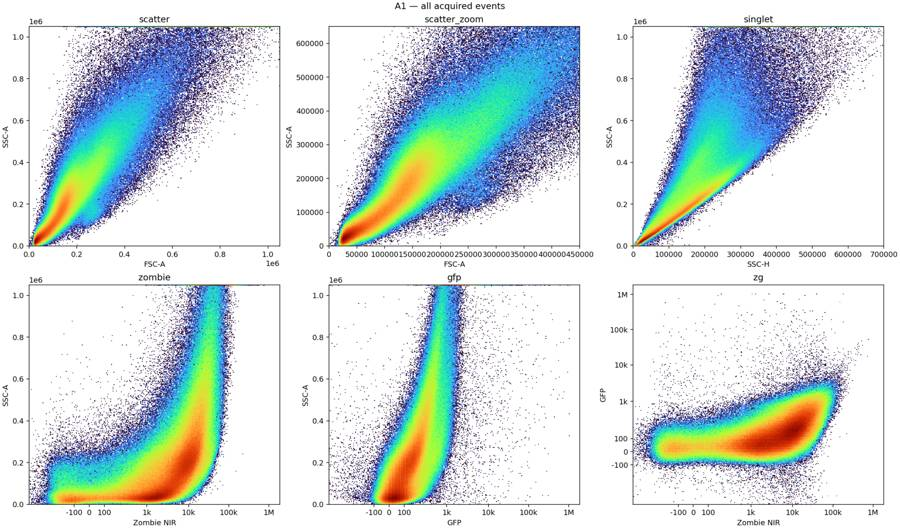
tool call · exec
text(await tools.exec_command({cmd:"tail -n 10 /task/outputs/work/explore.log\npython - <<'PY'\nimport pandas as pd\np=pd.read_csv('/task/outputs/qc_raw_metrics.csv')\nprint(p[['well','total','time_max_s','median_rate_s','min_full_rate_s','max_full_rate_s','last_5s_rate','FSC-A_sat_pct','SSC-A_sat_pct','BL1-A_sat_pct','RL3-A_sat_pct']].to_string(index=False))\nPY","max_output_tokens":2500}));
tool output
Script completed
Wall time 0.4 seconds
Output:
{"chunk_id":"c7fad4","wall_time_seconds":0.191378289,"exit_code":0,"original_token_count":310,"output":"A1 978726 time 0.014-46.250s rate=21514/s; last5=19175/s; max gap=0.006s\nA2 935707 time 0.014-97.949s rate=9712/s; last5=8250/s; max gap=0.020s\nA3 925910 time 0.014-97.658s rate=9719/s; last5=7541/s; max gap=0.033s\nA4 892332 time 0.014-97.738s rate=9275/s; last5=8286/s; max gap=0.020s\nA5 986514 time 0.014-97.871s rate=10271/s; last5=9072/s; max gap=0.053s\nwell total time_max_s median_rate_s min_full_rate_s max_full_rate_s last_5s_rate FSC-A_sat_pct SSC-A_sat_pct BL1-A_sat_pct RL3-A_sat_pct\n A1 978726 46.250 21514.0 16978 23012 19174.6 0.188817 1.173566 0.000817 0.0\n A2 935707 97.949 9712.0 6550 11084 8250.0 0.072138 0.500263 0.002244 0.0\n A3 925910 97.658 9719.0 6094 10764 7541.0 0.048277 0.466676 0.001836 0.0\n A4 892332 97.738 9275.0 7558 10108 8285.6 0.075196 0.530632 0.007172 0.0\n A5 986514 97.871 10271.0 6808 11428 9072.4 0.074809 0.612460 0.009630 0.0\n"}tool call · exec
text(await tools.exec_command({cmd:"cat > /task/outputs/plot_selected_raw.py <<'PY'\nfrom pathlib import Path\nimport numpy as np, flowkit as fk, matplotlib\nmatplotlib.use('Agg')\nimport matplotlib.pyplot as plt\nfrom matplotlib.colors import LogNorm\nlf=fk.transforms.LogicleTransform(1048576,.5,5,0)\nselected=['A1','A2','A3','A4','A5','A6']\nfig,axs=plt.subplots(len(selected),4,figsize=(17,21),constrained_layout=True)\nfor axes,well in zip(axs,selected):\n p=Path(f'/task/outputs/work/{well}_raw_hist.npz')\n if not p.exists():\n for ax in axes: ax.axis('off')\n continue\n d=np.load(p)\n for ax,(key,xk,yk,xlabel,ylabel) in zip(axes,[('scatter_zoom','xzoom','yzoom','FSC-A','SSC-A'),('singlet','height','lin','SSC-H','SSC-A'),('zombie','fl','lin','Zombie NIR','SSC-A'),('gfp','fl','lin','GFP','SSC-A')]):\n ax.pcolormesh(d[xk],d[yk],d[key].T,norm=LogNorm(vmin=1),cmap='turbo')\n if xk=='fl':\n vals=np.array([-100,0,100,1000,10000,100000,1000000]); ax.set_xticks(lf.apply(vals),['-100','0','100','1k','10k','100k','1M'])\n ax.set_xlabel(xlabel); ax.set_ylabel(ylabel); ax.set_title(well+' '+key)\nfig.savefig('/task/outputs/plots/initial_A1_A6.png',dpi=120)\nPY\npython /task/outputs/plot_selected_raw.py","max_output_tokens":1000}));
image((await tools.view_image({path:"/task/outputs/plots/initial_A1_A6.png"})).image_url);
tool output
Script completed Wall time 5.1 seconds Output:
{"chunk_id":"42d21b","wall_time_seconds":4.850460404,"exit_code":0,"original_token_count":0,"output":""}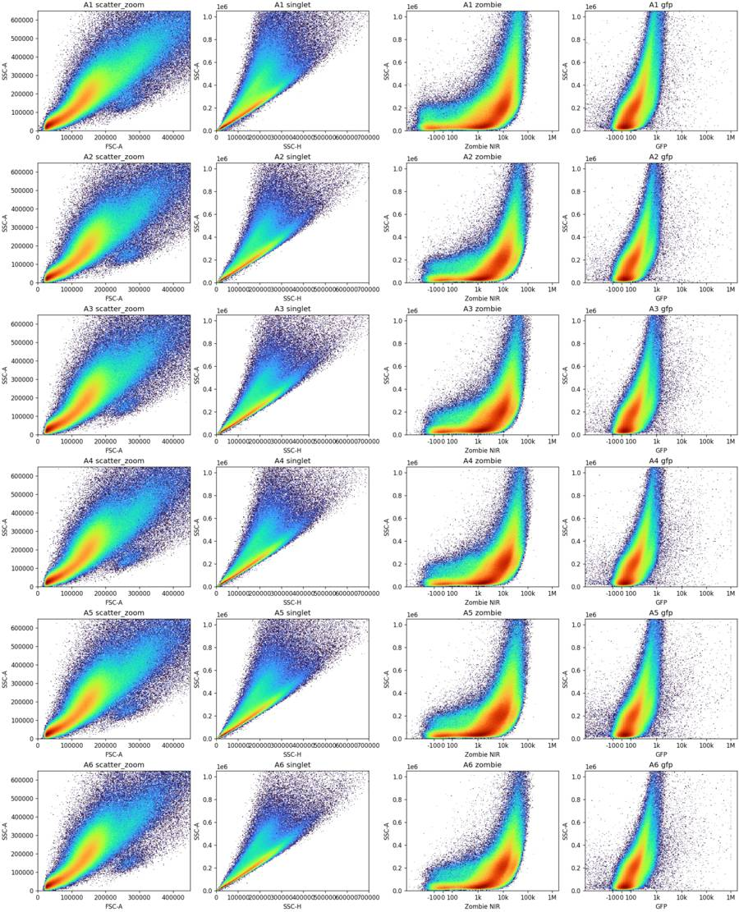
tool call · exec
text(await tools.exec_command({cmd:"tail -n 4 /task/outputs/work/explore.log\npython - <<'PY'\nimport flowkit as fk,numpy as np,matplotlib\nmatplotlib.use('Agg')\nimport matplotlib.pyplot as plt\nfrom matplotlib.colors import LogNorm\nfrom pathlib import Path\nlf=fk.transforms.LogicleTransform(1048576,.5,5,0); fe=np.linspace(-.2,1.05,301)\nfig,axs=plt.subplots(5,4,figsize=(18,20),constrained_layout=True)\nfor aa,w in zip(axs,['A1','A12','B6','C6','D5']):\n s=fk.Sample(f'/task/inputs/raw/Serotype panel_2_Rep2_Group_{w}.fcs'); e=s.get_events(source='raw',subsample=False)\n for ax,x,y,bins,xlab in [(aa[0],e[:,1],e[:,2],(np.linspace(0,450000,300),np.linspace(0,650000,300)),'FSC-A'),(aa[1],e[:,7],e[:,2]/np.maximum(e[:,7],1),(np.linspace(0,600000,300),np.linspace(.5,3,300)),'SSC-H'),(aa[2],lf.apply(e[:,4]),e[:,2],(fe,np.linspace(0,600000,300)),'Zombie NIR'),(aa[3],lf.apply(e[:,3]),e[:,2],(fe,np.linspace(0,600000,300)),'GFP')]:\n h,xe,ye=np.histogram2d(x,y,bins=bins); ax.pcolormesh(xe,ye,h.T,norm=LogNorm(vmin=1),cmap='turbo'); ax.set_title(w+' '+xlab); ax.set_xlabel(xlab)\n if xlab in ['Zombie NIR','GFP']:\n vals=np.array([-100,0,100,1000,10000,100000,1000000]); ax.set_xticks(lf.apply(vals),['-100','0','100','1k','10k','100k','1M'])\n if xlab=='SSC-H':ax.set_ylabel('SSC-A / SSC-H')\n else: ax.set_ylabel('SSC-A')\n print(w,'SSC-A/SSC-H quantiles on scatter region FSC>40k SSC>20k <1M:',np.percentile(e[(e[:,1]>40000)&(e[:,2]>20000)&(e[:,2]<1000000),2]/e[(e[:,1]>40000)&(e[:,2]>20000)&(e[:,2]<1000000),7],[1,5,10,25,50,75,90,95,99]))\nfig.savefig('/task/outputs/plots/raw_selected_diverse.png',dpi=120)\nPY","yield_time_ms":1000,"max_output_tokens":2000}));
tool output
Script completed
Wall time 1.2 seconds
Output:
{"chunk_id":"c08187","wall_time_seconds":1.001140628,"session_id":72551,"original_token_count":71,"output":"B1 733754 time 0.014-97.937s rate=7626/s; last5=7457/s; max gap=0.039s\nB2 728886 time 0.014-97.867s rate=7523/s; last5=7256/s; max gap=0.026s\nB3 667298 time 0.014-97.940s rate=6935/s; last5=6315/s; max gap=0.028s\nB4 598212 time 0.014-97.862s rate=6281/s; last5=4140/s; max gap=0.037s\n"}tool call · exec
text(await tools.write_stdin({session_id:72551,chars:"",yield_time_ms:1000,max_output_tokens:2000}));
text(await tools.exec_command({cmd:"tail -n 4 /task/outputs/work/explore.log","max_output_tokens":500}));
tool output
Script completed
Wall time 3.5 seconds
Output:
{"chunk_id":"716d1e","wall_time_seconds":3.481104072,"exit_code":0,"original_token_count":208,"output":"A1 SSC-A/SSC-H quantiles on scatter region FSC>40k SSC>20k <1M: [0.88288817 0.98093822 1.03715855 1.13616026 1.25966726 1.59460322\n 2.206003 2.57812381 3.48949137]\nA12 SSC-A/SSC-H quantiles on scatter region FSC>40k SSC>20k <1M: [0.94234855 1.00486415 1.03976295 1.11604608 1.21354085 1.37821087\n 1.86775301 2.23584678 3.00513268]\nB6 SSC-A/SSC-H quantiles on scatter region FSC>40k SSC>20k <1M: [0.94778482 1.00488528 1.03716821 1.10926644 1.20656086 1.37033149\n 1.82151122 2.1760995 2.92079522]\nC6 SSC-A/SSC-H quantiles on scatter region FSC>40k SSC>20k <1M: [0.94906903 1.00317403 1.03480462 1.10754962 1.20571361 1.35726418\n 1.77441879 2.12848093 2.81425776]\nD5 SSC-A/SSC-H quantiles on scatter region FSC>40k SSC>20k <1M: [0.99771053 1.02408685 1.04264682 1.09192449 1.17203098 1.24545943\n 1.33654854 1.43580022 1.95989689]\n"}
{"chunk_id":"574771","wall_time_seconds":0.000005166,"exit_code":0,"original_token_count":71,"output":"B3 667298 time 0.014-97.940s rate=6935/s; last5=6315/s; max gap=0.028s\nB4 598212 time 0.014-97.862s rate=6281/s; last5=4140/s; max gap=0.037s\nB5 837561 time 0.014-97.905s rate=8770/s; last5=6117/s; max gap=0.028s\nB6 877336 time 0.014-97.836s rate=9090/s; last5=6052/s; max gap=0.025s\n"}tool call · exec
image((await tools.view_image({path:"/task/outputs/plots/raw_selected_diverse.png"})).image_url);
tool output
Script completed Wall time 0.1 seconds Output:
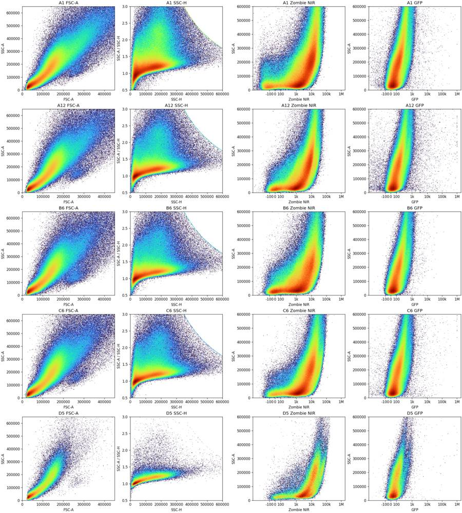
13
agent
The wells examined so far share a clear singlet band, with aggregates above it. I’m checking the fluorescence boundaries after those scatter gates; the raw fluorescence plots contain substantial debris and dead-cell signal. I’m also comparing each well’s flow profile over time, since a low total count alone does not establish an acquisition failure.
tool call · exec
text(await tools.exec_command({cmd:"cat > /task/outputs/gate_plate.py <<'PY'\n\"\"\"Reproduce shared uncompensated FlowKit gating; every acquired event is evaluated.\"\"\"\nfrom pathlib import Path\nimport json, gc\nimport numpy as np\nimport pandas as pd\nimport flowkit as fk\n\nROOT=Path('/task'); OUT=ROOT/'outputs'; WORK=OUT/'work'\nPOPULATIONS=['Cells','Singlets','Live','GFP_pos']\nPARENTS=['all_events','Cells','Singlets','Live']\n# Raw detector units; geometry chosen on all-event density plots.\nCELLS=np.array([(40000,20000),(120000,20000),(400000,150000),(950000,650000),\n (1000000,1000000),(250000,1000000),(65000,220000),(40000,80000)],float)\nSINGLETS=np.array([(15000,10000),(50000,40000),(100000,90000),(200000,210000),\n (400000,480000),(650000,850000),(650000,1000000),(400000,640000),\n (200000,310000),(100000,145000),(50000,65000),(15000,20000)],float)\nLIVE_MAX=1000.0\nGFP_MIN=500.0\n\ndef make_strategy():\n gs=fk.GatingStrategy()\n def dim(c,**kwargs): return fk.Dimension(c,compensation_ref='uncompensated',**kwargs)\n gs.add_gate(fk.gates.PolygonGate('Cells',[dim('FSC-A'),dim('SSC-A')],CELLS.tolist()),('root',))\n gs.add_gate(fk.gates.PolygonGate('Singlets',[dim('SSC-H'),dim('SSC-A')],SINGLETS.tolist()),('root','Cells'))\n gs.add_gate(fk.gates.RectangleGate('Live',[dim('RL3-A',range_max=LIVE_MAX)]),('root','Cells','Singlets'))\n gs.add_gate(fk.gates.RectangleGate('GFP_pos',[dim('BL1-A',range_min=GFP_MIN)]),('root','Cells','Singlets','Live'))\n return gs\n\ndef run():\n assert fk.__version__=='1.2.3'\n layout=pd.read_csv(ROOT/'inputs/plate_layout.csv')\n gs=make_strategy()\n with open(OUT/'gates.xml','wb') as f: fk.export_gatingml(gs,f)\n gs=fk.parse_gating_xml(str(OUT/'gates.xml'))\n assert [n for n,p in gs.get_gate_ids()]==POPULATIONS\n lf=fk.transforms.LogicleTransform(1048576,.5,5,0)\n fl=np.linspace(-.2,1.05,401); lin=np.linspace(0,1050000,301); height=np.linspace(0,700000,301)\n rows=[]; qc=[]\n for row in layout.itertuples(index=False):\n sample=fk.Sample(str(ROOT/'inputs/raw'/row.file))\n events=sample.get_events(source='raw',subsample=False)\n results=gs.gate_sample(sample)\n masks={pop:results.get_gate_membership(pop) for pop in POPULATIONS}\n total=sample.event_count\n assert len(events)==total\n prior=total\n for pop,parent in zip(POPULATIONS,PARENTS):\n count=int(results.get_gate_count(pop))\n assert count==int(masks[pop].sum()) and count<=prior\n rows.append(dict(file=row.file,well=row.well,population=pop,count=count,parent_population=parent,pct_of_parent=100.0*count/prior if prior else 0.0))\n prior=count\n pd.DataFrame(rows).to_csv(OUT/'counts.csv',index=False)\n c=masks['Cells']; sg=masks['Singlets']; live=masks['Live']; gfp=masks['GFP_pos']\n t=events[:,0]; f=events[:,1]; a=events[:,2]; h=events[:,7]\n z=lf.apply(events[sg,4]); g=lf.apply(events[live,3])\n # All events within each parent contribute to each displayed histogram.\n te=np.arange(0,np.ceil(t.max())+.001,1.)\n cnt,_=np.histogram(t,te)\n arr={'fl':fl,'lin':lin,'height':height,'time_edges':te,'time_counts':cnt,\n 'cells':np.histogram2d(f,a,bins=(lin,lin))[0],\n 'singlets':np.histogram2d(h[c],a[c],bins=(height,lin))[0],\n 'live':np.histogram2d(z,a[sg],bins=(fl,lin))[0],\n 'gfp':np.histogram2d(g,a[live],bins=(fl,lin))[0],\n 'z_hist':np.histogram(z,fl)[0], 'g_hist':np.histogram(g,fl)[0],\n 'g_on_singlets':np.histogram(lf.apply(events[sg,3]),fl)[0],\n 'time_fsc':np.histogram2d(t,f,bins=(te,lin))[0],\n 'time_ssc':np.histogram2d(t,a,bins=(te,lin))[0]}\n for pop,m in masks.items(): arr['time_'+pop]=np.histogram(t[m],te)[0]\n np.savez_compressed(WORK/f'{row.well}_gated_hist.npz',**arr)\n q={'file':row.file,'well':row.well,'total':total,**{pop:int(m.sum()) for pop,m in masks.items()}}\n q['live_pct']=100*live.sum()/sg.sum() if sg.sum() else 0\n q['gfp_pct']=100*gfp.sum()/live.sum() if live.sum() else 0\n for ch,col in [('RL3-A',4),('BL1-A',3)]:\n for name,mask in [('singlets',sg),('live',live)]:\n if mask.sum():\n qs=np.percentile(events[mask,col],[1,5,10,25,50,75,90,95,99,99.5,99.9])\n for v,val in zip([1,5,10,25,50,75,90,95,99,99.5,99.9],qs): q[f'{ch}_{name}_q{v}']=float(val)\n q['singlet_RL3_sat_pct']=100*np.mean(events[sg,4]>=1048575) if sg.any() else 0\n q['live_BL1_sat_pct']=100*np.mean(events[live,3]>=1048575) if live.any() else 0\n qc.append(q); pd.DataFrame(qc).to_csv(OUT/'qc_gated_metrics.csv',index=False)\n print(row.well, {pop:int(m.sum()) for pop,m in masks.items()},f'Live={q[\"live_pct\"]:.2f}% GFP={q[\"gfp_pct\"]:.2f}%',flush=True)\n del sample,events,results,masks,arr,z,g; gc.collect()\n with open(OUT/'gate_parameters.json','w') as f:\n json.dump({'units':'raw uncompensated detector values','Cells':CELLS.tolist(),'Singlets':SINGLETS.tolist(),'Live_RL3_A_max_exclusive':LIVE_MAX,'GFP_pos_BL1_A_min_inclusive':GFP_MIN,'plot_logicle':{'T':1048576,'W':.5,'M':5,'A':0},'flowkit_version':fk.__version__},f,indent=2)\n\nif __name__=='__main__': run()\nPY\nOPENBLAS_NUM_THREADS=1 python /task/outputs/gate_plate.py > /task/outputs/work/gating.log 2>&1","yield_time_ms":1000,"max_output_tokens":1000}));
tool output
Script completed
Wall time 1.2 seconds
Output:
{"chunk_id":"9dd379","wall_time_seconds":1.001148623,"session_id":27417,"original_token_count":0,"output":""}tool call · exec
text(await tools.exec_command({cmd:"tail -n 5 /task/outputs/work/explore.log\ntail -n 4 /task/outputs/work/gating.log\npython - <<'PY'\nimport pandas as pd\nx=pd.read_csv('/task/outputs/qc_raw_metrics.csv')\nprint(x[['well','total','time_max_s','median_rate_s','min_full_rate_s','max_full_rate_s','last_5s_rate','FSC-A_sat_pct','SSC-A_sat_pct','BL1-A_sat_pct','RL3-A_sat_pct']].to_string(index=False))\nPY","max_output_tokens":4500}));
tool output
Script completed
Wall time 0.3 seconds
Output:
{"chunk_id":"6ba929","wall_time_seconds":0.183545256,"exit_code":0,"original_token_count":1210,"output":"B12 904103 time 0.014-97.779s rate=9350/s; last5=8851/s; max gap=0.047s\nC1 624718 time 0.013-97.765s rate=6449/s; last5=6234/s; max gap=0.041s\nC2 695572 time 0.013-97.790s rate=7305/s; last5=4616/s; max gap=0.021s\nC3 656321 time 0.014-97.719s rate=6949/s; last5=3590/s; max gap=0.023s\nC4 679504 time 0.014-97.801s rate=7184/s; last5=4105/s; max gap=0.015s\nA1 {'Cells': 833290, 'Singlets': 578928, 'Live': 120902, 'GFP_pos': 1130} Live=20.88% GFP=0.93%\nA2 {'Cells': 791448, 'Singlets': 632096, 'Live': 90347, 'GFP_pos': 693} Live=14.29% GFP=0.77%\nwell total time_max_s median_rate_s min_full_rate_s max_full_rate_s last_5s_rate FSC-A_sat_pct SSC-A_sat_pct BL1-A_sat_pct RL3-A_sat_pct\n A1 978726 46.250 21514.0 16978 23012 19174.6 0.188817 1.173566 0.000817 0.000000\n A2 935707 97.949 9712.0 6550 11084 8250.0 0.072138 0.500263 0.002244 0.000000\n A3 925910 97.658 9719.0 6094 10764 7541.0 0.048277 0.466676 0.001836 0.000000\n A4 892332 97.738 9275.0 7558 10108 8285.6 0.075196 0.530632 0.007172 0.000000\n A5 986514 97.871 10271.0 6808 11428 9072.4 0.074809 0.612460 0.009630 0.000000\n A6 755396 97.106 7938.0 5734 8708 6884.6 0.032301 0.348427 0.010855 0.000000\n A7 848859 97.919 8832.0 6726 9598 7729.0 0.089296 0.533540 0.002710 0.000000\n A8 710140 97.939 7360.0 5108 8094 6483.6 0.068156 0.441462 0.005351 0.000141\n A9 958681 97.821 9943.0 6932 11036 8815.6 0.319189 1.083989 0.001982 0.000417\n A10 870505 97.699 9118.0 5396 10166 6795.8 0.137392 0.632277 0.003446 0.000115\n A11 844586 97.924 8736.0 6970 10752 8155.4 0.042861 0.378647 0.007696 0.000000\n A12 947510 97.898 9866.0 5920 11944 7413.8 0.093403 0.545746 0.011187 0.000000\n B1 733754 97.937 7626.0 4496 8416 7456.8 0.106575 0.475227 0.000000 0.000136\n B2 728886 97.867 7523.0 5794 8346 7256.0 0.132119 0.532731 0.000000 0.000137\n B3 667298 97.940 6935.0 5184 7830 6315.4 0.065188 0.350368 0.000000 0.000150\n B4 598212 97.862 6281.0 3504 7632 4139.6 0.044800 0.314939 0.000000 0.000334\n B5 837561 97.905 8770.0 5464 9686 6117.4 0.044534 0.411552 0.000000 0.000000\n B6 877336 97.836 9090.0 4992 10612 6052.4 0.051520 0.474505 0.000114 0.000000\n B7 954909 97.900 10308.0 560 18016 8912.4 0.118126 0.560786 0.000000 0.000628\n B8 918778 97.751 9905.0 32 15272 6992.8 0.042448 0.373322 0.000109 0.000109\n B9 862070 97.962 8923.0 7066 10528 8682.8 0.054636 0.399504 0.000348 0.000000\n B10 1083648 97.779 11368.0 6360 13136 7676.0 0.064597 0.604901 0.000923 0.000000\n B11 988574 97.925 10319.0 6538 11538 7466.6 0.034899 0.437701 0.004046 0.000101\n B12 904103 97.779 9350.0 7634 10380 8850.8 0.029090 0.383253 0.011503 0.000000\n C1 624718 97.765 6449.0 5080 7162 6233.6 0.005442 0.150788 0.000000 0.000160\n C2 695572 97.790 7305.0 3862 8480 4616.2 0.009776 0.195666 0.000288 0.000288\n C3 656321 97.719 6949.0 2428 7790 3589.6 0.040377 0.285226 0.000152 0.000152\n C4 679504 97.801 7184.0 3166 7932 4105.0 0.012068 0.200293 0.000000 0.000147\n"}tool call · exec
text(await tools.exec_command({cmd:"cat > /task/outputs/plot_gates.py <<'PY'\nfrom pathlib import Path\nimport numpy as np, pandas as pd, flowkit as fk, matplotlib\nmatplotlib.use('Agg')\nimport matplotlib.pyplot as plt\nfrom matplotlib.colors import LogNorm\nfrom scipy.ndimage import gaussian_filter1d\nfrom gate_plate import CELLS,SINGLETS,LIVE_MAX,GFP_MIN\nO=Path('/task/outputs'); P=O/'plots'; W=O/'work'\nlayout=pd.read_csv('/task/inputs/plate_layout.csv')\nlf=fk.transforms.LogicleTransform(1048576,.5,5,0)\nvals=np.array([-100,0,100,300,1000,10000,100000,1000000])\nticks=lf.apply(vals); labels=['-100','0','100','300','1k','10k','100k','1M']\n\ndef flaxis(ax):\n ax.set_xticks(ticks,labels,fontsize=7); ax.set_xlim(-.2,1.02)\n\ndef panels(rows,tag):\n fig,axs=plt.subplots(len(rows),4,figsize=(17,3.2*len(rows)),constrained_layout=True,squeeze=False)\n for axes,r in zip(axs,rows.itertuples(index=False)):\n p=W/f'{r.well}_gated_hist.npz'\n if not p.exists():\n for ax in axes: ax.axis('off')\n continue\n d=np.load(p)\n for i,(key,xk,yk) in enumerate([('cells','lin','lin'),('singlets','height','lin'),('live','fl','lin'),('gfp','fl','lin')]):\n ax=axes[i]; ax.pcolormesh(d[xk] if i>1 else d[xk]/1000,d[yk]/1000,d[key].T,norm=LogNorm(vmin=1),cmap='turbo')\n ax.set_ylabel('SSC-A (thousands)')\n ax.set_title(f'{r.well}: '+['Cells / all events','Singlets / Cells','Live / Singlets','GFP_pos / Live'][i],fontsize=10)\n if i<2:\n v=np.vstack(([CELLS,SINGLETS][i],[CELLS,SINGLETS][i][0]))/1000\n ax.plot(v[:,0],v[:,1],color='black',lw=1.4)\n ax.set_xlabel(['FSC-A (thousands)','SSC-H (thousands)'][i])\n else:\n flaxis(ax); ax.axvline(lf.apply(np.array([LIVE_MAX,GFP_MIN][i-2])),color='black',ls='--')\n ax.set_xlabel(['Zombie NIR (RL3-A)','GFP (BL1-A)'][i-2]+'; logicle')\n fig.suptitle('Shared raw-data gates, parent-population density; all events included',fontsize=14)\n fig.savefig(P/f'gates_{tag}.png',dpi=140); plt.close(fig)\n\nfor start in range(0,len(layout),6):\n if not (W/f'{layout.iloc[start].well}_gated_hist.npz').exists(): continue\n panels(layout.iloc[start:start+6],f'{start//6+1:02d}')\n\nfor page in range(3):\n rows=layout.iloc[page*14:(page+1)*14]\n fig,axs=plt.subplots(4,4,figsize=(16,12),constrained_layout=True)\n for ax,row in zip(axs.flat,rows.itertuples(index=False)):\n p=W/f'{row.well}_gated_hist.npz'\n if not p.exists(): ax.axis('off'); continue\n d=np.load(p); x=(d['fl'][:-1]+d['fl'][1:])/2\n zh=d['z_hist']/d['z_hist'].sum(); gh=d['g_hist']/max(1,d['g_hist'].sum())\n ax.plot(x,gaussian_filter1d(zh,1),label='Zombie NIR / Singlets',color='purple')\n ax.plot(x,gaussian_filter1d(gh,1),label='GFP / Live',color='green')\n ax.axvline(lf.apply(np.array([LIVE_MAX]))[0],color='purple',ls='--'); ax.axvline(lf.apply(np.array([GFP_MIN]))[0],color='green',ls='--')\n ax.set_title(row.well); flaxis(ax); ax.set_ylabel('Fraction / logicle bin'); ax.set_ylim(bottom=0)\n for ax in axs.flat[len(rows):]: ax.axis('off')\n axs.flat[0].legend(fontsize=6)\n fig.suptitle('Fluorescence boundaries on the specified parents; all events, display smoothing only',fontsize=14)\n fig.savefig(P/f'fluorescence_histograms_{page+1}.png',dpi=150); plt.close(fig)\nPY\nOPENBLAS_NUM_THREADS=1 python /task/outputs/plot_gates.py","yield_time_ms":1000,"max_output_tokens":1000}));
tool output
Script completed
Wall time 1.2 seconds
Output:
{"chunk_id":"ed1616","wall_time_seconds":1.000793683,"session_id":26194,"original_token_count":0,"output":""}tool call · exec
text(await tools.write_stdin({session_id:26194,chars:"",yield_time_ms:1000,max_output_tokens:1000}));
text(await tools.exec_command({cmd:"tail -n 6 /task/outputs/work/explore.log\ntail -n 6 /task/outputs/work/gating.log","max_output_tokens":1500}));
tool output
Script completed
Wall time 0.1 seconds
Output:
{"chunk_id":"2e96a9","wall_time_seconds":0.000003622,"exit_code":1,"original_token_count":196,"output":"Traceback (most recent call last):\n File \"/task/outputs/plot_gates.py\", line 41, in <module>\n panels(layout.iloc[start:start+6],f'{start//6+1:02d}')\n File \"/task/outputs/plot_gates.py\", line 34, in panels\n flaxis(ax); ax.axvline(lf.apply(np.array([LIVE_MAX,GFP_MIN][i-2])),color='black',ls='--')\n ^^^^^^^^^^^^^^^^^^^^^^^^^^^^^^^^^^^^^^^^^^^\n File \"/usr/local/lib/python3.12/site-packages/flowkit/_models/transforms/_transforms.py\", line 316, in apply\n return flowutils.transforms.logicle(\n ^^^^^^^^^^^^^^^^^^^^^^^^^^^^^\n File \"/usr/local/lib/python3.12/site-packages/flowutils/transforms.py\", line 68, in logicle\n channel_indices = range(data.shape[1])\n ~~~~~~~~~~^^^\nIndexError: tuple index out of range\n"}
{"chunk_id":"76f234","wall_time_seconds":0.000004784,"exit_code":0,"original_token_count":250,"output":"C6 891011 time 0.014-97.567s rate=9299/s; last5=6052/s; max gap=0.017s\nC7 649735 time 0.014-97.906s rate=6687/s; last5=6723/s; max gap=0.034s\nC8 639518 time 0.014-97.873s rate=6630/s; last5=6312/s; max gap=0.017s\nC9 801299 time 0.014-97.900s rate=8265/s; last5=7977/s; max gap=0.025s\nC10 927162 time 0.014-97.483s rate=9798/s; last5=5865/s; max gap=0.018s\nC11 868685 time 0.014-97.535s rate=9029/s; last5=7848/s; max gap=0.027s\nB6 {'Cells': 720462, 'Singlets': 581023, 'Live': 146619, 'GFP_pos': 849} Live=25.23% GFP=0.58%\nB7 {'Cells': 792209, 'Singlets': 627399, 'Live': 76604, 'GFP_pos': 629} Live=12.21% GFP=0.82%\nB8 {'Cells': 760588, 'Singlets': 612187, 'Live': 86217, 'GFP_pos': 970} Live=14.08% GFP=1.13%\nB9 {'Cells': 722502, 'Singlets': 585894, 'Live': 84770, 'GFP_pos': 843} Live=14.47% GFP=0.99%\nB10 {'Cells': 898705, 'Singlets': 706640, 'Live': 100929, 'GFP_pos': 1107} Live=14.28% GFP=1.10%\nB11 {'Cells': 816652, 'Singlets': 659577, 'Live': 100772, 'GFP_pos': 1593} Live=15.28% GFP=1.58%\n"}tool call · exec
text(await tools.apply_patch("*** Begin Patch\n*** Update File: /task/outputs/plot_gates.py\n@@\n- flaxis(ax); ax.axvline(lf.apply(np.array([LIVE_MAX,GFP_MIN][i-2])),color='black',ls='--')\n+ flaxis(ax); ax.axvline(lf.apply(np.array([[LIVE_MAX,GFP_MIN][i-2]]))[0],color='black',ls='--')\n*** End Patch"));
text(await tools.exec_command({cmd:"OPENBLAS_NUM_THREADS=1 python /task/outputs/plot_gates.py","yield_time_ms":1000,"max_output_tokens":1000}));
tool output
Script completed
Wall time 1.2 seconds
Output:
{}
{"chunk_id":"53a8e6","wall_time_seconds":1.001304422,"session_id":76700,"original_token_count":0,"output":""}18
agent
B7 and B8 have pronounced rate interruptions that need closer review. The first shared gate pass is saved as `gates.xml`, and counts are being generated for all wells, including those that may be excluded. I’m checking the remaining wells and refining the fluorescence cut-offs from the gated populations.
tool call · exec
const results = await Promise.allSettled([
tools.exec_command({cmd:"tail -n 8 /task/outputs/work/explore.log\ntail -n 4 /task/outputs/work/gating.log\nls -lh /task/outputs/plots/gates_01.png /task/outputs/plots/fluorescence_histograms_1.png /task/outputs/gates.xml","max_output_tokens":2000}),
tools.clock__curr_time({})
]); results.forEach((r,i)=>text({i,...r}));
image((await tools.view_image({path:"/task/outputs/plots/gates_01.png"})).image_url);
tool output
Script completed Wall time 0.1 seconds Output:
{"i":0,"status":"fulfilled","value":{"chunk_id":"ee5fa9","wall_time_seconds":0.000004295,"exit_code":2,"original_token_count":297,"output":"C7 649735 time 0.014-97.906s rate=6687/s; last5=6723/s; max gap=0.034s\nC8 639518 time 0.014-97.873s rate=6630/s; last5=6312/s; max gap=0.017s\nC9 801299 time 0.014-97.900s rate=8265/s; last5=7977/s; max gap=0.025s\nC10 927162 time 0.014-97.483s rate=9798/s; last5=5865/s; max gap=0.018s\nC11 868685 time 0.014-97.535s rate=9029/s; last5=7848/s; max gap=0.027s\nC12 578214 time 0.013-97.755s rate=6024/s; last5=5676/s; max gap=0.052s\nD1 800840 time 0.014-97.943s rate=8281/s; last5=7305/s; max gap=0.043s\nD2 894591 time 0.014-97.932s rate=9274/s; last5=7962/s; max gap=0.016s\nC8 {'Cells': 517164, 'Singlets': 444560, 'Live': 56967, 'GFP_pos': 961} Live=12.81% GFP=1.69%\nC9 {'Cells': 664173, 'Singlets': 546378, 'Live': 89411, 'GFP_pos': 785} Live=16.36% GFP=0.88%\nC10 {'Cells': 770087, 'Singlets': 621444, 'Live': 97718, 'GFP_pos': 720} Live=15.72% GFP=0.74%\nC11 {'Cells': 721292, 'Singlets': 589696, 'Live': 82140, 'GFP_pos': 563} Live=13.93% GFP=0.69%\nls: cannot access '/task/outputs/plots/fluorescence_histograms_1.png': No such file or directory\n-rw-r--r-- 1 root root 4.5K Nov 10 17:13 /task/outputs/gates.xml\n-rw-r--r-- 1 root root 1.9M Nov 10 17:13 /task/outputs/plots/gates_01.png\n"}}{"i":1,"status":"fulfilled","value":{"current_time":"2026-11-10 17:13:53 UTC"}}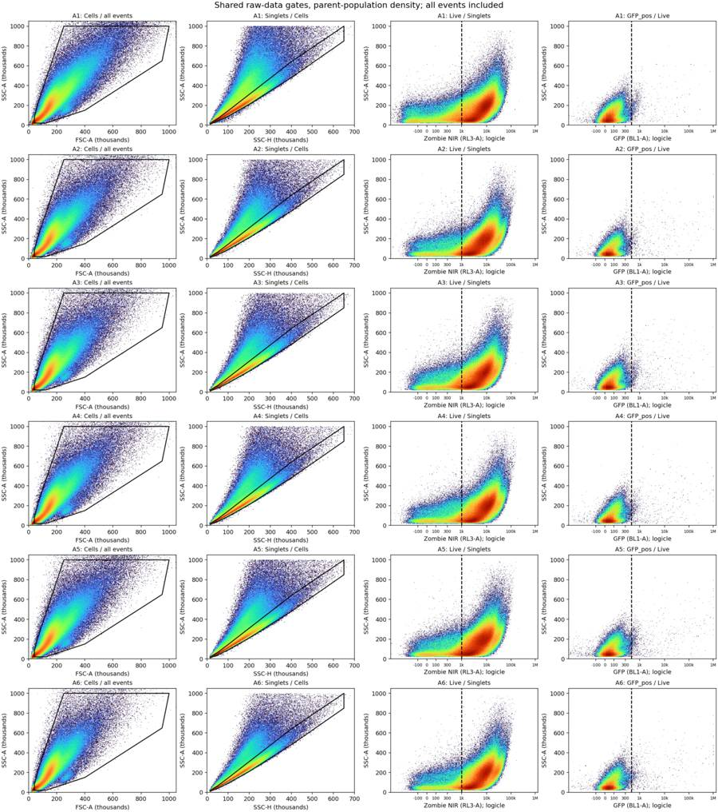
tool call · exec
text(await tools.write_stdin({session_id:76700,chars:"",yield_time_ms:1000,max_output_tokens:1000}));
text(await tools.exec_command({cmd:"tail -n 4 /task/outputs/work/explore.log\ntail -n 3 /task/outputs/work/gating.log","max_output_tokens":1000}));
image((await tools.view_image({path:"/task/outputs/plots/fluorescence_histograms_1.png"})).image_url);
tool output
Script failed
Wall time 5.1 seconds
Output:
{"chunk_id":"f1815e","wall_time_seconds":5.000494896,"session_id":76700,"original_token_count":0,"output":""}
{"chunk_id":"a994f4","wall_time_seconds":0.000004269,"exit_code":0,"original_token_count":141,"output":"D2 894591 time 0.014-97.932s rate=9274/s; last5=7962/s; max gap=0.016s\nD3 915097 time 0.014-97.745s rate=9467/s; last5=8540/s; max gap=0.030s\nD4 925805 time 0.014-97.528s rate=9590/s; last5=8421/s; max gap=0.016s\nD5 153195 time 0.015-97.768s rate=1592/s; last5=1351/s; max gap=0.029s\nD4 {'Cells': 775148, 'Singlets': 625613, 'Live': 97972, 'GFP_pos': 492} Live=15.66% GFP=0.50%\nD5 {'Cells': 125508, 'Singlets': 120590, 'Live': 9654, 'GFP_pos': 74} Live=8.01% GFP=0.77%\nD6 {'Cells': 600166, 'Singlets': 516862, 'Live': 44183, 'GFP_pos': 358} Live=8.55% GFP=0.81%\n"}
Script error:
unable to locate image at `/task/outputs/plots/fluorescence_histograms_1.png`: No such file or directory (os error 2)tool call · exec
text(await tools.exec_command({cmd:"python - <<'PY'\nimport numpy as np,pandas as pd,matplotlib\nmatplotlib.use('Agg')\nimport matplotlib.pyplot as plt\nimport flowkit as fk\nfrom scipy.ndimage import gaussian_filter1d\nfrom scipy.signal import find_peaks\nfrom pathlib import Path\nW=Path('/task/outputs/work');lf=fk.transforms.LogicleTransform(1048576,.5,5,0)\nfig,axs=plt.subplots(2,2,figsize=(14,10),constrained_layout=True)\nfor well in ['A1','A2','A7','B1','B3','B5','C7','D1','D5']:\n d=np.load(W/f'{well}_gated_hist.npz');x=(d['fl'][:-1]+d['fl'][1:])/2\n z=gaussian_filter1d(d['z_hist'].astype(float),2); g=gaussian_filter1d(d['g_hist'].astype(float),2)\n for ax,h,label in [(axs[0,0],z,'Zombie'),(axs[0,1],g,'GFP'),(axs[1,0],z,'Zombie'),(axs[1,1],g,'GFP')]:\n ax.plot(x,h/h.sum(),label=well); vals=np.array([-100,0,100,300,1000,10000,100000]);ax.set_xticks(lf.apply(vals),['-100','0','100','300','1k','10k','100k']);ax.set_xlim(-.02,.85);ax.set_xlabel(label)\n zmin=(x>lf.apply(np.array([100]))[0])&(x<lf.apply(np.array([2000]))[0]); j=np.flatnonzero(zmin)[np.argmin(z[zmin])]\n print(well,'Z valley100..2000',float(lf.inverse(np.array([x[j]]))[0]))\naxs[1,0].set_yscale('log');axs[1,1].set_yscale('log');axs[0,0].legend();axs[0,1].legend()\nfor ax in axs[:,0]: ax.axvline(lf.apply(np.array([1000]))[0],color='k',ls='--')\nfor ax in axs[:,1]: ax.axvline(lf.apply(np.array([500]))[0],color='k',ls='--')\nfig.savefig('/task/outputs/plots/fluorescence_selected_overlay.png',dpi=150)\nPY","max_output_tokens":1500}));
image((await tools.view_image({path:"/task/outputs/plots/fluorescence_selected_overlay.png"})).image_url);
tool output
Script completed Wall time 2.7 seconds Output:
{"chunk_id":"f9842b","wall_time_seconds":2.5494153920000002,"exit_code":0,"original_token_count":90,"output":"A1 Z valley100..2000 102.36288896224947\nA2 Z valley100..2000 111.98880971701735\nA7 Z valley100..2000 154.19624851584314\nB1 Z valley100..2000 159.9716497686689\nB3 Z valley100..2000 121.94715326522449\nB5 Z valley100..2000 102.36288896224947\nC7 Z valley100..2000 102.36288896224947\nD1 Z valley100..2000 116.92418535417801\nD5 Z valley100..2000 102.36288896224947\n"}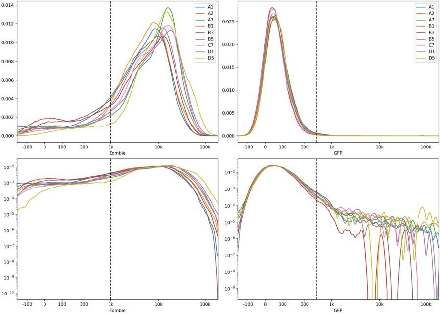
tool call · exec
text(await tools.write_stdin({session_id:27417,chars:"",yield_time_ms:1000,max_output_tokens:1000}));
text(await tools.write_stdin({session_id:76727,chars:"",yield_time_ms:1000,max_output_tokens:1000}));
text(await tools.write_stdin({session_id:76700,chars:"",yield_time_ms:1000,max_output_tokens:1000}));
text(await tools.exec_command({cmd:"python - <<'PY'\nimport pandas as pd,json\nr=pd.read_csv('/task/outputs/qc_raw_metrics.csv'); g=pd.read_csv('/task/outputs/qc_gated_metrics.csv')\nprint(r[['well','total','time_max_s','median_rate_s','min_full_rate_s','max_full_rate_s','last_5s_rate','FSC-A_sat_pct','SSC-A_sat_pct']].to_string(index=False))\nprint(g[['well','Cells','Singlets','Live','GFP_pos','live_pct','gfp_pct','BL1-A_live_q99','BL1-A_live_q99.5','BL1-A_live_q99.9']].to_string(index=False))\nm=json.load(open('/task/outputs/work/metadata.json'))\nfor x in m:\n md=x['metadata']; print(x['well'],'wellid',md['wellid'],'flow',md['#flowrate'],'volume',md['vol'],'times',md['btim'],md['etim'],'voltages',[md.get('p'+str(i)+'v') for i in [2,3,4,5,6]])\nPY","max_output_tokens":6000}));
tool output
Script completed
Wall time 0.4 seconds
Output:
{"chunk_id":"359ac6","wall_time_seconds":0.000003782,"exit_code":0,"original_token_count":0,"output":""}
{"chunk_id":"df3e70","wall_time_seconds":0.000002017,"exit_code":0,"original_token_count":0,"output":""}
{"chunk_id":"f8cf6b","wall_time_seconds":0.00000116,"exit_code":0,"original_token_count":0,"output":""}
{"chunk_id":"c6c0e3","wall_time_seconds":0.238416423,"exit_code":0,"original_token_count":3537,"output":"well total time_max_s median_rate_s min_full_rate_s max_full_rate_s last_5s_rate FSC-A_sat_pct SSC-A_sat_pct\n A1 978726 46.250 21514.0 16978 23012 19174.6 0.188817 1.173566\n A2 935707 97.949 9712.0 6550 11084 8250.0 0.072138 0.500263\n A3 925910 97.658 9719.0 6094 10764 7541.0 0.048277 0.466676\n A4 892332 97.738 9275.0 7558 10108 8285.6 0.075196 0.530632\n A5 986514 97.871 10271.0 6808 11428 9072.4 0.074809 0.612460\n A6 755396 97.106 7938.0 5734 8708 6884.6 0.032301 0.348427\n A7 848859 97.919 8832.0 6726 9598 7729.0 0.089296 0.533540\n A8 710140 97.939 7360.0 5108 8094 6483.6 0.068156 0.441462\n A9 958681 97.821 9943.0 6932 11036 8815.6 0.319189 1.083989\n A10 870505 97.699 9118.0 5396 10166 6795.8 0.137392 0.632277\n A11 844586 97.924 8736.0 6970 10752 8155.4 0.042861 0.378647\n A12 947510 97.898 9866.0 5920 11944 7413.8 0.093403 0.545746\n B1 733754 97.937 7626.0 4496 8416 7456.8 0.106575 0.475227\n B2 728886 97.867 7523.0 5794 8346 7256.0 0.132119 0.532731\n B3 667298 97.940 6935.0 5184 7830 6315.4 0.065188 0.350368\n B4 598212 97.862 6281.0 3504 7632 4139.6 0.044800 0.314939\n B5 837561 97.905 8770.0 5464 9686 6117.4 0.044534 0.411552\n B6 877336 97.836 9090.0 4992 10612 6052.4 0.051520 0.474505\n B7 954909 97.900 10308.0 560 18016 8912.4 0.118126 0.560786\n B8 918778 97.751 9905.0 32 15272 6992.8 0.042448 0.373322\n B9 862070 97.962 8923.0 7066 10528 8682.8 0.054636 0.399504\n B10 1083648 97.779 11368.0 6360 13136 7676.0 0.064597 0.604901\n B11 988574 97.925 10319.0 6538 11538 7466.6 0.034899 0.437701\n B12 904103 97.779 9350.0 7634 10380 8850.8 0.029090 0.383253\n C1 624718 97.765 6449.0 5080 7162 6233.6 0.005442 0.150788\n C2 695572 97.790 7305.0 3862 8480 4616.2 0.009776 0.195666\n C3 656321 97.719 6949.0 2428 7790 3589.6 0.040377 0.285226\n C4 679504 97.801 7184.0 3166 7932 4105.0 0.012068 0.200293\n C5 689593 97.862 7130.0 5592 8416 6912.4 0.007541 0.184747\n C6 891011 97.567 9299.0 4500 16296 6052.4 0.015151 0.314138\n C7 649735 97.906 6687.0 5244 7528 6723.4 0.013852 0.185768\n C8 639518 97.873 6630.0 4990 7278 6312.2 0.008444 0.235803\n C9 801299 97.900 8265.0 6440 9118 7976.8 0.040809 0.321977\n C10 927162 97.483 9798.0 4740 11192 5865.4 0.040230 0.411686\n C11 868685 97.535 9029.0 7482 14968 7848.4 0.037873 0.343162\n C12 578214 97.755 6024.0 4634 7052 5676.0 0.020754 0.176924\n D1 800840 97.943 8281.0 6904 9296 7304.8 0.020354 0.275211\n D2 894591 97.932 9274.0 6392 10692 7962.0 0.027834 0.326183\n D3 915097 97.745 9467.0 7538 10260 8539.8 0.073435 0.468256\n D4 925805 97.528 9590.0 7780 14474 8420.6 0.042234 0.426764\n D5 153195 97.768 1592.0 1154 1768 1351.0 0.001958 0.075720\n D6 726651 97.928 7571.0 6116 8426 6640.8 0.006468 0.199958\nwell Cells Singlets Live GFP_pos live_pct gfp_pct BL1-A_live_q99 BL1-A_live_q99.5 BL1-A_live_q99.9\n A1 833290 578928 120902 1130 20.883771 0.934641 485.00 658.000 2323.900\n A2 791448 632096 90347 693 14.293240 0.767043 436.00 681.000 13836.658\n A3 791045 643474 113968 1126 17.711361 0.987997 497.00 746
… [8,744 more characters not shown]tool call · exec
image((await tools.view_image({path:"/task/outputs/plots/fluorescence_histograms_1.png"})).image_url);
image((await tools.view_image({path:"/task/outputs/plots/raw_rates_2.png"})).image_url);
image((await tools.view_image({path:"/task/outputs/plots/raw_rates_3.png"})).image_url);
tool output
Script completed Wall time 0.1 seconds Output:
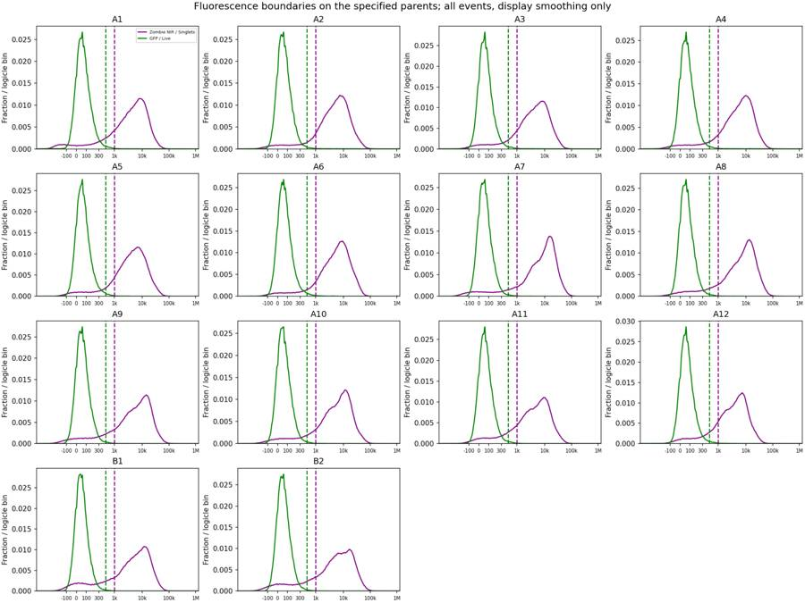
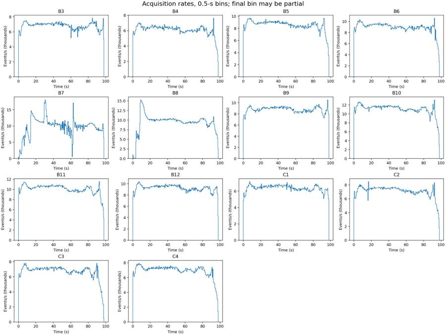
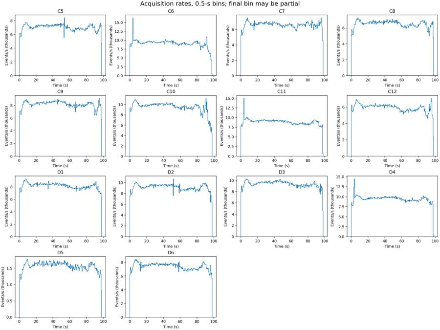
tool call · exec
text(await tools.exec_command({cmd:"python - <<'PY'\nimport numpy as np,pandas as pd\nq=pd.read_csv('/task/outputs/qc_raw_metrics.csv').set_index('well')\nfor well in q.index:\n d=np.load(f'/task/outputs/work/{well}_raw_hist.npz');e=d['time_edges'];n=d['time_counts'];width=np.diff(e);width[-1]=q.loc[well,'time_max_s']-e[-2];r=n/width\n base=np.median(r[(e[:-1]>=20)&(e[1:]<=min(80,q.loc[well,'time_max_s']-10))]); last3=(e[:-1]>=q.loc[well,'time_max_s']-3)&(e[1:]<=q.loc[well,'time_max_s']);full=(e[:-1]>=1)&(e[1:]<=q.loc[well,'time_max_s'])\n low=(r<.2*base)&full\n print(well, 'base',round(base),'last3 full',round(r[last3].mean()),'ratio',round(r[last3].mean()/base,2),'minimum',round(r[full].min()),'low<20% seconds',(low.sum()*.5),'end rates',np.round(r[-6:]).astype(int).tolist())\nPY","max_output_tokens":5000}));
tool output
Script completed
Wall time 0.4 seconds
Output:
{"chunk_id":"9b4a28","wall_time_seconds":0.189877295,"exit_code":0,"original_token_count":1266,"output":"A1 base 21183 last3 full 18896 ratio 0.89 minimum 16978 low<20% seconds 0.0 end rates [16978, 18616, 19622, 19374, 19888, 21496]\nA2 base 9716 last3 full 7343 ratio 0.76 minimum 6550 low<20% seconds 0.0 end rates [7860, 7138, 8522, 6550, 6646, 7900]\nA3 base 9751 last3 full 6377 ratio 0.65 minimum 5756 low<20% seconds 0.0 end rates [7220, 6654, 6160, 6094, 5756, 6443]\nA4 base 9341 last3 full 8558 ratio 0.92 minimum 7558 low<20% seconds 0.0 end rates [8876, 8232, 8532, 9004, 8148, 8538]\nA5 base 10267 last3 full 9961 ratio 0.97 minimum 6808 low<20% seconds 0.0 end rates [10778, 9822, 9614, 9540, 10050, 9879]\nA6 base 8038 last3 full 7194 ratio 0.89 minimum 5734 low<20% seconds 0.0 end rates [7310, 6950, 7400, 6992, 7316, 8151]\nA7 base 8844 last3 full 7532 ratio 0.85 minimum 6726 low<20% seconds 0.0 end rates [7858, 7468, 6818, 7758, 7760, 9265]\nA8 base 7435 last3 full 7008 ratio 0.94 minimum 5108 low<20% seconds 0.0 end rates [6570, 7606, 7694, 6614, 6554, 6485]\nA9 base 9994 last3 full 9255 ratio 0.93 minimum 6932 low<20% seconds 0.0 end rates [10058, 8112, 9904, 9978, 8222, 10498]\nA10 base 9063 last3 full 5968 ratio 0.66 minimum 5378 low<20% seconds 0.0 end rates [6874, 6214, 5980, 5396, 5378, 4809]\nA11 base 8789 last3 full 8845 ratio 1.01 minimum 6970 low<20% seconds 0.0 end rates [8340, 8530, 8892, 8598, 9864, 7672]\nA12 base 9929 last3 full 6190 ratio 0.62 minimum 5496 low<20% seconds 0.0 end rates [6850, 6610, 5920, 6072, 5496, 4578]\nB1 base 7632 last3 full 7822 ratio 1.02 minimum 4496 low<20% seconds 0.0 end rates [7294, 7248, 7812, 7996, 8762, 6872]\nB2 base 7502 last3 full 7530 ratio 1.0 minimum 5794 low<20% seconds 0.0 end rates [7394, 7440, 7684, 7800, 7330, 7414]\nB3 base 6955 last3 full 6662 ratio 0.96 minimum 5184 low<20% seconds 0.0 end rates [6152, 6254, 6366, 6750, 7788, 5689]\nB4 base 6303 last3 full 3588 ratio 0.57 minimum 2990 low<20% seconds 0.0 end rates [4086, 3804, 3556, 3504, 2990, 2751]\nB5 base 8773 last3 full 5481 ratio 0.62 minimum 4876 low<20% seconds 0.0 end rates [6020, 5560, 5464, 5486, 4876, 4402]\nB6 base 9087 last3 full 5276 ratio 0.58 minimum 3962 low<20% seconds 0.0 end rates [6046, 5842, 5538, 4992, 3962, 3994]\nB7 base 10424 last3 full 9258 ratio 0.89 minimum 560 low<20% seconds 2.5 end rates [8680, 8404, 9250, 10702, 9254, 7927]\nB8 base 9963 last3 full 6139 ratio 0.62 minimum 32 low<20% seconds 2.5 end rates [6814, 6282, 6400, 5958, 5242, 5131]\nB9 base 8958 last3 full 9092 ratio 1.01 minimum 7066 low<20% seconds 0.0 end rates [8554, 8696, 9182, 10528, 8498, 8654]\nB10 base 11454 last3 full 6721 ratio 0.59 minimum 5558 low<20% seconds 0.0 end rates [7672, 6934, 7080, 6360, 5558, 5362]\nB11 base 10508 last3 full 6771 ratio 0.64 minimum 5984 low<20% seconds 0.0 end rates [7196, 6876, 7260, 6538, 5984, 5085]\nB12 base 9427 last3 full 8931 ratio 0.95 minimum 7634 low<20% seconds 0.0 end rates [9364, 9240, 9558, 8316, 8176, 7688]\nC1 base 6485 last3 full 6056 ratio 0.93 minimum 5080 low<20% seconds 0.0 end rates [6132, 6054, 6240, 6324, 5532, 9543]\nC2 base 7392 last3 full 4065 ratio 0.55 minimum 3238 low<20% seconds 0.0 end rates [4610, 4250, 4366, 3862, 3238, 3107]\nC3 base 7016 last3 full 2988 ratio 0.43 minimum 2262 low<20% seconds 0.0 end rates [4062, 3242, 2944, 2428, 2262, 1100]\nC4 base 7220 last3 full 3605 ratio 0.5 minimum 2948 low<20% seconds 0.0 end rates [4212, 4032, 3668, 3166, 2948, 2405]\nC5 base 7185 last3 full 7252 ratio 1.01 minimum 5592 low<20% seconds 0.0 end rates [6792, 7330, 7124, 7636, 7380, 6533]\nC6 base 9357 last3 full 5333 ratio 0.57 minimum 4318 low<20% seconds 0.0 end rates [6130, 6318, 5398, 4500, 4318, 4313]\nC7 base 6689 last3 full 6784 ratio 1.01 minimum 5244 low<20% seconds 0.0 end rates [6982, 7524, 6924, 6426, 6064, 5635]\nC8 base 6659 last3 full 6618 ratio 0.99 minimum 4990 low<20% seconds 0.0 end rates [6422, 6606, 6760, 6442, 6858, 6389]\nC9 base 8337 last3 full 8206 ratio 0.98 minimum 6440 low<20% seconds 0.0 end rates [9118, 8024, 7990, 8198, 7700, 7227]\nC10 base 9852 last3 full 5537 ratio 0.56 minimum 4740 low<20% seconds 0.0 end rates [5822, 6452, 5106, 4740, 5566, 4561]\nC11 base 9006 last3 full 7768 ratio 0.86 minimum 7482 low<20% seconds 0.0 end rates [7942, 7482, 7640, 7624, 8150, 8800]\nC12 base 6021 last3 full 5661 ratio 0.94 minimum 4594 low<20% seconds 0.0 end rates [7052, 6648, 5026, 4984, 4594, 4624]\nD1 base 8307 last3 full 7091 ratio 0.85 minimum 6904 low<20% seconds 0.0 end rates [7280, 7176, 7036, 6904, 7060, 7196]\nD2 base 9333 last3 full 7630 ratio 0.82 minimum 6392 low<20% seconds 0.0 end rates [8208, 8410, 6392, 7600, 7540, 7410]\nD3 base 9575 last3 full 8390 ratio 0.88 minimum 7538 low<20% seconds 0.0 end rates [7538, 8158, 8982, 8596, 8676, 9286]\nD4 base 9649 last3 full 8378 ratio 0.87 minimum 7780 low<20% seconds 0.0 end rates [7982, 8196, 8726, 8812, 8176, 8750]\nD5 base 1604 last3 full 1317 ratio 0.82 minimum 1154 low<20% seconds 0.0 end rates [1288, 1198, 1448, 1340, 1310, 1511]\nD6 base 7602 last3 full 6662 ratio 0.88 minimum 6116 low<20% seconds 0.0 end rates [6274, 7616, 6770, 6186, 6464, 6631]\n"}tool call · exec
text(await tools.exec_command({cmd:"cat > /task/outputs/review_boundaries.py <<'PY'\nimport numpy as np,pandas as pd,flowkit as fk,matplotlib\nmatplotlib.use('Agg')\nimport matplotlib.pyplot as plt\nfrom matplotlib.colors import LogNorm\nfrom scipy.ndimage import gaussian_filter1d\nfrom scipy.signal import find_peaks\nfrom pathlib import Path\nO=Path('/task/outputs')\ngs=fk.parse_gating_xml(str(O/'gates.xml'))\nchosen=['A1','A2','A7','B1','B2','B5','B6','D5']\ntransforms=[fk.transforms.LogicleTransform(1048576,.5,4.5,0),fk.transforms.LogicleTransform(1048576,.5,5,0)]\nfig,axs=plt.subplots(4,4,figsize=(18,15),constrained_layout=True)\nrecords=[]\nfor k,well in enumerate(chosen):\n s=fk.Sample(f'/task/inputs/raw/Serotype panel_2_Rep2_Group_{well}.fcs');e=s.get_events(source='raw',subsample=False)\n res=gs.gate_sample(s);m=res.get_gate_membership('Singlets');z=e[m,4]\n ax=axs[k//2,2*(k%2)]; ax2=axs[k//2,2*(k%2)+1]\n for j,tf in enumerate(transforms):\n edges=np.linspace(-.1,1,700);cx=(edges[:-1]+edges[1:])/2\n hist=np.histogram(tf.apply(z),edges)[0];hs=gaussian_filter1d(hist.astype(float),3)\n raw=tf.inverse(cx);mask=(raw>-500)&(raw<5000)\n ax.plot(raw[mask],hs[mask]/hs.max(),label=f'M={[4.5,5][j]}')\n minima,_=find_peaks(-hs); minima=[float(raw[i]) for i in minima if 0<raw[i]<2000]\n print(well,'M',[4.5,5][j],'local minima',minima,flush=True)\n ax.set_xscale('symlog',linthresh=200); ax.set_xticks([-500,0,100,300,1000,3000],['-500','0','100','300','1k','3k']); ax.set_ylim(0,.5); ax.set_title(well+' Zombie NIR/Singlets'); ax.legend(fontsize=7)\n tf=transforms[1];edges=np.linspace(-.2,.8,301);ys=np.linspace(0,250000,251)\n H,xe,ye=np.histogram2d(tf.apply(z),e[m,2],bins=(edges,ys));ax2.pcolormesh(xe,ye/1000,H.T,norm=LogNorm(vmin=1),cmap='turbo')\n vs=np.array([-500,-100,0,100,300,1000,3000,10000]); ax2.set_xticks(tf.apply(vs),['-500','-100','0','100','300','1k','3k','10k'],fontsize=8);ax2.set_ylabel('SSC-A (thousands)');ax2.set_title(well+' Singlets')\n for cut in [100,200,300,500,1000]:\n live=m&(e[:,4]<cut); n=int(live.sum()); q=np.percentile(e[live,3],[95,99,99.5,99.9])\n records.append({'well':well,'live_cut':cut,'Live':n,'Live_pct':100*n/m.sum(),'GFP_ge500':int((e[live,3]>=500).sum()),'GFP_ge1000':int((e[live,3]>=1000).sum()),'GFP_q95':q[0],'GFP_q99':q[1],'GFP_q99.5':q[2],'GFP_q99.9':q[3]})\nfig.savefig(O/'plots/live_boundary_review.png',dpi=150)\npd.DataFrame(records).to_csv(O/'work/boundary_sensitivity_selected.csv',index=False)\nPY\nOPENBLAS_NUM_THREADS=1 python /task/outputs/review_boundaries.py > /task/outputs/work/boundary_review.log 2>&1","yield_time_ms":1000,"max_output_tokens":1000}));
tool output
Script completed
Wall time 1.2 seconds
Output:
{"chunk_id":"b0dea2","wall_time_seconds":1.001280629,"session_id":82211,"original_token_count":0,"output":""}tool call · exec
image((await tools.view_image({path:"/task/outputs/plots/gates_02.png"})).image_url);
image((await tools.view_image({path:"/task/outputs/plots/gates_03.png"})).image_url);
text(await tools.exec_command({cmd:"tail -n 8 /task/outputs/work/boundary_review.log","max_output_tokens":1000}));
tool output
Script completed Wall time 0.2 seconds Output:
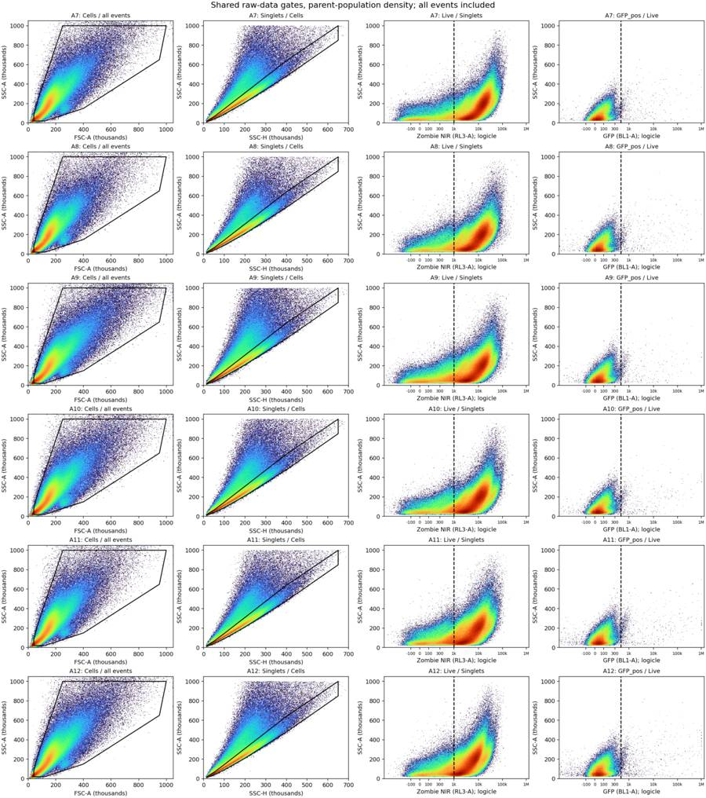
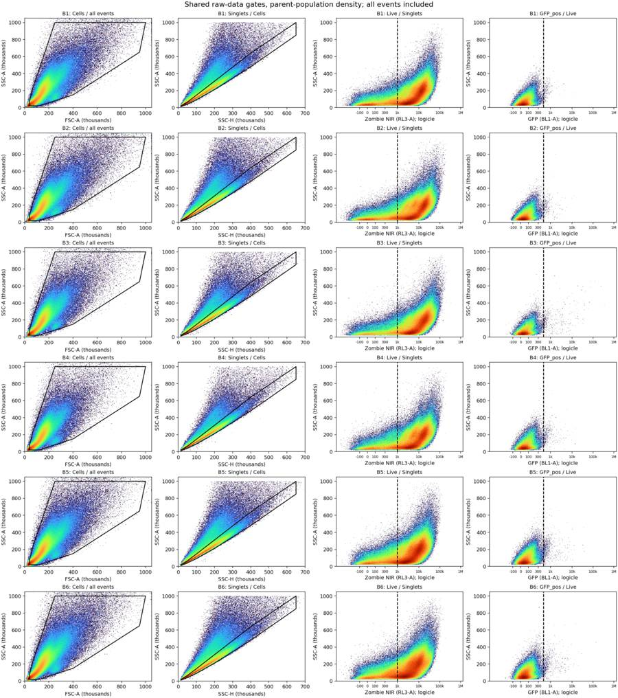
{"chunk_id":"8c9390","wall_time_seconds":0.000004083,"exit_code":0,"original_token_count":262,"output":"B2 M 4.5 local minima [279.1112713439063, 388.9051338826092, 632.1270875702269, 780.2551218415931, 1043.291567815474]\nB2 M 5 local minima [8.710098641942208, 38.688479936984635, 63.619208107315075, 118.93623225239119, 168.68056040679267]\nB5 M 4.5 local minima [318.80809758956485, 388.9051338826092, 473.0809196442865, 791.8394160717005]\nB5 M 5 local minima [36.659592324692085, 61.49208529530486, 97.06052934977617, 139.91399359858985, 174.83031106843885]\nB6 M 4.5 local minima [185.73714396133732, 266.21471137559337, 396.22551690181876, 481.165280628277, 594.0820992390252]\nB6 M 5 local minima [24.595745126039315, 59.37529026734808, 97.06052934977617, 113.93089283234345, 165.65868358053382]\nD5 M 4.5 local minima [191.75006094649365, 441.4999837253086, 566.6357061879144, 671.951945136218, 791.8394160717005, 956.893285729729, 1089.2428134295787]\nD5 M 5 local minima [81.05875702533487, 168.68056040679267, 262.15507385825936, 313.02156361344134, 373.10435328690164, 430.6407850526787, 556.3859692281258, 664.6851064203158, 782.5415891536795]\n"}tool call · exec
text(await tools.write_stdin({session_id:82211,chars:"",yield_time_ms:1000,max_output_tokens:1000}));
image((await tools.view_image({path:"/task/outputs/plots/live_boundary_review.png"})).image_url);
text(await tools.exec_command({cmd:"cat /task/outputs/work/boundary_sensitivity_selected.csv","max_output_tokens":4500}));
tool output
Script completed Wall time 0.1 seconds Output:
{"chunk_id":"e2deb5","wall_time_seconds":0.000003516,"exit_code":0,"original_token_count":0,"output":""}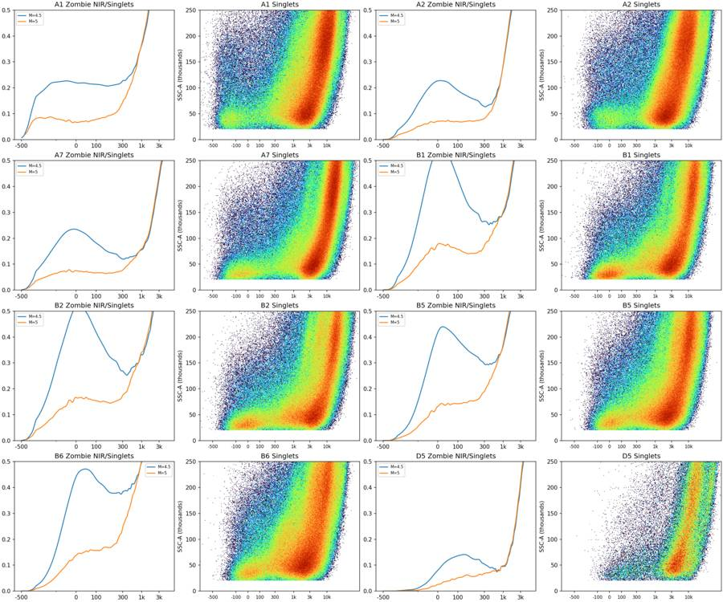
{"chunk_id":"ff2246","wall_time_seconds":0.000003649,"exit_code":0,"original_token_count":861,"output":"well,live_cut,Live,Live_pct,GFP_ge500,GFP_ge1000,GFP_q95,GFP_q99,GFP_q99.5,GFP_q99.9\nA1,100,41131,7.104683138490452,239,109,211.0,383.0,555.0999999999913,7213.69000000049\nA1,200,51609,8.914580051405355,326,121,219.0,398.91999999999825,564.9199999999983,5593.696000002223\nA1,300,61692,10.656247409004228,436,137,224.0,421.0,584.0,5019.17000000109\nA1,500,80557,13.914856424287649,635,160,228.0,445.0,621.2200000000012,4035.4240000001446\nA1,1000,120902,20.883771384351768,1130,232,238.0,485.0,658.0,2323.900000001653\nA2,100,30066,4.756555966182352,209,141,198.0,375.0,878.6749999999993,25510.010000002207\nA2,200,39755,6.289392750468283,285,185,209.0,393.91999999999825,848.9200000000128,26708.4540000029\nA2,300,47068,7.4463372652255355,357,208,217.0,419.0,777.6350000000166,25509.118000002025\nA2,500,59226,9.369779274034324,465,246,223.0,436.0,743.125,28894.600000020815\nA2,1000,90347,14.293240267301169,693,297,222.0,436.0,681.0,13836.658000000258\nA7,100,37616,6.490329037044706,160,108,163.0,277.84999999999854,406.0,9383.23500000043\nA7,200,47097,8.126197008126715,211,140,173.0,297.0,444.5199999999968,9606.112000000234\nA7,300,54298,9.368669875942508,258,161,181.0,311.0,478.5149999999994,9450.333000001818\nA7,500,66254,11.431578584122711,350,186,192.0,339.0,521.0,9133.31600000069\nA7,1000,89098,15.373121452111048,598,240,209.0,391.0,590.5149999999994,6512.8960000001825\nB1,100,44376,9.277781494614304,13,2,145.0,218.0,259.0,370.6250000000073\nB1,200,57771,12.078301665886132,27,7,153.0,234.0,279.15000000000146,415.6900000000096\nB1,300,67610,14.135361611025624,40,11,159.0,246.0,293.0,436.1730000000098\nB1,500,83669,17.49284973573292,81,14,170.0,268.0,323.6600000000035,492.9960000000283\nB1,1000,112537,23.52834180772061,277,22,183.0,306.0,390.0,665.0\nB2,100,40651,8.590477800553666,45,26,155.0,238.0,286.0,537.1000000000349\nB2,200,53001,11.200312757549503,62,31,163.0,254.0,305.0,550.0000000000728\nB2,300,62205,13.145326599184294,89,37,169.0,268.0,329.0,599.5920000000187\nB2,500,76797,16.228946979142453,130,45,179.0,289.0,362.0,612.4280000000872\nB2,1000,105124,22.21508421208343,339,55,196.0,336.0,427.0,785.2620000000461\nB5,100,37219,6.563410384645228,196,99,192.0,352.8199999999997,517.6399999999849,2616.536000000313\nB5,200,53344,9.40698470024759,270,126,199.0,357.0,505.56999999999243,2446.0770000003977\nB5,300,66403,11.709883118074023,335,140,205.0,366.0,504.0,2191.0\nB5,500,87892,15.499375736243273,512,158,216.0,400.0,529.0,2065.649000000689\nB5,1000,127752,22.52851509871832,1001,207,230.0,447.0,601.0,1445.976000000257\nB6,100,37516,6.456887248869666,184,91,193.0,346.0,494.8500000000058,2475.8950000000623\nB6,200,54500,9.380007331895639,273,114,200.0,360.0,500.00999999999476,2090.525000000096\nB6,300,69470,11.956497419207157,359,132,203.0,370.0,508.9649999999965,1940.5770000001794\nB6,500,96002,16.522925942690737,533,160,207.0,384.99000000000524,526.0,1695.993000000075\nB6,1000,146619,25.234629265967097,849,208,211.0,391.0,533.0,1288.7640000000247\nD5,100,2020,1.6750974375984742,8,7,175.0999999999999,300.0499999999997,370.0499999999997,5114.557000000332\nD5,200,3668,3.0417115847085165,24,15,191.0,368.3199999999997,759.5199999999968,30719.08800000955\nD5,300,4972,4.123061613732482,36,19,203.0,394.28999999999996,768.4799999999886,72900.71500000286\nD5,500,6816,5.65220996765901,45,26,213.0,394.0,699.0500000000047,79160.22500000024\nD5,1000,9654,8.005638941869144,74,36,227.0,422.3499999999967,712.820000000007,89636.66700000089\n"}27
agent
The Zombie NIR separation is shallow. On standard logicle plots, A2, A7, B1 and B2 place the common trough around 300–500 raw units, so I’ll use 400 for Live. The GFP boundary will be 500, just above the negative population in the weakest-signal wells. D5 has a low yield, but its flow is continuous; I’m checking its retained event counts before deciding usability.
tool call · exec
text(await tools.apply_patch("*** Begin Patch\n*** Update File: /task/outputs/gate_plate.py\n@@\n-LIVE_MAX=1000.0\n+LIVE_MAX=400.0\n@@\n- lf=fk.transforms.LogicleTransform(1048576,.5,5,0)\n+ lf=fk.transforms.LogicleTransform(1048576,.5,4.5,0)\n@@\n- json.dump({'units':'raw uncompensated detector values','Cells':CELLS.tolist(),'Singlets':SINGLETS.tolist(),'Live_RL3_A_max_exclusive':LIVE_MAX,'GFP_pos_BL1_A_min_inclusive':GFP_MIN,'plot_logicle':{'T':1048576,'W':.5,'M':5,'A':0},'flowkit_version':fk.__version__},f,indent=2)\n+ json.dump({'units':'raw uncompensated detector values','Cells':CELLS.tolist(),'Singlets':SINGLETS.tolist(),'Live_RL3_A_max_exclusive':LIVE_MAX,'GFP_pos_BL1_A_min_inclusive':GFP_MIN,'plot_logicle':{'T':1048576,'W':.5,'M':4.5,'A':0},'flowkit_version':fk.__version__},f,indent=2)\n*** Update File: /task/outputs/plot_gates.py\n@@\n-lf=fk.transforms.LogicleTransform(1048576,.5,5,0)\n+lf=fk.transforms.LogicleTransform(1048576,.5,4.5,0)\n*** End Patch"));
text(await tools.exec_command({cmd:"OPENBLAS_NUM_THREADS=1 python /task/outputs/gate_plate.py > /task/outputs/work/gating.log 2>&1","yield_time_ms":1000,"max_output_tokens":1000}));
tool output
Script completed
Wall time 1.2 seconds
Output:
{}
{"chunk_id":"d0a3f0","wall_time_seconds":1.001133516,"session_id":28475,"original_token_count":0,"output":""}tool call · exec
text(await tools.exec_command({cmd:"python - <<'PY'\nimport numpy as np,pandas as pd\nr=pd.read_csv('/task/outputs/qc_raw_metrics.csv').set_index('well')\nfor w in ['B7','B8','C3','D5']:\n d=np.load(f'/task/outputs/work/{w}_raw_hist.npz');te=d['time_edges'];rate=d['time_counts']/.5\n print('\\n',w,'max_gap_s',r.loc[w,'max_gap_s'])\n for j in range(len(rate)):\n if (w in ['B7','B8'] and (te[j]<20 or 27<te[j]<33 or 58<te[j]<66)) or (w=='C3' and te[j]>90):\n print(f'{te[j]:.1f}-{te[j+1]:.1f}: {rate[j]:.0f}/s')\nPY","max_output_tokens":4000}));
tool output
Script completed
Wall time 0.3 seconds
Output:
{"chunk_id":"3aacdf","wall_time_seconds":0.165906141,"exit_code":0,"original_token_count":684,"output":"\n B7 max_gap_s 0.1580000000000012\n0.0-0.5: 430/s\n0.5-1.0: 194/s\n1.0-1.5: 868/s\n1.5-2.0: 2700/s\n2.0-2.5: 2008/s\n2.5-3.0: 1556/s\n3.0-3.5: 1328/s\n3.5-4.0: 2314/s\n4.0-4.5: 5056/s\n4.5-5.0: 5978/s\n5.0-5.5: 6224/s\n5.5-6.0: 6938/s\n6.0-6.5: 6002/s\n6.5-7.0: 3832/s\n7.0-7.5: 7178/s\n7.5-8.0: 6466/s\n8.0-8.5: 7572/s\n8.5-9.0: 9616/s\n9.0-9.5: 8698/s\n9.5-10.0: 10418/s\n10.0-10.5: 8436/s\n10.5-11.0: 7894/s\n11.0-11.5: 7044/s\n11.5-12.0: 6488/s\n12.0-12.5: 5676/s\n12.5-13.0: 4926/s\n13.0-13.5: 4730/s\n13.5-14.0: 5568/s\n14.0-14.5: 13250/s\n14.5-15.0: 14672/s\n15.0-15.5: 14224/s\n15.5-16.0: 13738/s\n16.0-16.5: 13752/s\n16.5-17.0: 13316/s\n17.0-17.5: 13036/s\n17.5-18.0: 12866/s\n18.0-18.5: 12824/s\n18.5-19.0: 12444/s\n19.0-19.5: 12024/s\n19.5-20.0: 11996/s\n27.5-28.0: 11210/s\n28.0-28.5: 11320/s\n28.5-29.0: 10878/s\n29.0-29.5: 12222/s\n29.5-30.0: 17120/s\n30.0-30.5: 16936/s\n30.5-31.0: 18016/s\n31.0-31.5: 17082/s\n31.5-32.0: 15074/s\n32.0-32.5: 12836/s\n32.5-33.0: 13110/s\n58.5-59.0: 8308/s\n59.0-59.5: 9424/s\n59.5-60.0: 6238/s\n60.0-60.5: 8056/s\n60.5-61.0: 8744/s\n61.0-61.5: 7210/s\n61.5-62.0: 560/s\n62.0-62.5: 4388/s\n62.5-63.0: 17080/s\n63.0-63.5: 12386/s\n63.5-64.0: 11292/s\n64.0-64.5: 10766/s\n64.5-65.0: 9638/s\n65.0-65.5: 11170/s\n65.5-66.0: 10530/s\n\n B8 max_gap_s 0.068\n0.0-0.5: 944/s\n0.5-1.0: 348/s\n1.0-1.5: 132/s\n1.5-2.0: 52/s\n2.0-2.5: 36/s\n2.5-3.0: 32/s\n3.0-3.5: 72/s\n3.5-4.0: 4332/s\n4.0-4.5: 7192/s\n4.5-5.0: 5332/s\n5.0-5.5: 5722/s\n5.5-6.0: 6480/s\n6.0-6.5: 5264/s\n6.5-7.0: 6022/s\n7.0-7.5: 4928/s\n7.5-8.0: 7088/s\n8.0-8.5: 9180/s\n8.5-9.0: 14556/s\n9.0-9.5: 15272/s\n9.5-10.0: 15116/s\n10.0-10.5: 14810/s\n10.5-11.0: 14604/s\n11.0-11.5: 14350/s\n11.5-12.0: 14108/s\n12.0-12.5: 13740/s\n12.5-13.0: 13354/s\n13.0-13.5: 12534/s\n13.5-14.0: 11998/s\n14.0-14.5: 11638/s\n14.5-15.0: 11344/s\n15.0-15.5: 11094/s\n15.5-16.0: 10858/s\n16.0-16.5: 10868/s\n16.5-17.0: 10556/s\n17.0-17.5: 10330/s\n17.5-18.0: 10206/s\n18.0-18.5: 10194/s\n18.5-19.0: 10216/s\n19.0-19.5: 9992/s\n19.5-20.0: 10214/s\n27.5-28.0: 10256/s\n28.0-28.5: 9986/s\n28.5-29.0: 10032/s\n29.0-29.5: 10054/s\n29.5-30.0: 10002/s\n30.0-30.5: 10042/s\n30.5-31.0: 9882/s\n31.0-31.5: 9944/s\n31.5-32.0: 10342/s\n32.0-32.5: 10142/s\n32.5-33.0: 10000/s\n58.5-59.0: 9132/s\n59.0-59.5: 9116/s\n59.5-60.0: 9134/s\n60.0-60.5: 9264/s\n60.5-61.0: 9128/s\n61.0-61.5: 9374/s\n61.5-62.0: 9328/s\n62.0-62.5: 9146/s\n62.5-63.0: 9336/s\n63.0-63.5: 9334/s\n63.5-64.0: 9448/s\n64.0-64.5: 9270/s\n64.5-65.0: 9480/s\n65.0-65.5: 9472/s\n65.5-66.0: 9666/s\n\n C3 max_gap_s 0.0229999999999961\n90.5-91.0: 7438/s\n91.0-91.5: 6776/s\n91.5-92.0: 5796/s\n92.0-92.5: 5380/s\n92.5-93.0: 5112/s\n93.0-93.5: 4804/s\n93.5-94.0: 4642/s\n94.0-94.5: 4274/s\n94.5-95.0: 3926/s\n95.0-95.5: 4062/s\n95.5-96.0: 3242/s\n96.0-96.5: 2944/s\n96.5-97.0: 2428/s\n97.0-97.5: 2262/s\n97.5-98.0: 482/s\n\n D5 max_gap_s 0.0290000000000034\n"}tool call · exec
text(await tools.exec_command({cmd:"cat > /task/outputs/quality_control.py <<'PY'\n\"\"\"Validate saved-gate counts and audit every acquisition without trimming events.\"\"\"\nfrom pathlib import Path\nimport json\nimport numpy as np\nimport pandas as pd\nimport flowkit as fk\nfrom gate_plate import make_strategy, POPULATIONS, PARENTS\n\nROOT=Path('/task'); O=ROOT/'outputs'; W=O/'work'\n\ndef interval_runs(mask,edges):\n ix=np.flatnonzero(mask)\n if not len(ix): return []\n groups=np.split(ix,np.flatnonzero(np.diff(ix)>1)+1)\n return [[float(edges[g[0]]),float(edges[g[-1]+1])] for g in groups]\n\ndef run():\n layout=pd.read_csv(ROOT/'inputs/plate_layout.csv')\n counts=pd.read_csv(O/'counts.csv')\n raw=pd.read_csv(O/'qc_raw_metrics.csv').set_index('well')\n gs=fk.parse_gating_xml(str(O/'gates.xml')); source=make_strategy()\n assert len(layout)==42 and len(counts)==168\n assert not layout.is_control.any() and set(layout.control_type)=={'none'}\n assert len(set(layout.file))==42 and set(layout.file)=={p.name for p in (ROOT/'inputs/raw').glob('*.fcs')}\n assert gs.get_gate_ids()==source.get_gate_ids()\n assert len(gs.get_gate_ids())==4\n for pop,path in gs.get_gate_ids():\n assert all(d.compensation_ref=='uncompensated' for d in gs.get_gate(pop,path).dimensions)\n assert not gs.is_custom_gate('anything',pop,path)\n rows=[]; details=[]; validations=[]\n for row in layout.itertuples(index=False):\n s=fk.Sample(str(ROOT/'inputs/raw'/row.file));e=s.get_events(source='raw',subsample=False)\n ch={c:i for i,c in enumerate(s.pnn_labels)}\n assert all(c in ch for c in ['Time','FSC-A','SSC-A','SSC-H','RL3-A','BL1-A'])\n assert s.metadata['wellid']==row.well\n assert [s.metadata[f'p{ch[c]+1}v'] for c in ['FSC-A','SSC-A','BL1-A','VL1-A','RL3-A']]==['30','300','250','300','300']\n assert np.isfinite(e).all()\n assert s.event_count==int(s.metadata['tot'])==len(e)\n result=gs.gate_sample(s)\n result_source=source.gate_sample(s)\n masks={p:result.get_gate_membership(p) for p in POPULATIONS}\n sub=counts[counts.file==row.file];assert list(sub.population)==POPULATIONS\n previous=np.ones(s.event_count,dtype=bool)\n for (pop,parent),reported in zip(zip(POPULATIONS,PARENTS),sub.itertuples(index=False)):\n mask=masks[pop]\n assert np.array_equal(mask,result_source.get_gate_membership(pop))\n assert not np.any(mask&~previous)\n assert reported.well==row.well and reported.parent_population==parent\n assert reported.count==int(mask.sum())==result.get_gate_count(pop)\n pct=100*mask.sum()/previous.sum() if previous.any() else 0.0\n assert np.isclose(reported.pct_of_parent,pct,rtol=0,atol=1e-10)\n assert 0<=reported.pct_of_parent<=100\n previous=mask\n t=e[:,ch['Time']];tm=t.max()\n assert (np.diff(t)>=0).all()\n d=np.load(W/f'{row.well}_raw_hist.npz');edges=d['time_edges'];rate=d['time_counts']/.5\n complete=(edges[:-1]>=1)&(edges[1:]<=tm)\n central=(edges[:-1]>=.2*tm)&(edges[1:]<=.8*tm)\n baseline=float(np.median(rate[central]))\n low=(rate<.2*baseline)&complete\n plateau=(t>=.2*tm)&(t<.8*tm);tail=t>=tm-5\n r={'file':row.file,'well':row.well,'total':s.event_count,\n **{p:int(m.sum()) for p,m in masks.items()},'duration_s':float(tm-t.min()),'time_min_s':float(t.min()),'time_max_s':float(tm),\n 'flowrate_uL_min':float(s.metadata['#flowrate']),'baseline_rate_events_s':baseline,\n 'min_complete_halfsec_rate':float(rate[complete].min()),'max_complete_halfsec_rate':float(rate[complete].max()),\n 'terminal_5s_rate':float(tail.sum()/5),'terminal_5s_rate_ratio':float(tail.sum()/5/baseline),\n 'max_interevent_gap_s':float(np.diff(t).max()),'low_rate_seconds_after_1s':float(low.sum()*.5),\n 'low_rate_intervals_s':json.dumps(interval_runs(low,edges))}\n periods={'first_10s':t<10,'central_60pct':plateau,'last_5s':tail}\n detail={'well':row.well,'periods':{}}\n for name,p in periods.items():\n m={'total':int(p.sum()),**{pop:int((p&mask).sum()) for pop,mask in masks.items()}}\n m['Cells_pct']=100*m['Cells']/m['total'] if m['total'] else 0\n m['Singlets_pct']=100*m['Singlets']/m['Cells'] if m['Cells'] else 0\n m['Live_pct']=100*m['Live']/m['Singlets'] if m['Singlets'] else 0\n m['GFP_pct']=100*m['GFP_pos']/m['Live'] if m['Live'] else 0\n for c in ['FSC-A','SSC-A','SSC-H','RL3-A','BL1-A']:\n m[c+'_median_all']=float(np.median(e[p,ch[c]])) if p.any() else None\n detail['periods'][name]=m\n r[name+'_Live_pct']=m['Live_pct'];r[name+'_GFP_pct']=m['GFP_pct'];r[name+'_Cells_pct']=m['Cells_pct']\n for c in ['FSC-A','SSC-A','SSC-H','BL1-A','RL3-A']:\n maxval=float(s.channels.iloc[ch[c]].pnr)-1\n r[c+'_sat_pct']=100*np.mean(e[:,ch[c]]>=maxval)\n r['live_BL1_sat_n']=int((e[masks['Live'],ch['BL1-A']]>=1048575).sum())\n r['singlet_RL3_sat_n']=int((e[masks['Singlets'],ch['RL3-A']]>=1048575).sum())\n rows.append(r);details.append(detail)\n validations.append({'file':row.file,'well':row.well,'events':s.event_count,'xml_roundtrip_memberships_equal':True,'counts_exact':True,'nested_memberships':True,'pct_of_parent_exact':True,'metadata_valid':True})\n pd.DataFrame(rows).to_csv(O/'qc_metrics.csv',index=False)\n print(row.well,'validated',r['total'],'events; rate',round(baseline),'low intervals',r['low_rate_intervals_s'],flush=True)\n with open(W/'temporal_population_metrics.json','w') as f: json.dump(details,f,indent=2)\n with open(O/'validation.json','w') as f: json.dump({'flowkit_version':fk.__version__,'files':42,'population_rows':168,'all_checks_passed':True,'checks':validations},f,
… [1,796 more characters not shown]tool output
Script completed
Wall time 1.2 seconds
Output:
{"chunk_id":"ffef35","wall_time_seconds":1.001363972,"session_id":99849,"original_token_count":0,"output":""}tool call · exec
const rs=await Promise.allSettled([
tools.exec_command({cmd:"tail -n 5 /task/outputs/work/gating.log\ntail -n 4 /task/outputs/work/plot_qc.log\nls /task/outputs/plots/qc_time_*.png","max_output_tokens":2000}),
tools.clock__curr_time({})
]);rs.forEach((r,i)=>text({i,...r}));
image((await tools.view_image({path:"/task/outputs/plots/gates_04.png"})).image_url);
image((await tools.view_image({path:"/task/outputs/plots/gates_05.png"})).image_url);
tool output
Script completed Wall time 0.2 seconds Output:
{"i":0,"status":"fulfilled","value":{"chunk_id":"d4a7bd","wall_time_seconds":0.000004364,"exit_code":0,"original_token_count":178,"output":"D2 {'Cells': 744999, 'Singlets': 611968, 'Live': 52193, 'GFP_pos': 405} Live=8.53% GFP=0.78%\nD3 {'Cells': 761835, 'Singlets': 606724, 'Live': 70845, 'GFP_pos': 215} Live=11.68% GFP=0.30%\nD4 {'Cells': 775148, 'Singlets': 625613, 'Live': 53575, 'GFP_pos': 255} Live=8.56% GFP=0.48%\nD5 {'Cells': 125508, 'Singlets': 120590, 'Live': 5982, 'GFP_pos': 40} Live=4.96% GFP=0.67%\nD6 {'Cells': 600166, 'Singlets': 516862, 'Live': 22568, 'GFP_pos': 170} Live=4.37% GFP=0.75%\n/task/outputs/plots/qc_time_01.png\n/task/outputs/plots/qc_time_02.png\n/task/outputs/plots/qc_time_03.png\n/task/outputs/plots/qc_time_04.png\n/task/outputs/plots/qc_time_05.png\n/task/outputs/plots/qc_time_06.png\n/task/outputs/plots/qc_time_07.png\n"}}{"i":1,"status":"fulfilled","value":{"current_time":"2026-11-10 17:19:15 UTC"}}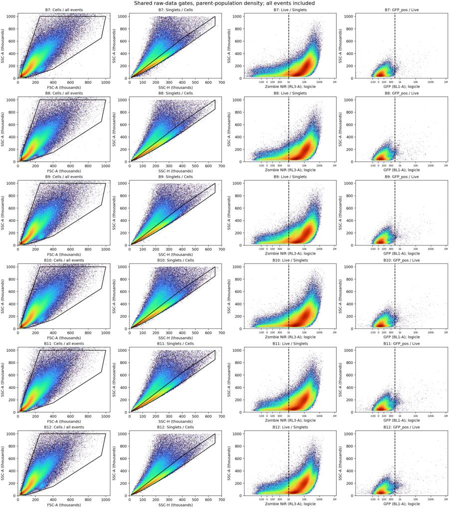
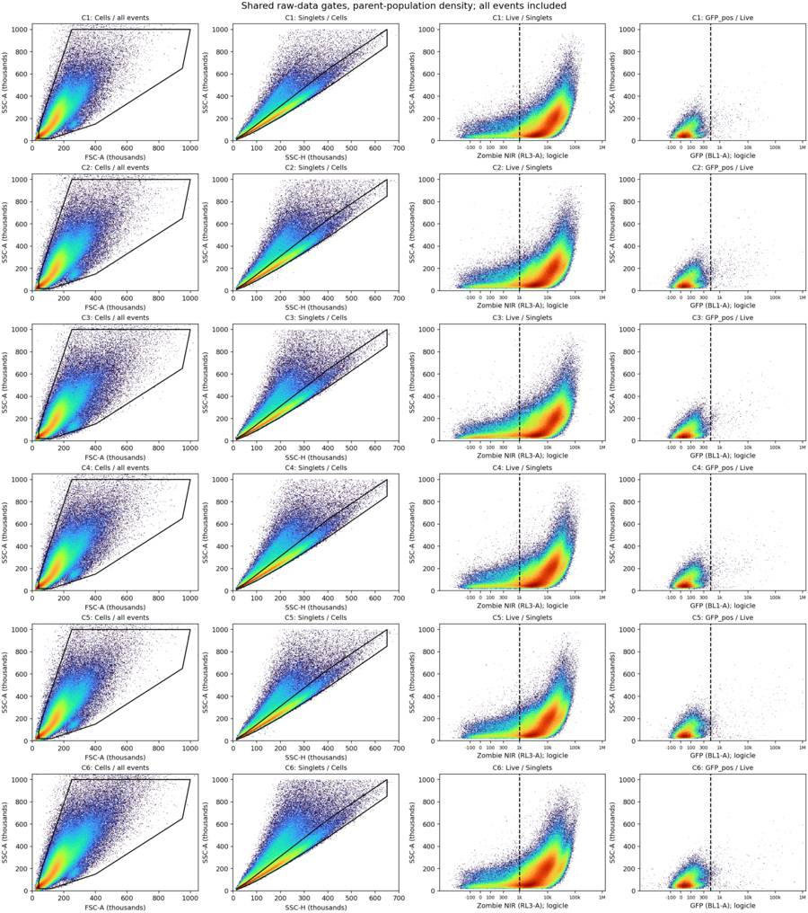
tool call · exec
text(await tools.write_stdin({session_id:28475,chars:"",yield_time_ms:1000,max_output_tokens:500}));
text(await tools.write_stdin({session_id:99849,chars:"",yield_time_ms:1000,max_output_tokens:500}));
const rs=await Promise.allSettled([
tools.exec_command({cmd:"OPENBLAS_NUM_THREADS=1 python /task/outputs/quality_control.py > /task/outputs/work/validation.log 2>&1","yield_time_ms":1000,"max_output_tokens":500}),
tools.exec_command({cmd:"OPENBLAS_NUM_THREADS=1 python /task/outputs/plot_gates.py > /task/outputs/work/plot_gates.log 2>&1","yield_time_ms":1000,"max_output_tokens":500})
]);rs.forEach((r,i)=>text({i,...r}));
image((await tools.view_image({path:"/task/outputs/plots/qc_flag_review.png"})).image_url);
tool output
Script completed Wall time 1.2 seconds Output:
{"chunk_id":"ad2083","wall_time_seconds":0.00000298,"exit_code":0,"original_token_count":0,"output":""}{"chunk_id":"5bc239","wall_time_seconds":0.000001208,"exit_code":0,"original_token_count":0,"output":""}{"i":0,"status":"fulfilled","value":{"chunk_id":"a300a0","wall_time_seconds":1.000659036,"session_id":50145,"original_token_count":0,"output":""}}{"i":1,"status":"fulfilled","value":{"chunk_id":"c1546b","wall_time_seconds":1.001705918,"session_id":54498,"original_token_count":0,"output":""}}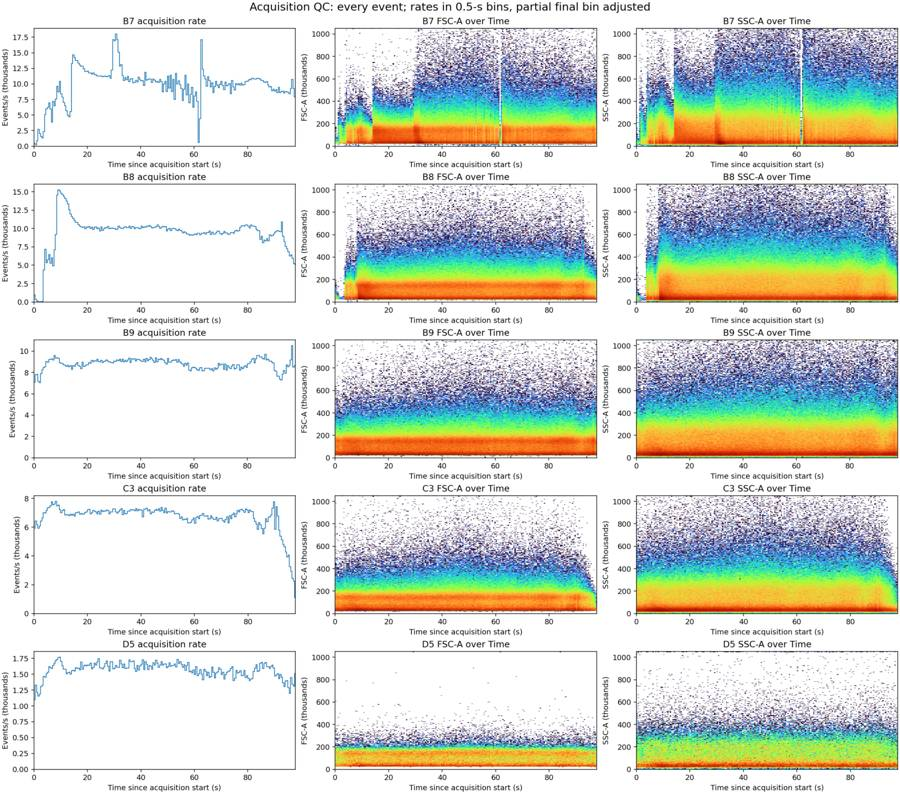
tool call · exec
text(await tools.exec_command({cmd:"cat > /task/outputs/plot_boundaries.py <<'PY'\nfrom pathlib import Path\nimport flowkit as fk,numpy as np,pandas as pd,matplotlib\nmatplotlib.use('Agg')\nimport matplotlib.pyplot as plt\nfrom matplotlib.colors import LogNorm\nfrom scipy.ndimage import gaussian_filter1d\nfrom gate_plate import LIVE_MAX,GFP_MIN\nO=Path('/task/outputs');W=O/'work';P=O/'plots'\ntf=fk.transforms.LogicleTransform(1048576,.5,4.5,0)\nvals=np.array([-100,0,100,400,1000,10000,100000]);ticks=tf.apply(vals);labs=['-100','0','100','400','1k','10k','100k']\nfig,axs=plt.subplots(3,4,figsize=(18,12),constrained_layout=True)\nfor ax,well in zip(axs[0],['A2','A7','B1','B2']):\n d=np.load(W/f'{well}_gated_hist.npz');ax.pcolormesh(d['fl'],d['lin']/1000,d['live'].T,norm=LogNorm(vmin=1),cmap='turbo');ax.set_ylim(0,400);ax.set_xticks(ticks,labs,fontsize=8);ax.set_xlim(-.05,.85);ax.axvline(tf.apply(np.array([LIVE_MAX]))[0],color='black',ls='--');ax.set_title(well+' Singlets: Live < 400');ax.set_xlabel('Zombie NIR (RL3-A), logicle');ax.set_ylabel('SSC-A (thousands)')\nfor ax,well in zip(axs[1],['B1','B2','D3','D4']):\n d=np.load(W/f'{well}_gated_hist.npz');ax.pcolormesh(d['fl'],d['lin']/1000,d['gfp'].T,norm=LogNorm(vmin=1),cmap='turbo');ax.set_ylim(0,400);ax.set_xticks(ticks,labs,fontsize=8);ax.set_xlim(-.05,.85);ax.axvline(tf.apply(np.array([GFP_MIN]))[0],color='black',ls='--');ax.set_title(well+' Live: GFP_pos >= 500');ax.set_xlabel('GFP (BL1-A), logicle');ax.set_ylabel('SSC-A (thousands)')\nfor well in ['A2','A7','B1','B2']:\n d=np.load(W/f'{well}_gated_hist.npz');cx=(d['fl'][:-1]+d['fl'][1:])/2;h=gaussian_filter1d(d['z_hist'].astype(float),1.5)\n axs[2,0].plot(cx,h/h.max(),label=well)\nfor well in ['B1','B2','D3','D4']:\n d=np.load(W/f'{well}_gated_hist.npz');cx=(d['fl'][:-1]+d['fl'][1:])/2;h=gaussian_filter1d(d['g_hist'].astype(float),1.5)\n axs[2,1].plot(cx,h/h.max(),label=well)\nfor ax,cut,label in [(axs[2,0],LIVE_MAX,'Zombie NIR on Singlets'),(axs[2,1],GFP_MIN,'GFP on Live')]:\n ax.axvline(tf.apply(np.array([cut]))[0],color='black',ls='--');ax.set_xticks(ticks,labs,fontsize=8);ax.set_xlim(-.05,.85);ax.set_ylabel('Density relative to peak');ax.set_xlabel(label);ax.legend(fontsize=8)\naxs[2,0].set_ylim(0,.6);axs[2,0].set_title('Shallow common dim/bright trough')\naxs[2,1].set_yscale('log');axs[2,1].set_ylim(1e-5,2);axs[2,1].set_title('Weakest GFP signals define negative edge')\nfor ax in axs[2,2:]:ax.axis('off')\naxs[2,2].text(0,1,'Final shared boundaries (raw units)\\n\\nLive: RL3-A < 400\\nGFP_pos: BL1-A >= 500\\n\\nEach gate is a 1-D rectangle nested\\nunder its required parent.\\n\\nEvery parent event contributes to these plots.\\nLogicle: T=1,048,576; W=0.5; M=4.5; A=0.\\n\\nNo controls: the viability trough is shallow,\\nand GFP specificity cannot be calibrated.',va='top',fontsize=11)\nfig.suptitle('Fluorescence boundary selection and cross-well checks',fontsize=16)\nfig.savefig(P/'boundary_selection.png',dpi=160);plt.close(fig)\nPY\nOPENBLAS_NUM_THREADS=1 python /task/outputs/plot_boundaries.py\npython - <<'PY'\nimport pandas as pd\nq=pd.read_csv('/task/outputs/qc_gated_metrics.csv')\nprint(q.loc[q.well.isin(['A2','A7','B1','B2','D3','D4','D5']),['well','Live','GFP_pos','gfp_pct','BL1-A_live_q99','BL1-A_live_q99.5','BL1-A_live_q99.9']].to_string(index=False))\nPY","yield_time_ms":1000,"max_output_tokens":1200}));
tool output
Script completed
Wall time 1.2 seconds
Output:
{"chunk_id":"66dae1","wall_time_seconds":1.001269812,"session_id":11520,"original_token_count":0,"output":""}tool call · exec
image((await tools.view_image({path:"/task/outputs/plots/qc_time_01.png"})).image_url);
image((await tools.view_image({path:"/task/outputs/plots/qc_time_02.png"})).image_url);
text(await tools.exec_command({cmd:"tail -n 4 /task/outputs/work/validation.log\ntail -n 3 /task/outputs/work/plot_gates.log","max_output_tokens":1000}));
tool output
Script completed Wall time 0.2 seconds Output:
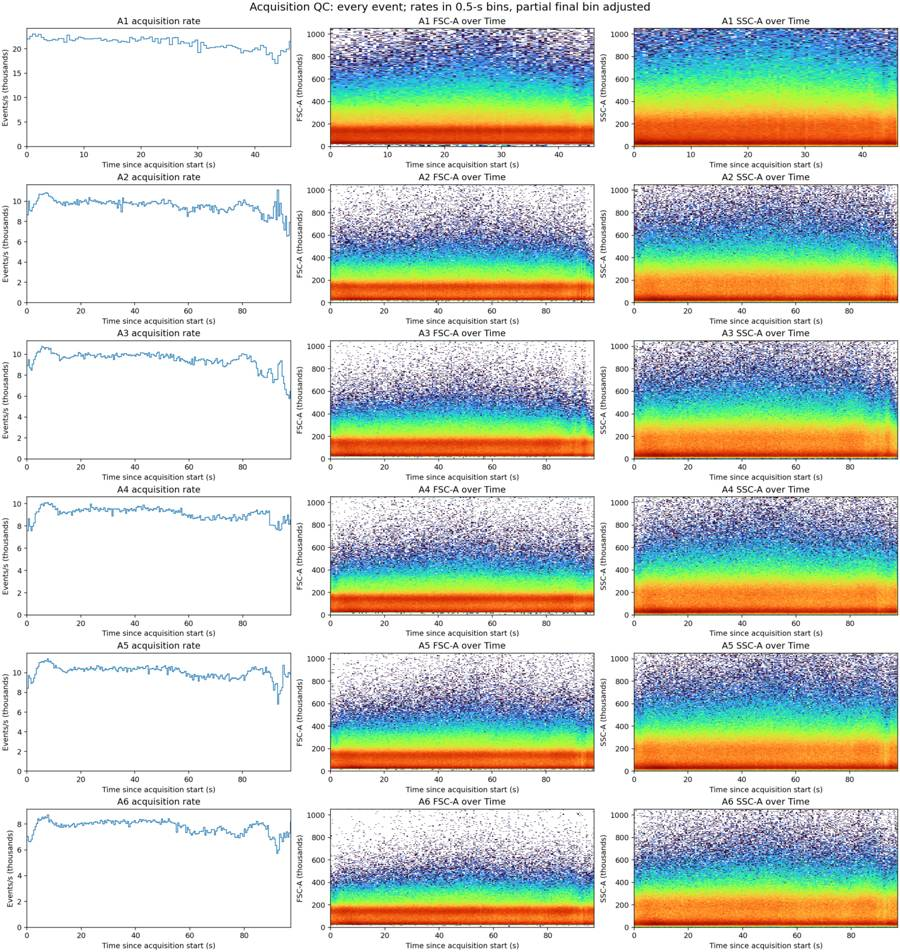
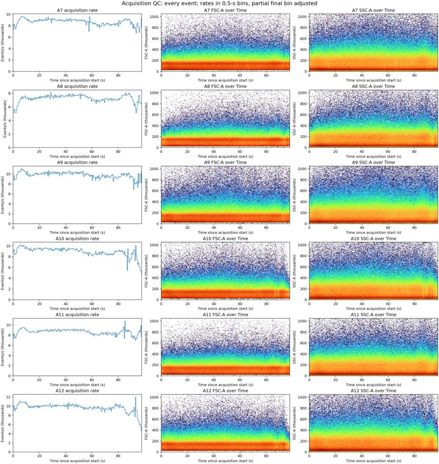
{"chunk_id":"d9cf9c","wall_time_seconds":0.000003977,"exit_code":0,"original_token_count":35,"output":" File \"/task/outputs/quality_control.py\", line 55, in run\n assert (np.diff(t)>=0).all()\n ^^^^^^^^^^^^^^^^^^^^^\nAssertionError\n"}tool call · exec
text(await tools.exec_command({cmd:"cat /task/outputs/work/validation.log\npython - <<'PY'\nimport pandas as pd\nx=pd.read_csv('/task/outputs/qc_raw_metrics.csv')\nprint(x.loc[x.time_reversals>0,['well','total','time_reversals','max_gap_s','nonfinite']].to_string(index=False))\nPY","max_output_tokens":2000}));
tool output
Script completed
Wall time 0.3 seconds
Output:
{"chunk_id":"6a3ee1","wall_time_seconds":0.176154489,"exit_code":0,"original_token_count":541,"output":"A1 validated 978726 events; rate 21520 low intervals []\nA2 validated 935707 events; rate 9716 low intervals []\nA3 validated 925910 events; rate 9742 low intervals []\nA4 validated 892332 events; rate 9348 low intervals []\nA5 validated 986514 events; rate 10271 low intervals []\nA6 validated 755396 events; rate 8056 low intervals []\nA7 validated 848859 events; rate 8858 low intervals []\nA8 validated 710140 events; rate 7452 low intervals []\nA9 validated 958681 events; rate 10019 low intervals []\nA10 validated 870505 events; rate 9108 low intervals []\nA11 validated 844586 events; rate 8818 low intervals []\nA12 validated 947510 events; rate 9921 low intervals []\nB1 validated 733754 events; rate 7649 low intervals []\nB2 validated 728886 events; rate 7514 low intervals []\nB3 validated 667298 events; rate 6961 low intervals []\nB4 validated 598212 events; rate 6288 low intervals []\nB5 validated 837561 events; rate 8773 low intervals []\nB6 validated 877336 events; rate 9092 low intervals []\nB7 validated 954909 events; rate 10475 low intervals [[1.0, 1.5], [2.0, 3.5], [61.5, 62.0]]\nB8 validated 918778 events; rate 9954 low intervals [[1.0, 3.5]]\nB9 validated 862070 events; rate 8975 low intervals []\nB10 validated 1083648 events; rate 11459 low intervals []\nB11 validated 988574 events; rate 10489 low intervals []\nB12 validated 904103 events; rate 9450 low intervals []\nC1 validated 624718 events; rate 6495 low intervals []\nC2 validated 695572 events; rate 7437 low intervals []\nC3 validated 656321 events; rate 6991 low intervals []\nC4 validated 679504 events; rate 7220 low intervals []\nC5 validated 689593 events; rate 7188 low intervals []\nTraceback (most recent call last):\n File \"/task/outputs/quality_control.py\", line 93, in <module>\n if __name__=='__main__':run()\n ^^^^^\n File \"/task/outputs/quality_control.py\", line 55, in run\n assert (np.diff(t)>=0).all()\n ^^^^^^^^^^^^^^^^^^^^^\nAssertionError\nwell total time_reversals max_gap_s nonfinite\n C6 891011 1 0.017 0\n C11 868685 1 0.027 0\n D4 925805 1 0.016 0\n"}tool call · exec
text(await tools.exec_command({cmd:"python - <<'PY'\nimport flowkit as fk,numpy as np\nfor w in ['C6','C11','D4']:\n s=fk.Sample(f'/task/inputs/raw/Serotype panel_2_Rep2_Group_{w}.fcs');e=s.get_events(source='raw',subsample=False);t=e[:,0]\n for i in np.flatnonzero(np.diff(t)<0):\n print(w,'event index',i,'fraction',i/len(e),'before',t[i],'after',t[i+1],'delta',t[i+1]-t[i]);print(e[i-5:i+7,:6])\n print('ranges 1000 before/after',t[max(0,i-1000):i].min(),t[max(0,i-1000):i].max(),t[i+1:i+1000].min(),t[i+1:i+1000].max())\nPY","max_output_tokens":3000}));
tool output
Script completed
Wall time 1.9 seconds
Output:
{"chunk_id":"78f3c3","wall_time_seconds":1.714872247,"exit_code":0,"original_token_count":868,"output":"C6 event index 4442 fraction 0.004985348104568855 before 3.894 after 0.014 delta -3.8800000000000003\n[[ 3.89400e+00 1.23778e+05 1.33622e+05 1.50000e+01 2.26700e+03\n 2.29400e+03]\n [ 3.89400e+00 4.14720e+04 3.85840e+04 9.80000e+01 8.99000e+02\n 7.50000e+02]\n [ 3.89400e+00 2.47721e+05 4.30455e+05 2.19000e+02 1.40640e+04\n 1.77000e+03]\n [ 3.89400e+00 1.39438e+05 2.04552e+05 2.41000e+02 3.06520e+04\n 2.17900e+03]\n [ 3.89400e+00 1.47616e+05 1.68069e+05 4.60000e+01 2.08200e+04\n 2.14500e+03]\n [ 3.89400e+00 8.78970e+04 1.12718e+05 3.70000e+01 5.53900e+03\n 5.26000e+02]\n [ 1.40000e-02 1.42007e+05 1.87028e+05 1.03000e+02 1.45950e+04\n 7.68000e+02]\n [ 1.40000e-02 1.33868e+05 1.97320e+05 2.00000e+01 6.53200e+03\n 2.78800e+03]\n [ 1.40000e-02 4.08270e+04 3.90100e+04 1.01000e+02 1.03100e+03\n -1.69000e+02]\n [ 1.40000e-02 1.55600e+05 1.65176e+05 1.55000e+02 -2.04000e+02\n 3.59010e+04]\n [ 1.40000e-02 2.09388e+05 2.74106e+05 2.34000e+02 1.58380e+04\n 6.97600e+03]\n [ 1.40000e-02 1.71154e+05 2.97740e+05 2.83000e+02 4.42500e+03\n 3.36600e+03]]\nranges 1000 before/after 3.781 3.894 0.014 0.131\nC11 event index 4102 fraction 0.004722079925404491 before 3.896 after 0.014 delta -3.882\n[[ 3.89600e+00 4.79830e+04 4.03700e+04 9.30000e+01 3.49400e+03\n 2.20000e+02]\n [ 3.89600e+00 4.90890e+04 3.01200e+04 6.10000e+01 1.89000e+03\n 8.58000e+02]\n [ 3.89600e+00 1.44127e+05 1.68055e+05 1.74000e+02 3.32340e+04\n 3.87500e+03]\n [ 3.89600e+00 1.75192e+05 3.56678e+05 2.00000e+02 3.83280e+04\n 1.69500e+03]\n [ 3.89600e+00 1.51882e+05 2.19033e+05 5.90000e+01 5.60800e+03\n 4.22100e+03]\n [ 3.89600e+00 1.38999e+05 1.68802e+05 5.40000e+01 8.45200e+03\n 3.32900e+03]\n [ 1.40000e-02 4.09040e+04 3.76710e+04 5.80000e+01 2.79500e+03\n 1.38400e+03]\n [ 1.40000e-02 6.51380e+04 4.28700e+04 6.50000e+01 1.65900e+03\n 3.39000e+02]\n [ 1.40000e-02 2.49463e+05 3.62210e+05 2.50000e+01 6.27300e+03\n 3.68000e+02]\n [ 1.40000e-02 8.45090e+04 7.27280e+04 5.70000e+01 2.14200e+03\n 2.47000e+02]\n [ 1.40000e-02 2.93200e+04 3.95520e+04 -1.70000e+01 2.85500e+03\n 8.61000e+02]\n [ 1.40000e-02 4.48330e+04 5.74960e+04 8.00000e+01 9.94500e+03\n 7.35000e+02]]\nranges 1000 before/after 3.762 3.896 0.014 0.146\nD4 event index 4083 fraction 0.004410215974206232 before 3.8360000000000003 after 0.014 delta -3.8220000000000005\n[[ 3.83500e+00 3.13180e+04 9.96400e+03 2.98000e+02 5.20000e+01\n 2.17700e+03]\n [ 3.83600e+00 8.40790e+04 7.02680e+04 6.60000e+01 3.12500e+03\n 7.80000e+02]\n [ 3.83600e+00 1.58357e+05 1.46124e+05 5.90000e+01 5.61000e+02\n 5.48300e+03]\n [ 3.83600e+00 3.08707e+05 1.32000e+05 1.28000e+02 2.06000e+02\n 2.37530e+04]\n [ 3.83600e+00 1.93038e+05 3.25091e+05 2.86000e+02 2.93620e+04\n 5.41600e+03]\n [ 3.83600e+00 3.24074e+05 5.57462e+05 1.11100e+03 1.62980e+04\n 3.88600e+03]\n [ 1.40000e-02 1.00237e+05 8.81120e+04 -3.20000e+01 1.49700e+03\n 2.15200e+03]\n [ 1.40000e-02 1.67670e+05 1.83433e+05 1.29000e+02 2.50920e+04\n 1.42200e+03]\n [ 1.40000e-02 1.34465e+05 1.27609e+05 4.40000e+01 4.74500e+03\n 1.27700e+03]\n [ 1.40000e-02 1.28072e+05 1.01591e+05 3.40000e+01 2.72800e+03\n 5.55000e+02]\n [ 1.50000e-02 1.15018e+05 1.43721e+05 1.95000e+02 6.98700e+03\n 3.02000e+03]\n [ 1.50000e-02 9.34350e+04 8.34280e+04 -4.90000e+01 1.01900e+03\n 4.58000e+02]]\nranges 1000 before/after 3.704 3.8360000000000003 0.014 0.14200000000000002\n"}36
agent
The timestamp audit found three additional anomalies: C6, C11 and D4 each begin with a short event block, then Time jumps backward by about 3.8 seconds. I’m documenting these separately from the B7/B8 flow interruptions. The saved-gate count checks pass for the files checked so far; this new issue concerns acquisition integrity.
tool call · exec
text(await tools.apply_patch("*** Begin Patch\n*** Update File: /task/outputs/quality_control.py\n@@\n- assert (np.diff(t)>=0).all()\n+ reversals=np.flatnonzero(np.diff(t)<0)\n@@\n 'max_interevent_gap_s':float(np.diff(t).max()),'low_rate_seconds_after_1s':float(low.sum()*.5),\n- 'low_rate_intervals_s':json.dumps(interval_runs(low,edges))}\n+ 'low_rate_intervals_s':json.dumps(interval_runs(low,edges)),\n+ 'time_reversals':int(len(reversals)),\n+ 'largest_backward_step_s':float(max(0,-np.diff(t).min())),\n+ 'events_before_first_reset':int(reversals[0]+1) if len(reversals) else 0,\n+ 'reset_from_s':float(t[reversals[0]]) if len(reversals) else None,\n+ 'reset_to_s':float(t[reversals[0]+1]) if len(reversals) else None}\n@@\n- validations.append({'file':row.file,'well':row.well,'events':s.event_count,'xml_roundtrip_memberships_equal':True,'counts_exact':True,'nested_memberships':True,'pct_of_parent_exact':True,'metadata_valid':True})\n+ validations.append({'file':row.file,'well':row.well,'events':s.event_count,'xml_roundtrip_memberships_equal':True,'counts_exact':True,'nested_memberships':True,'pct_of_parent_exact':True,'metadata_valid':True,'time_monotonic':not bool(len(reversals))})\n*** End Patch"));
text(await tools.exec_command({cmd:"OPENBLAS_NUM_THREADS=1 python /task/outputs/quality_control.py > /task/outputs/work/validation.log 2>&1","yield_time_ms":1000,"max_output_tokens":500}));
text(await tools.exec_command({cmd:"cat > /task/outputs/plot_time_resets.py <<'PY'\nfrom pathlib import Path\nimport numpy as np,pandas as pd,flowkit as fk,matplotlib\nmatplotlib.use('Agg')\nimport matplotlib.pyplot as plt\nO=Path('/task/outputs');fig,axs=plt.subplots(3,2,figsize=(13,11),constrained_layout=True)\nrows=[]\nfor aa,well in zip(axs,['C6','C11','D4']):\n s=fk.Sample(f'/task/inputs/raw/Serotype panel_2_Rep2_Group_{well}.fcs');e=s.get_events(source='raw',subsample=False);t=e[:,0];ii=np.arange(len(t))+1\n j=np.flatnonzero(np.diff(t)<0)[0]\n for ax in aa:ax.plot(ii,t,lw=.8);ax.set_xlabel('Event number (acquisition order)');ax.set_ylabel('Stored Time (seconds)')\n aa[0].set_title(f'{well}: complete acquisition ({len(t):,} events)')\n aa[1].set_xlim(1,15000);aa[1].set_ylim(0,4.3);aa[1].axvline(j+1,color='red',ls='--');aa[1].set_title(f'{well}: Time {t[j]:.3f} -> {t[j+1]:.3f} s after {j+1:,} events')\n print(well,'first Time',t[0],'prefix events',j+1,'prefix percent',100*(j+1)/len(t),'jump',t[j+1]-t[j],flush=True)\n # Compare the pre-reset and main segments; these are diagnostics only, not time gates.\n gs=fk.parse_gating_xml(str(O/'gates.xml'));r=gs.gate_sample(s)\n for name,mask in [('prefix',ii<=j+1),('main',ii>j+1)]:\n rec={'well':well,'segment':name,'total':int(mask.sum())}\n for pop in ['Cells','Singlets','Live','GFP_pos']:rec[pop]=int((mask&r.get_gate_membership(pop)).sum())\n for c,k in [('FSC-A',1),('SSC-A',2),('BL1-A',3),('RL3-A',4)]:rec[c+'_median']=float(np.median(e[mask,k]))\n rows.append(rec)\nfig.suptitle('Non-monotonic Time: all acquired events retained in saved-gate counts',fontsize=14)\nfig.savefig(O/'plots/time_resets.png',dpi=160);plt.close(fig)\npd.DataFrame(rows).to_csv(O/'work/time_reset_segments.csv',index=False)\nPY\nOPENBLAS_NUM_THREADS=1 python /task/outputs/plot_time_resets.py > /task/outputs/work/time_resets.log 2>&1","yield_time_ms":1000,"max_output_tokens":500}));
tool output
Script completed
Wall time 2.3 seconds
Output:
{}
{"chunk_id":"8cf036","wall_time_seconds":1.001206038,"session_id":4978,"original_token_count":0,"output":""}
{"chunk_id":"85c03b","wall_time_seconds":1.001140606,"session_id":47795,"original_token_count":0,"output":""}tool call · exec
text(await tools.exec_command({cmd:"cat > /task/outputs/audit_reset_duplicates.py <<'PY'\nfrom pathlib import Path\nimport flowkit as fk,numpy as np,pandas as pd,json\nO=Path('/task/outputs');raw=Path('/task/inputs/raw');layout=pd.read_csv('/task/inputs/plate_layout.csv')\nprefixes={};hashes={}\nfor well in ['C6','C11','D4']:\n s=fk.Sample(str(raw/f'Serotype panel_2_Rep2_Group_{well}.fcs'));e=s.get_events(source='raw',subsample=False)\n end=np.flatnonzero(np.diff(e[:,0])<0)[0]+1; prefix=e[:end,1:].copy();prefixes[well]=prefix\n hashes[well]=pd.util.hash_pandas_object(pd.DataFrame(prefix),index=False).to_numpy()\nkeys=np.unique(np.concatenate(list(hashes.values())));matches=[]\nfor row in layout.itertuples(index=False):\n s=fk.Sample(str(raw/row.file));e=s.get_events(source='raw',subsample=False)\n h=pd.util.hash_pandas_object(pd.DataFrame(e[:,1:]),index=False).to_numpy()\n for origin,oh in hashes.items():\n candidate=np.flatnonzero(np.isin(h,oh))\n if row.well==origin:candidate=candidate[candidate>=len(prefixes[origin])]\n for j in candidate:\n pidx=np.flatnonzero(oh==h[j])\n for p in pidx:\n if np.array_equal(prefixes[origin][p],e[j,1:]): matches.append({'prefix_well':origin,'prefix_event_zero_based':int(p),'match_well':row.well,'match_event_zero_based':int(j)})\n print(row.well,'audited',flush=True)\nwith open(O/'work/reset_duplicate_audit.json','w') as f:json.dump({'scope':'all 42 files, exact comparison of all 15 non-Time channels; prefix self-matches excluded','matches':matches},f,indent=2)\nprint('Exact duplicate matches',len(matches),flush=True)\nPY\nOPENBLAS_NUM_THREADS=1 python /task/outputs/audit_reset_duplicates.py > /task/outputs/work/reset_duplicate_audit.log 2>&1","yield_time_ms":1000,"max_output_tokens":500}));
text(await tools.write_stdin({session_id:11520,chars:"",yield_time_ms:1000,max_output_tokens:1500}));
image((await tools.view_image({path:"/task/outputs/plots/boundary_selection.png"})).image_url);
tool output
Script completed Wall time 1.2 seconds Output:
{"chunk_id":"d7442a","wall_time_seconds":1.000691381,"session_id":61041,"original_token_count":0,"output":""}{"chunk_id":"0850ec","wall_time_seconds":0.000002454,"exit_code":0,"original_token_count":162,"output":"well Live GFP_pos gfp_pct BL1-A_live_q99 BL1-A_live_q99.5 BL1-A_live_q99.9\n A2 53362 410 0.768337 427.00 744.780 28570.376\n A7 60494 297 0.490958 326.00 491.000 9408.977\n B1 76197 63 0.082680 257.00 309.000 480.000\n B2 69866 112 0.160307 280.00 347.000 610.135\n D3 70845 215 0.303479 306.00 401.780 3450.644\n D4 53575 255 0.475968 341.00 485.000 10786.398\n D5 5982 40 0.668673 394.19 701.285 72837.365\n"}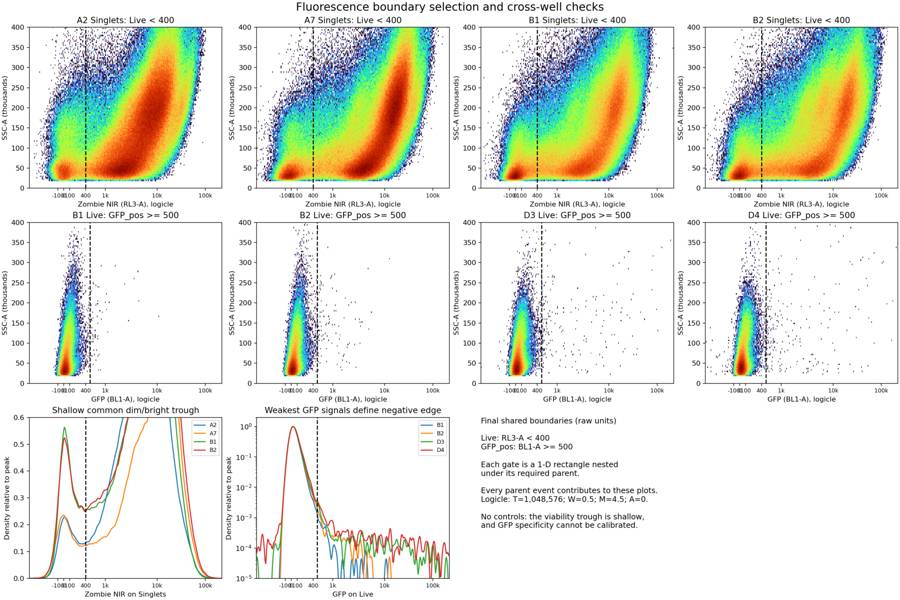
tool call · exec
text(await tools.exec_command({cmd:"python - <<'PY'\nimport pandas as pd\nq=pd.read_csv('/task/outputs/qc_gated_metrics.csv');print(q.sort_values('gfp_pct')[['well','Live','GFP_pos','gfp_pct']].head(12).to_string(index=False))\nPY\ntail -n 3 /task/outputs/work/validation.log\ntail -n 3 /task/outputs/work/reset_duplicate_audit.log","max_output_tokens":1500}));
text(await tools.write_stdin({session_id:47795,chars:"",yield_time_ms:1000,max_output_tokens:500}));
image((await tools.view_image({path:"/task/outputs/plots/time_resets.png"})).image_url);
tool output
Script completed Wall time 0.4 seconds Output:
{"chunk_id":"bf804b","wall_time_seconds":0.182793267,"exit_code":0,"original_token_count":148,"output":"well Live GFP_pos gfp_pct\n B1 76197 63 0.082680\n B2 69866 112 0.160307\n D3 70845 215 0.303479\n A9 78636 280 0.356071\n B4 52580 191 0.363256\n D1 46459 193 0.415420\n A10 62871 298 0.473986\n D4 53575 255 0.475968\n A7 60494 297 0.490958\n C3 43515 226 0.519361\n B6 83400 441 0.528777\n B5 77753 415 0.533741\nD4 validated 925805 events; rate 9664 low intervals []\nD5 validated 153195 events; rate 1609 low intervals []\nD6 validated 726651 events; rate 7615 low intervals []\nD5 audited\nD6 audited\nExact duplicate matches 0\n"}{"chunk_id":"41886b","wall_time_seconds":0.000002125,"exit_code":0,"original_token_count":0,"output":""}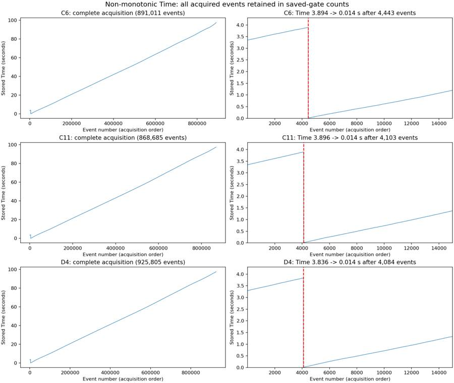
tool call · exec
text(await tools.exec_command({cmd:"python - <<'PY'\nimport pandas as pd,json\nx=pd.read_csv('/task/outputs/qc_metrics.csv')\nx['live_diff_end_pp']=x.last_5s_Live_pct-x.central_60pct_Live_pct\nx['cells_diff_end_pp']=x.last_5s_Cells_pct-x.central_60pct_Cells_pct\nprint(x[['well','terminal_5s_rate_ratio','first_10s_Live_pct','central_60pct_Live_pct','last_5s_Live_pct','live_diff_end_pp','cells_diff_end_pp','live_BL1_sat_n','singlet_RL3_sat_n','time_reversals']].round(3).to_string(index=False))\nprint(pd.read_csv('/task/outputs/work/time_reset_segments.csv').to_string(index=False))\nPY","max_output_tokens":5000}));
tool output
Script completed
Wall time 0.3 seconds
Output:
{"chunk_id":"42ce69","wall_time_seconds":0.16954551,"exit_code":0,"original_token_count":2114,"output":"well terminal_5s_rate_ratio first_10s_Live_pct central_60pct_Live_pct last_5s_Live_pct live_diff_end_pp cells_diff_end_pp live_BL1_sat_n singlet_RL3_sat_n time_reversals\n A1 0.891 12.613 12.278 12.232 -0.046 -0.955 0 0 0\n A2 0.849 9.084 8.232 9.030 0.797 -1.851 5 0 0\n A3 0.774 10.082 9.344 9.646 0.301 -1.292 1 0 0\n A4 0.886 9.611 8.635 9.274 0.639 -1.501 4 0 0\n A5 0.883 9.889 9.095 9.810 0.715 -1.328 5 0 0\n A6 0.855 7.778 7.181 8.160 0.979 -1.980 11 0 0\n A7 0.873 10.947 10.334 11.075 0.740 -1.675 1 0 0\n A8 0.870 10.449 9.415 10.170 0.755 -1.700 2 0 0\n A9 0.880 13.686 12.657 13.123 0.466 -1.554 1 0 0\n A10 0.746 11.629 10.416 11.497 1.081 -2.514 3 0 0\n A11 0.925 12.686 11.868 12.801 0.934 -1.859 9 0 0\n A12 0.747 11.397 10.744 11.302 0.558 -2.571 11 0 0\n B1 0.975 17.280 15.731 16.533 0.803 -1.244 0 0 0\n B2 0.966 15.972 14.466 14.980 0.514 -2.259 0 0 0\n B3 0.907 11.061 10.230 10.665 0.435 -1.903 0 0 0\n B4 0.658 13.599 12.363 13.780 1.417 -4.297 0 0 0\n B5 0.698 14.686 13.295 14.696 1.401 -3.354 0 0 0\n B6 0.666 15.291 14.133 14.671 0.538 -1.827 0 0 0\n B7 0.851 6.777 6.510 6.279 -0.231 0.077 0 0 0\n B8 0.703 8.613 7.599 8.367 0.768 -3.533 0 0 0\n B9 0.968 8.352 7.712 7.744 0.032 -0.832 0 0 0\n B10 0.670 8.325 7.461 7.702 0.242 -3.772 1 0 0\n B11 0.712 8.423 7.739 8.516 0.777 -2.834 2 0 0\n B12 0.937 7.494 6.807 7.316 0.510 -1.426 5 0 0\n C1 0.960 5.017 4.729 4.884 0.154 -1.344 0 0 0\n C2 0.621 7.010 6.356 6.789 0.433 -5.182 1 0 0\n C3 0.514 10.907 9.567 9.814 0.247 -6.859 0 0 0\n C4 0.569 7.397 6.473 7.025 0.552 -5.008 0 0 0\n C5 0.962 6.748 6.069 6.505 0.435 -1.839 4 0 0\n C6 0.648 6.596 5.938 6.243 0.305 -4.169 2 0 1\n C7 1.006 7.461 6.943 7.521 0.579 1.387 0 0 0\n C8 0.947 8.129 7.578 8.4
… [2,657 more characters not shown]tool call · exec
text(await tools.apply_patch("*** Begin Patch\n*** Update File: /task/outputs/plot_gates.py\n@@\n-vals=np.array([-100,0,100,300,1000,10000,100000,1000000])\n-ticks=lf.apply(vals); labels=['-100','0','100','300','1k','10k','100k','1M']\n+vals=np.array([-1000,0,400,1000,10000,100000,1000000])\n+ticks=lf.apply(vals); labels=['-1k','0','400','1k','10k','100k','1M']\n*** Update File: /task/outputs/plot_boundaries.py\n@@\n-vals=np.array([-100,0,100,400,1000,10000,100000]);ticks=tf.apply(vals);labs=['-100','0','100','400','1k','10k','100k']\n+vals=np.array([-300,0,400,1000,10000,100000]);ticks=tf.apply(vals);labs=['-300','0','400','1k','10k','100k']\n@@\n-for ax,well in zip(axs[1],['B1','B2','D3','D4']):\n+for ax,well in zip(axs[1],['B1','B2','D3','A9']):\n@@\n-for well in ['B1','B2','D3','D4']:\n+for well in ['B1','B2','D3','A9']:\n*** End Patch"));
const rs=await Promise.allSettled([
tools.exec_command({cmd:"OPENBLAS_NUM_THREADS=1 python /task/outputs/plot_gates.py > /task/outputs/work/plot_gates.log 2>&1","yield_time_ms":1000,"max_output_tokens":500}),
tools.exec_command({cmd:"OPENBLAS_NUM_THREADS=1 python /task/outputs/plot_boundaries.py","yield_time_ms":1000,"max_output_tokens":500})
]);rs.forEach((r,i)=>text({i,...r}));
image((await tools.view_image({path:"/task/outputs/plots/qc_time_03.png"})).image_url);
image((await tools.view_image({path:"/task/outputs/plots/qc_time_05.png"})).image_url);
tool output
Script completed Wall time 1.3 seconds Output:
{}{"i":0,"status":"fulfilled","value":{"chunk_id":"2c6bcd","wall_time_seconds":1.001085096,"session_id":66383,"original_token_count":0,"output":""}}{"i":1,"status":"fulfilled","value":{"chunk_id":"48c30e","wall_time_seconds":1.000828858,"session_id":72193,"original_token_count":0,"output":""}}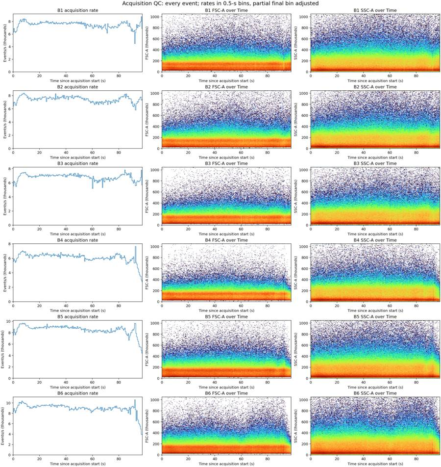
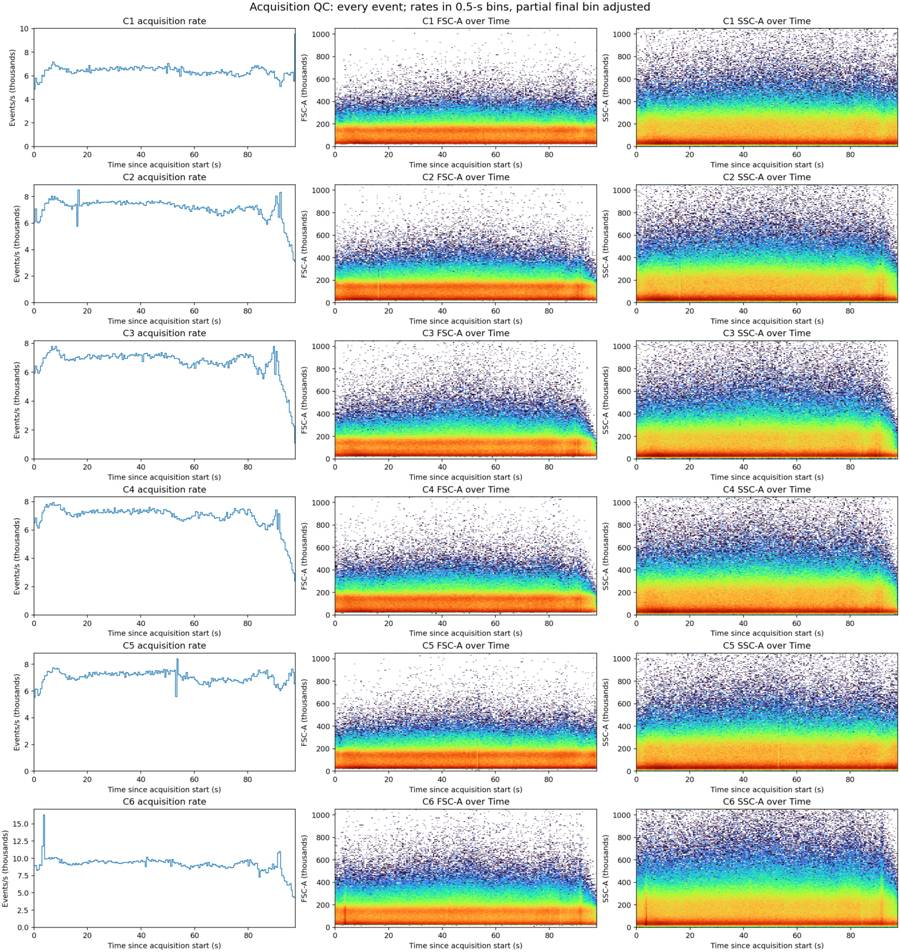
tool call · exec
text(await tools.exec_command({cmd:"cat > /task/outputs/write_flags.py <<'PY'\n\"\"\"Apply the documented manual QC decisions to the measured per-well evidence.\"\"\"\nfrom pathlib import Path\nimport json\nimport pandas as pd\nO=Path('/task/outputs');layout=pd.read_csv('/task/inputs/plate_layout.csv');qc=pd.read_csv(O/'qc_metrics.csv').set_index('well')\nrows=[]\nfor item in layout.itertuples(index=False):\n r=qc.loc[item.well];w=item.well\n evidence=(f'total={int(r.total)}; Cells={int(r.Cells)}; Singlets={int(r.Singlets)}; Live={int(r.Live)}; GFP_pos={int(r.GFP_pos)}; '\n f'central median rate={r.baseline_rate_events_s:.0f} events/s; final 5 s={r.terminal_5s_rate:.1f} events/s '\n f'({100*r.terminal_5s_rate_ratio:.1f}% of central rate); '\n f'FSC-A/SSC-A at scale maximum 1048575={r[\"FSC-A_sat_pct\"]:.4f}%/{r[\"SSC-A_sat_pct\"]:.4f}%; '\n f'Live BL1-A at maximum={int(r.live_BL1_sat_n)} ({100*r.live_BL1_sat_n/r.Live:.4f}% of Live). ')\n usable='yes';category='ok'\n if w=='B7':\n usable='no';category='clog_or_interrupted_flow'\n evidence+=('Abrupt flow interruption: 61.5-62.0 s=560 events/s, then 62.5-63.0 s=17080 events/s; '\n '30.5-31.0 s burst=18016 events/s; startup 0.5-1.0 s=194 events/s; '\n 'FSC/SSC clouds shift during startup and the interruption; full well excluded; confidence: high')\n elif w=='B8':\n usable='no';category='clog_or_interrupted_flow'\n evidence+=('Startup interruption: 1.0-3.5 s=32-132 events/s across five consecutive 0.5-s bins; '\n '9.0-9.5 s burst=15272 events/s; early FSC/SSC collapse and recover; full well excluded; confidence: high')\n elif r.time_reversals:\n usable='no';category='other'\n evidence+=(f'Non-monotonic acquisition Time: {int(r.time_reversals)} reset from {r.reset_from_s:.3f} to '\n f'{r.reset_to_s:.3f} s (backward {r.largest_backward_step_s:.3f} s) after '\n f'{int(r.events_before_first_reset)} events ({100*r.events_before_first_reset/r.total:.3f}% of total). '\n 'Overlapping acquisition segments; initial block provenance cannot be established. '\n 'Conservative whole-well exclusion; confidence: medium')\n elif r.Live<1000 or r.total<10000:\n usable='no';category='too_few_events';evidence+='Below the analysis minimum of 1000 Live or 10000 total events; confidence: high'\n else:\n evidence+=(f'No Time reversal; minimum complete 0.5-s rate={r.min_complete_halfsec_rate:.0f} events/s; '\n f'time below 20% of central rate after first second={r.low_rate_seconds_after_1s:.1f} s. ')\n if r.terminal_5s_rate_ratio<.75:\n evidence+=(f'Gradual terminal slowdown; Live/Singlets={r.central_60pct_Live_pct:.2f}% centrally and '\n f'{r.last_5s_Live_pct:.2f}% in final 5 s; retained after time/scatter review. ')\n if w=='A1':evidence+='Recorded flowrate=200 uL/min (other wells 100); 46.236 s duration with stable scatter and adequate yield. '\n if w=='D5':evidence+='Lower yield but continuous 97.753 s acquisition; 5982 Live events pass minimum. GFP_pos=40 has limited counting precision. '\n evidence+='No exclusion criterion met.'\n rows.append(dict(file=item.file,well=w,usable=usable,reason_category=category,evidence=evidence))\nflags=pd.DataFrame(rows,columns=['file','well','usable','reason_category','evidence'])\nflags.to_csv(O/'flags.csv',index=False)\nassert len(flags)==42\nassert ((flags.usable=='yes')==(flags.reason_category=='ok')).all()\nassert flags.loc[flags.usable=='no','evidence'].str.contains(r'confidence: (?:high|medium|low)$').all()\nassert flags[['file','well']].equals(layout[['file','well']])\nprint(flags.loc[flags.usable=='no',['well','reason_category']].to_string(index=False))\nprint('Usable',int((flags.usable=='yes').sum()),'Excluded',int((flags.usable=='no').sum()))\nPY\npython /task/outputs/write_flags.py\ncat > /task/outputs/notes.md <<'MD'\n## Gates\n\nFlowKit 1.2.3; one shared tree: **Cells → Singlets → Live → GFP_pos**. All events were evaluated, uncompensated, using detector IDs. Counts include every ancestor gate. Four operations only; NCAM was not gated. Exact polygon vertices are in `gate_parameters.json` and `gates.xml`.\n\n- **Cells:** FSC-A × SSC-A polygon around the main cloud, checked across all wells in `plots/gates_01.png`–`gates_07.png`. Lower edges at FSC-A 40,000 and SSC-A 20,000 remove debris; the sloping outline follows the cloud and ends at 1,000,000, excluding the 1,048,575 saturation rails.\n- **Singlets:** SSC-H × SSC-A polygon around the dense diagonal, following its slight curvature; events with disproportionately high area are excluded. A1, A2, A12, B6 and C6 established the band; all wells were checked.\n- **Live:** one-dimensional rectangle, **RL3-A < 400**, with no lower bound. A2, A7, B1 and B2 show a shallow common trough around 300–500 between the dim population and the bright population. Their Singlets density plots and histograms set this boundary; plate-wide plots checked its applicability.\n- **GFP_pos:** one-dimensional rectangle, **BL1-A ≥ 500**, with no upper bound. B1/B2, which have the fewest GFP-bright events, set the negative edge; D3/A9 corroborated it. On Live, B1’s 99.9th percentile is 480; B2’s 99.5th percentile is 347. See `plots/boundary_selection.png` and `fluorescence_histograms_1.png`–`_3.png`.\n\nGates use raw units. Fluorescence displays use logicle T=1,048,576, W=0.5, M=4.5, A=0. No controls were available: the shallow viability separation and inferred GFP-negative edge introduce shared threshold uncertainty; specificity is uncalibrated.\n\n## Quality control\n\nScreened all 42 wells for identity/channel/voltage consistency, finite values, yields, detector clipping, event-order Time reversals, 0.5-s event rates and Time/scatter plots. FlowKit already converts Time to seconds using $TIMESTEP=0.001. Rates below 20% of the middle-60% median triggered review; partial final bins were adjusted. Minimum yield was 10,000 total and 1,0
… [1,207 more characters not shown]tool output
Script completed
Wall time 0.3 seconds
Output:
{"chunk_id":"57fc38","wall_time_seconds":0.167369596,"exit_code":0,"original_token_count":57,"output":"well reason_category\n B7 clog_or_interrupted_flow\n B8 clog_or_interrupted_flow\n C6 other\n C11 other\n D4 other\nUsable 37 Excluded 5\n431 /task/outputs/notes.md\n"}42
agent
The count verification is complete for all 42 files. The QC report marks 37 wells usable and excludes B7/B8 for flow interruptions, plus C6/C11/D4 conservatively for timestamp resets. D5 remains usable with 5,982 Live events and 40 GFP_pos events. I’m finishing the plot review and deliverable checks.
tool call · exec
text(await tools.write_stdin({session_id:66383,chars:"",yield_time_ms:1000,max_output_tokens:500}));
text(await tools.write_stdin({session_id:72193,chars:"",yield_time_ms:1000,max_output_tokens:500}));
image((await tools.view_image({path:"/task/outputs/plots/gates_06.png"})).image_url);
image((await tools.view_image({path:"/task/outputs/plots/gates_07.png"})).image_url);
image((await tools.view_image({path:"/task/outputs/plots/fluorescence_histograms_3.png"})).image_url);
tool output
Script completed Wall time 0.2 seconds Output:
{"chunk_id":"16fb5a","wall_time_seconds":0.000002755,"exit_code":0,"original_token_count":0,"output":""}{"chunk_id":"700811","wall_time_seconds":0.000001486,"exit_code":0,"original_token_count":0,"output":""}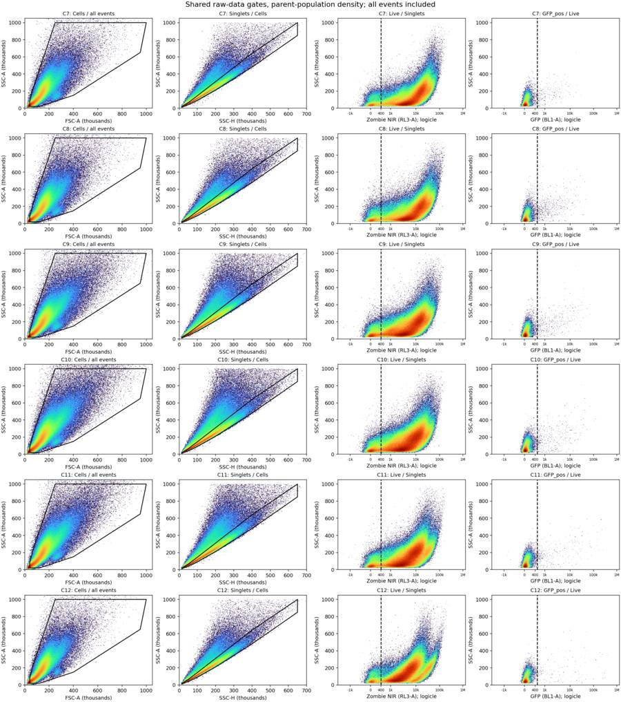
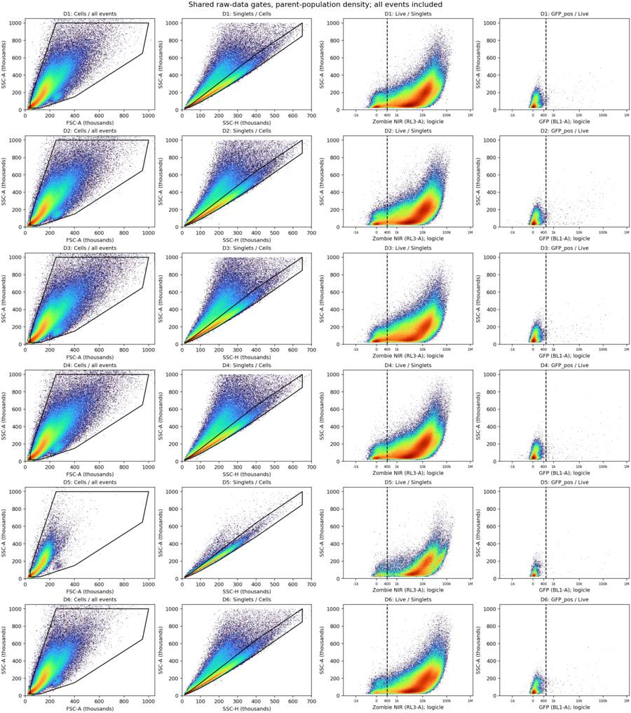
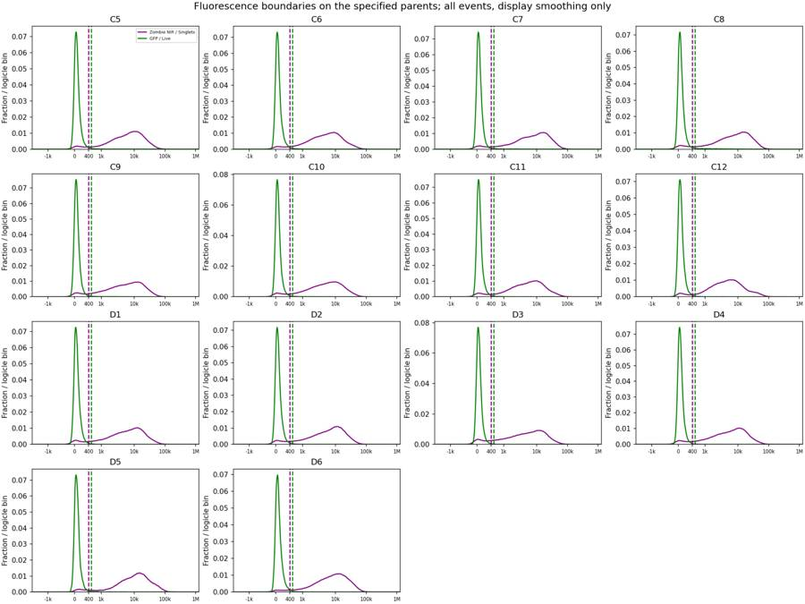
tool call · exec
image((await tools.view_image({path:"/task/outputs/plots/qc_time_04.png"})).image_url);
image((await tools.view_image({path:"/task/outputs/plots/qc_time_06.png"})).image_url);
image((await tools.view_image({path:"/task/outputs/plots/qc_time_07.png"})).image_url);
tool output
Script completed Wall time 0.2 seconds Output:
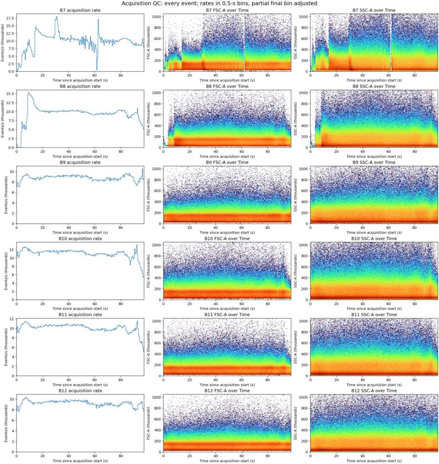
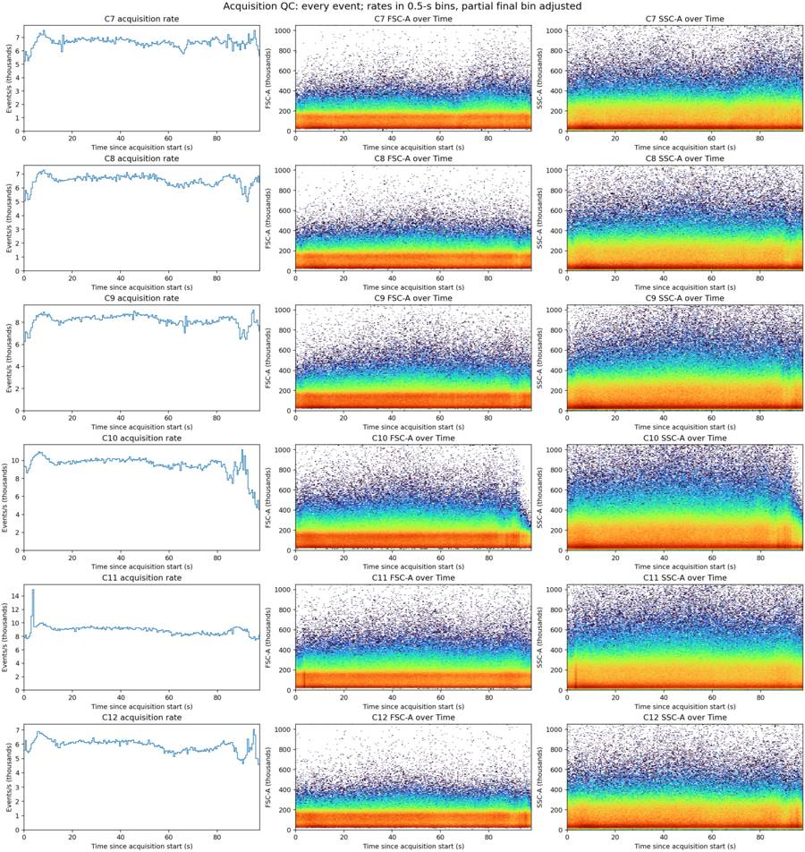
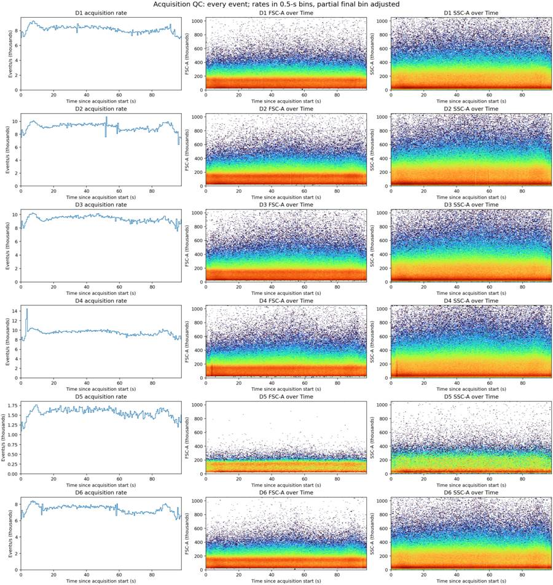
tool call · exec
image((await tools.view_image({path:"/task/outputs/plots/fluorescence_histograms_1.png"})).image_url);
image((await tools.view_image({path:"/task/outputs/plots/fluorescence_histograms_2.png"})).image_url);
image((await tools.view_image({path:"/task/outputs/plots/boundary_selection.png"})).image_url);
tool output
Script completed Wall time 0.1 seconds Output:
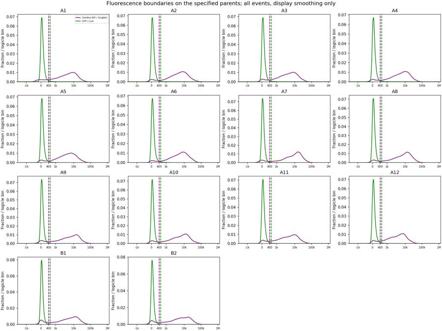
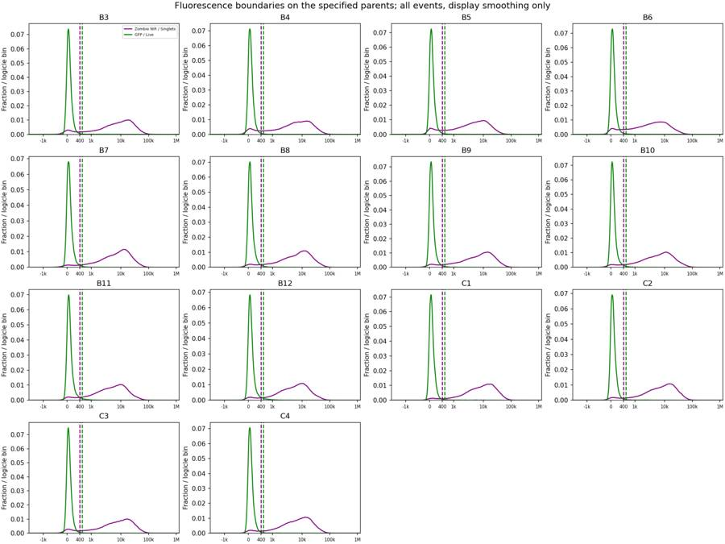
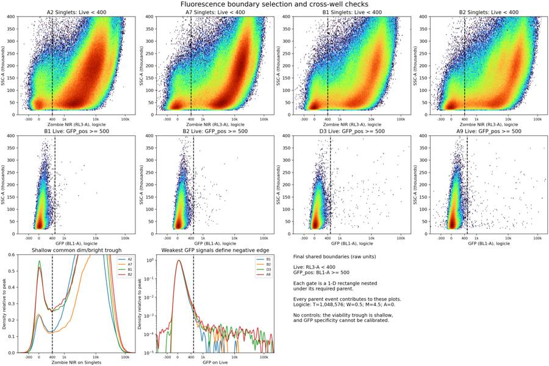
tool call · exec
text(await tools.apply_patch("*** Begin Patch\n*** Update File: /task/outputs/quality_control.py\n@@\n- with open(O/'validation.json','w') as f: json.dump({'flowkit_version':fk.__version__,'files':42,'population_rows':168,'all_checks_passed':True,'checks':validations},f,indent=2)\n+ with open(O/'validation.json','w') as f:\n+ json.dump({'flowkit_version':fk.__version__,'files':42,'population_rows':168,\n+ 'all_reproducibility_checks_passed':True,\n+ 'qc_time_reversal_wells':[r['well'] for r in validations if not r['time_monotonic']],\n+ 'checks':validations},f,indent=2)\n*** Update File: /task/outputs/notes.md\n@@\n-- **Singlets:** SSC-H × SSC-A polygon around the dense diagonal, following its slight curvature; events with disproportionately high area are excluded. A1, A2, A12, B6 and C6 established the band; all wells were checked.\n+- **Singlets:** SSC-H × SSC-A polygon around the dense diagonal, following its slight curvature; events with disproportionately high area are excluded. A1, A2, A12 and B6 established the band; all wells were checked.\n@@\n-- **GFP_pos:** one-dimensional rectangle, **BL1-A ≥ 500**, with no upper bound. B1/B2, which have the fewest GFP-bright events, set the negative edge; D3/A9 corroborated it. On Live, B1’s 99.9th percentile is 480; B2’s 99.5th percentile is 347. See `plots/boundary_selection.png` and `fluorescence_histograms_1.png`–`_3.png`.\n+- **GFP_pos:** one-dimensional rectangle, **BL1-A ≥ 500**, with no upper bound. B1/B2, which have the fewest GFP-bright events, set the negative edge; D3/A9 corroborated it. On Live, B1’s 99.9th percentile is 480; B2’s 99.5th percentile is 347. See `plots/boundary_selection.png` and `plots/fluorescence_histograms_1.png`–`_3.png`.\n@@\n-**Exclude B7/B8** for interrupted flow with bursts and scatter changes (high confidence). **Conservatively exclude C6/C11/D4** for approximately 3.8-s backward Time resets and overlapping acquisition segments of uncertain origin (`other`, medium confidence). Their initial blocks contain 4,443/4,103/4,084 events; no exact duplicates were found elsewhere on the plate. See `plots/qc_flag_review.png` and `time_resets.png`.\n+**Exclude B7/B8** for interrupted flow with bursts and scatter changes (high confidence). **Conservatively exclude C6/C11/D4** for approximately 3.8-s backward Time resets and overlapping acquisition segments of uncertain origin (`other`, medium confidence). Their initial blocks contain 4,443/4,103/4,084 events; no exact duplicates were found elsewhere on the plate. See `plots/qc_flag_review.png` and `plots/time_resets.png`.\n*** End Patch"));
text(await tools.exec_command({cmd:"python - <<'PY'\nfrom pathlib import Path\nimport json,hashlib,re\nimport pandas as pd,numpy as np,flowkit as fk\nO=Path('/task/outputs');layout=pd.read_csv('/task/inputs/plate_layout.csv')\nc=pd.read_csv(O/'counts.csv');f=pd.read_csv(O/'flags.csv');v=json.loads((O/'validation.json').read_text())\nv['all_reproducibility_checks_passed']=v.pop('all_checks_passed')\nv['qc_time_reversal_wells']=[x['well'] for x in v['checks'] if not x['time_monotonic']]\n(O/'validation.json').write_text(json.dumps(v,indent=2)+'\\n')\nassert list(c)==['file','well','population','count','parent_population','pct_of_parent']\nassert list(f)==['file','well','usable','reason_category','evidence']\nassert len(c)==168 and len(f)==42\nassert c['count'].dtype.kind in 'iu' and c['count'].ge(0).all()\nassert c.pct_of_parent.between(0,100).all()\nassert c[['file','well']].drop_duplicates().reset_index(drop=True).equals(layout[['file','well']])\nassert f[['file','well']].equals(layout[['file','well']])\nassert set(f.reason_category)<=set('ok clog_or_interrupted_flow ran_dry too_few_events saturation bad_control mislabeled_or_unexpected other'.split())\nassert ((f.usable=='yes')==(f.reason_category=='ok')).all()\nassert f[f.usable=='no'].evidence.str.contains(r'confidence: (high|medium|low)$').all()\nassert c.population.tolist()==['Cells','Singlets','Live','GFP_pos']*42\nnotes=(O/'notes.md').read_text();assert re.findall(r'^## .+$',notes,re.M)==['## Gates','## Quality control','## Deviations']\nassert len(notes.split())<500\nassert len(v['checks'])==42 and all(x['counts_exact'] and x['xml_roundtrip_memberships_equal'] and x['nested_memberships'] and x['pct_of_parent_exact'] for x in v['checks'])\ngs=fk.parse_gating_xml(str(O/'gates.xml'));ids=gs.get_gate_ids();assert len(ids)==4\nfor name,path in ids:\n gate=gs.get_gate(name,path);assert re.match('^[A-Za-z][A-Za-z0-9_]*$',name)\n assert all(d.compensation_ref=='uncompensated' and d.transformation_ref is None for d in gate.dimensions)\n print(name,path,type(gate).__name__,[(d.id,d.min,d.max) for d in gate.dimensions])\nmeta=json.loads((O/'work/metadata.json').read_text());ref=[(r['pnn'],r['pns']) for r in meta[0]['channels']]\nassert all([(r['pnn'],r['pns']) for r in m['channels']]==ref for m in meta)\n(O/'plots/fluorescence_selected_overlay.png').unlink(missing_ok=True)\nmanifest={name:hashlib.sha256((O/name).read_bytes()).hexdigest() for name in ['counts.csv','flags.csv','gates.xml','notes.md']}\n(O/'checksums.json').write_text(json.dumps(manifest,indent=2)+'\\n')\nprint('Final schema checks passed; counts',len(c),'flags',len(f),'usable',int((f.usable=='yes').sum()))\nprint('Total events:',sum(x['events'] for x in v['checks']))\nprint('Population totals:',c.groupby('population',sort=False)['count'].sum().to_dict())\nprint('notes words:',len(notes.split()))\nprint(f[f.usable=='no'][['well','reason_category','evidence']].to_string(index=False))\nPY","max_output_tokens":3500}));
tool output
Script completed
Wall time 1.2 seconds
Output:
{}
{"chunk_id":"c112cc","wall_time_seconds":1.070226184,"exit_code":0,"original_token_count":971,"output":"<stdin>:18: UserWarning: This pattern is interpreted as a regular expression, and has match groups. To actually get the groups, use str.extract.\nCells ('root',) PolygonGate [('FSC-A', None, None), ('SSC-A', None, None)]\nSinglets ('root', 'Cells') PolygonGate [('SSC-H', None, None), ('SSC-A', None, None)]\nLive ('root', 'Cells', 'Singlets') RectangleGate [('RL3-A', None, 400.0)]\nGFP_pos ('root', 'Cells', 'Singlets', 'Live') RectangleGate [('BL1-A', 500.0, None)]\nFinal schema checks passed; counts 168 flags 42 usable 37\nTotal events: 33927506\nPopulation totals: {'Cells': 28199993, 'Singlets': 22965274, 'Live': 2103601, 'GFP_pos': 17317}\nnotes words: 430\nwell reason_category evidence\n B7 clog_or_interrupted_flow total=954909; Cells=792209; Singlets=627399; Live=40631; GFP_pos=378; central median rate=10475 events/s; final 5 s=8913.2 events/s (85.1% of central rate); FSC-A/SSC-A at scale maximum 1048575=0.1181%/0.5608%; Live BL1-A at maximum=0 (0.0000% of Live). Abrupt flow interruption: 61.5-62.0 s=560 events/s, then 62.5-63.0 s=17080 events/s; 30.5-31.0 s burst=18016 events/s; startup 0.5-1.0 s=194 events/s; FSC/SSC clouds shift during startup and the interruption; full well excluded; confidence: high\n B8 clog_or_interrupted_flow total=918778; Cells=760588; Singlets=612187; Live=47312; GFP_pos=553; central median rate=9954 events/s; final 5 s=6996.4 events/s (70.3% of central rate); FSC-A/SSC-A at scale maximum 1048575=0.0424%/0.3733%; Live BL1-A at maximum=0 (0.0000% of Live). Startup interruption: 1.0-3.5 s=32-132 events/s across five consecutive 0.5-s bins; 9.0-9.5 s burst=15272 events/s; early FSC/SSC collapse and recover; full well excluded; confidence: high\n C6 other total=891011; Cells=726828; Singlets=596837; Live=36372; GFP_pos=355; central median rate=9348 events/s; final 5 s=6053.2 events/s (64.8% of central rate); FSC-A/SSC-A at scale maximum 1048575=0.0152%/0.3141%; Live BL1-A at maximum=2 (0.0055% of Live). Non-monotonic acquisition Time: 1 reset from 3.894 to 0.014 s (backward 3.880 s) after 4443 events (0.499% of total). Overlapping acquisition segments; initial block provenance cannot be established. Conservative whole-well exclusion; confidence: medium\n C11 other total=868685; Cells=721292; Singlets=589696; Live=45544; GFP_pos=376; central median rate=9034 events/s; final 5 s=7850.8 events/s (86.9% of central rate); FSC-A/SSC-A at scale maximum 1048575=0.0379%/0.3432%; Live BL1-A at maximum=0 (0.0000% of Live). Non-monotonic acquisition Time: 1 reset from 3.896 to 0.014 s (backward 3.882 s) after 4103 events (0.472% of total). Overlapping acquisition segments; initial block provenance cannot be established. Conservative whole-well exclusion; confidence: medium\n D4 other total=925805; Cells=775148; Singlets=625613; Live=53575; GFP_pos=255; central median rate=9664 events/s; final 5 s=8421.8 events/s (87.1% of central rate); FSC-A/SSC-A at scale maximum 1048575=0.0422%/0.4268%; Live BL1-A at maximum=1 (0.0019% of Live). Non-monotonic acquisition Time: 1 reset from 3.836 to 0.014 s (backward 3.822 s) after 4084 events (0.441% of total). Overlapping acquisition segments; initial block provenance cannot be established. Conservative whole-well exclusion; confidence: medium\n"}46
agent
Completed all 42 wells: **168 population counts**, verified against the reloaded gates.
**37 wells usable.** Excluded B7/B8 for flow interruptions; conservatively excluded C6/C11/D4 for timestamp resets.
[Counts](/task/outputs/counts.csv) · [Flags and evidence](/task/outputs/flags.csv) · [Notes](/task/outputs/notes.md) · [FlowKit gates](/task/outputs/gates.xml)
Plots and Python scripts are saved in `/task/outputs/`.